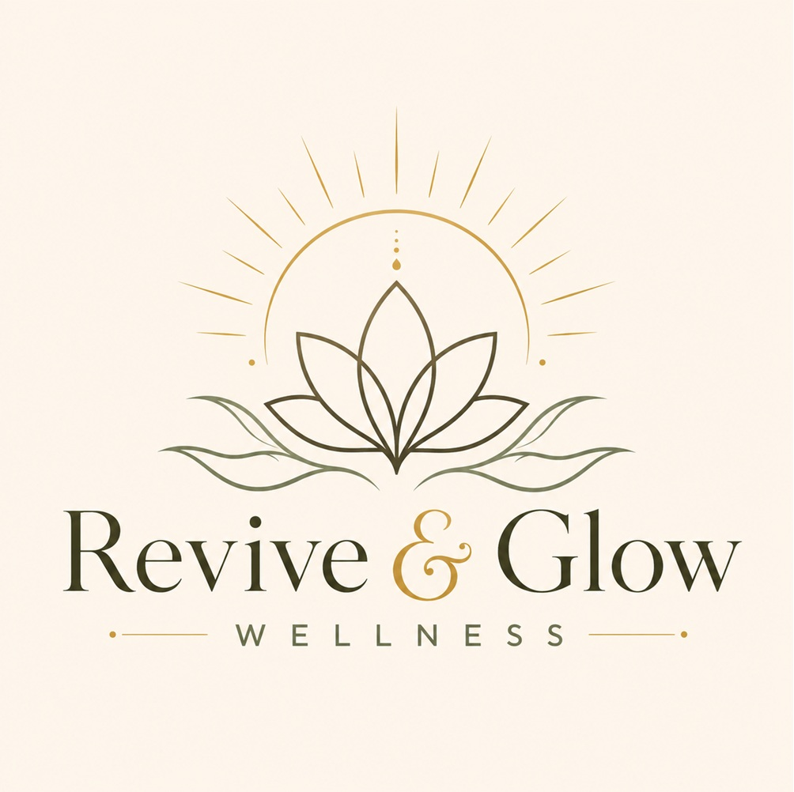
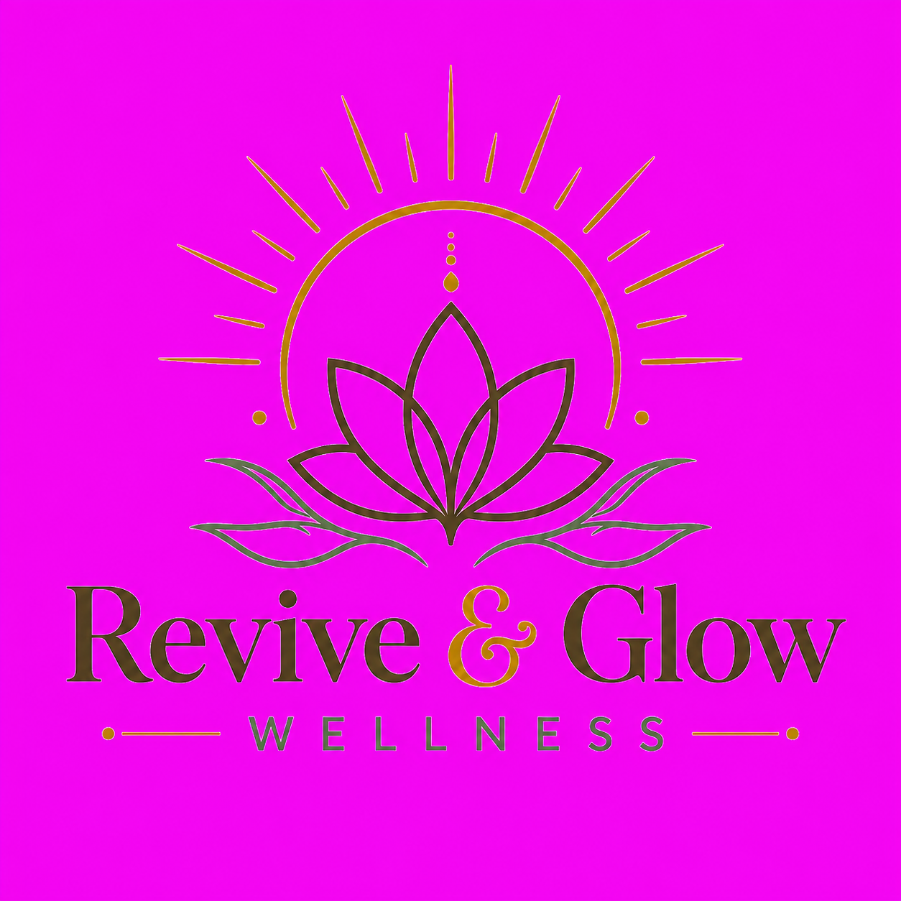
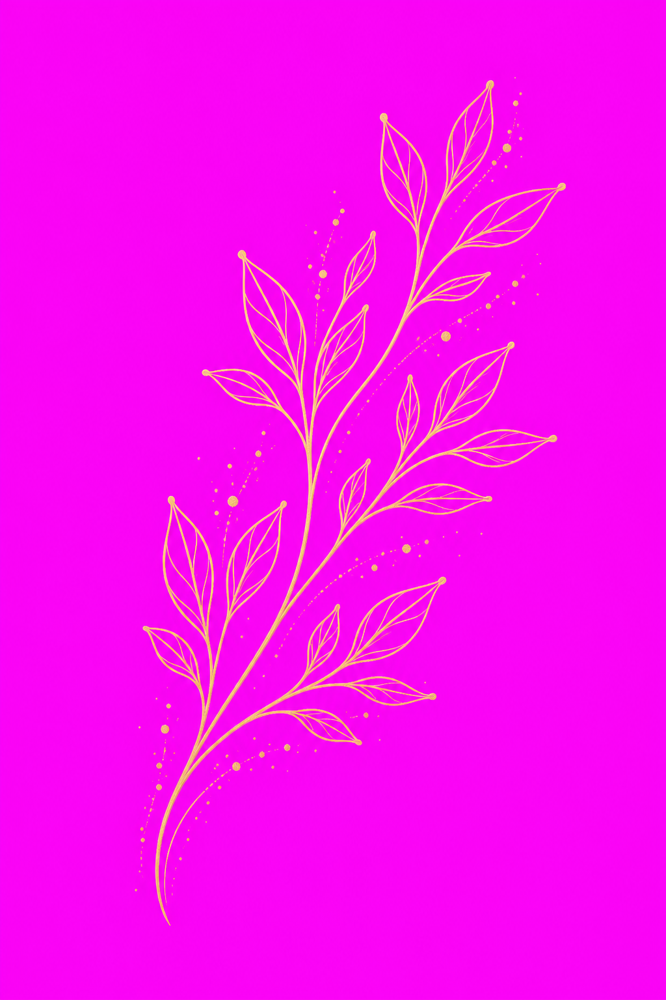

Revive & Glow WellnessManual Oficial da Marca · Ed. 1.0
Documento interno & de parceiros — Pinellas Park, Florida
Recovery & Longevity Studio · Pinellas Park, Florida
O Livro da Marca
Manual oficial de marca, conteúdo e experiência Revive & Glow Wellness
Edição 1.0
Julho de 2026
Confidencial
Uso interno e de parceiros autorizados
ColofãoSobre este documento
Este é o documento-fonte da marca Revive & Glow Wellness. Quando houver dúvida sobre como a marca fala, se parece ou se comporta, a resposta está aqui — e se não estiver, este manual precisa ser atualizado.
O que é
Um manual operacional completo: fundação de marca, identidade visual, direção de arte e fotografia, geração de imagens com IA, voz e linguagem, catálogo de terapias, estratégia de conteúdo e social, e padrões de atendimento.
Foi escrito para ser usado, não admirado. Cada capítulo termina em algo aplicável: uma regra, um template, um script, um prompt, um checklist.
Para quem é
Sócias e gestão — Partes I, VI, VII, VIII
Designers e agências — Partes II, III, IV
Fotógrafos e videomakers — Parte III
Social media e copywriters — Partes V, VII
Equipe de estúdio — Partes VI, VIII
Novos colaboradores — Partes I, V, VIII
A convenção bilíngue deste manual
A Revive & Glow atende o público de Tampa Bay, na Flórida. Por isso todo material que vai para o público é escrito em inglês — legendas, headlines, prompts de IA, hashtags, scripts de atendimento, textos de anúncio. O texto explicativo, as regras e o raciocínio estratégico estão em português, para uso da liderança.
Sempre que um bloco puder ser copiado e publicado como está, ele aparece marcado:
Recover. Restore. Glow.
This is what a ready-to-publish block looks like. Copy it exactly as written — the wording, the punctuation, and the line breaks are all deliberate.
#ReviveAndGlow #TampaBayWellness
Os prompts de IA aparecem em blocos monoespaçados. Os trechos em [colchetes] são variáveis que você troca:
Editorial wellness photograph of [subject], soft warm side light,
deep forest green and cream palette, gold accents, calm and unhurried.
Regras de governança
Situação
O que fazer
O manual responde
Siga o manual. Não é necessário pedir aprovação.
O manual não responde
Escolha a opção mais próxima do espírito da marca, produza, e registre a dúvida. A decisão vira regra na próxima edição.
O manual está errado ou desatualizado
Sinalize para as fundadoras. Nenhuma regra deste manual é sagrada — exceto as de compliance (§5.6, §5.7, Anexo C), que são obrigatórias por lei e por seguro.
Você quer quebrar uma regra
Pode acontecer, e às vezes deve. Mas quebre uma regra por peça, de propósito, e saiba qual.
Aviso obrigatório
A Revive & Glow Wellness oferece serviços de bem-estar e relaxamento. Não somos um serviço médico e não diagnosticamos, tratamos, curamos nem previnemos qualquer doença ou condição. Todo material produzido a partir deste manual — sem exceção — precisa respeitar essa fronteira. Ver §5.6, §5.7 e Anexo C.
Fonte da verdade
Os fatos deste manual (preços, equipamentos, datas, nomes, endereço, disclaimers) foram extraídos do site oficial reviveandglowwellness.ai em julho de 2026. Se o site e o manual divergirem, o site é a fonte da verdade para preço e oferta; o manual é a fonte da verdade para marca, voz e visual. Ambos devem ser reconciliados.
SumárioO que há neste livro
IA Marca
1.1 A origem: como o Revive & Glow nasceu
1.2 Missão, visão e valores
1.3 Posicionamento e a promessa da marca
1.4 Arquitetura da marca
1.5 Público: os quatro perfis
1.6 Cenário competitivo e nosso território
1.7 Personalidade e arquétipo
1.8 Os invariantes: o que nunca muda
IIBrand Book — Identidade Visual
2.1 Visão geral do sistema visual
2.2 O símbolo: anatomia e significado
2.3 O logotipo: versões oficiais
2.4 Manual de uso da logo
2.5 Usos incorretos da logo
2.6 Paleta oficial de cores
2.7 Proporção, combinação e acessibilidade
2.8 Tipografia
2.9 Elementos gráficos da marca
2.10 Iconografia
2.11 Grid, layout e espaçamento
2.12 Aplicações da marca
2.13 Co-branding e parceiros
2.14 Arquivos, nomenclatura e assets
2.15 A logo oficial — regra de aplicação
2.16 Ativos de arte já aprovados
IIIDireção de Arte e Fotografia
3.1 Princípios de direção de arte
3.2 Luz: a assinatura visual
3.3 Composição e enquadramento
3.4 Cor e tratamento de imagem
3.5 Direção de fotografia: o briefing padrão
3.6 Shot list oficial
3.7 Retratos
3.8 Fotografia de pets
3.9 Vídeo: direção, movimento e som
3.10 O que nunca fotografamos
3.11 Checklist de shooting day
3.12 Direitos de imagem e consentimento
3.13 Direção criativa permanente
3.14 Padrão técnico e identidade da campanha
IVImagens com Inteligência Artificial
4.1 Quando usar IA — e quando não usar
4.2 Regras éticas e legais
4.3 Anatomia de um prompt Revive & Glow
4.4 O bloco de estilo oficial
4.5 Negative prompts oficiais
4.6 Prompts: ambiente e estúdio
4.7 Prompts: terapias
4.8 Prompts: pessoas e lifestyle
4.9 Prompts: pets
4.10 Prompts: still life, textura e fundos
4.11 Prompts: sazonal e campanhas
4.12 Prompts para vídeo e Reels
4.13 Controle de qualidade de imagem IA
VVoz, Tom e Linguagem
5.1 A voz da marca em uma frase
5.2 Os quatro atributos de voz
5.3 Escala de tom por contexto
5.4 House style: gramática e estilo
5.5 Léxico oficial
5.6 Palavras proibidas e por quê
5.7 Como falar de ciência sem prometer cura
5.8 Fórmulas de copy
5.9 Nomes próprios e marcas registradas
5.10 A voz em cada canal
5.11 Português e espanhol
VICatálogo de Terapias
6.1 Como ler este catálogo
6.2 O Revive Method™
6.3 Red Light Therapy
6.4 Infrared Sauna
6.5 Cold Plunge
6.6 Compression Therapy
6.7 Whole Body Vibration
6.8 Grounding
6.9 Hydrogen Water
6.10 Body Composition
6.11 AI Wellness Plans
6.12 Pet Wellness & Heal Together
6.13 Coaching com Patricia Junqueira
6.14 Longevity Medicine · Altro Health
6.15 Memberships, pacotes e preços
6.16 Contraindicações e triagem
6.17 Matriz terapia × objetivo
VIIConteúdo e Redes Sociais
7.1 A estratégia em uma página
7.2 Os cinco pilares de conteúdo
7.3 Instagram: estratégia
7.4 Instagram: grid, capas e destaques
7.5 Reels: estratégia e formatos
7.6 Stories: estratégia e rotina
7.7 Facebook: estratégia
7.8 Google Business Profile
7.9 Reviews e prova social
7.10 Anúncios: estrutura de campanhas
7.11 Anúncios: criativos e copy
7.12 Os primeiros 100 posts
7.13 Calendário anual de conteúdo
7.14 Templates de campanha
7.15 Rotina operacional semanal
7.16 Métricas e relatório mensal
7.17 Checklist antes de publicar
7.18 Comentários difíceis e crise
VIIIExperiência e Atendimento
8.1 A jornada do cliente
8.2 Padrões de atendimento
8.3 O roteiro da primeira visita
8.4 Scripts: telefone, DM, e-mail
8.5 Objeções e respostas
8.6 Vender membership sem pressão
8.7 Situações delicadas
8.8 Segurança, higiene e protocolos
8.9 Onboarding de colaboradores
8.10 Retenção e relacionamento
✦Anexos
A Ficha-resumo da marca (one-pager)
B Especificações rápidas de arquivo
C Biblioteca de disclaimers oficiais
D Hashtags oficiais
E Contatos e responsabilidades
F Controle de versões
I
Parte Um
A Marca
Antes de qualquer cor, fonte ou legenda: por que a Revive & Glow existe, para quem, e o que ela promete.
1.1 A origem
1.2 Missão, visão e valores
1.3 Posicionamento e promessa
1.4 Arquitetura da marca
1.5 Público: os quatro perfis
1.6 Cenário competitivo
1.7 Personalidade e arquétipo
1.8 Os invariantes
1.1A origem: como o Revive & Glow nasceu
Toda marca de bem-estar diz que quer que você se sinta bem. A nossa começou de uma pergunta mais específica: por que recuperar-se é tão difícil, tão caro e tão impessoal?
O problema que enxergamos
Em Tampa Bay há academias em cada esquina, spas de hotel, clínicas médicas e estúdios de crioterapia. Mas há uma lacuna no meio: um lugar onde uma pessoa comum — não um atleta profissional, não um paciente — possa cuidar da própria recuperação de forma consistente, acessível e mensurável, sem se sentir num consultório nem num vestiário.
As terapias de recuperação que funcionam existiam. O que não existia era um lugar que:
reunisse as modalidades sob um mesmo teto, numa sequência que faz sentido;
fosse desenhado para voltar — não para uma experiência única de aniversário;
medisse o progresso, para você não precisar acreditar por fé;
tratasse a família inteira como parte do cuidado — inclusive o cachorro;
e recebesse as pessoas com calor humano, não com jargão clínico.
As duas fundadoras
A Revive & Glow Wellness foi criada por Juliana Shewmaker e Thaysa M Gomes — duas mulheres que acreditam que recuperação e longevidade devem ser algo pessoal, caloroso e ao alcance, para você e para a sua família inteira.
Juliana Shewmaker · Co-fundadora
Movida por construir um espaço onde sentir-se bem seja um modo de vida — proativo, natural e pessoal.
Thaysa M Gomes · Co-fundadora
Apaixonada por longevidade e pelo bem-estar de toda a família — garantindo que cada hóspede, e cada pet, saia se sentindo melhor.
A completar antes da Edição 1.1
Esta seção está escrita a partir do que a marca já comunica publicamente. Para que a história de origem funcione em entrevistas, imprensa e no “Sobre” do site, as fundadoras precisam inserir três detalhes pessoais concretos: (1) o momento específico que acendeu a ideia — uma lesão, um diagnóstico na família, uma viagem, um pet doente; (2) quando e como as duas decidiram fazer isso juntas; (3) por que Pinellas Park. Histórias de origem vencem por especificidade, não por adjetivos. Sem esses três fatos, use a versão curta abaixo.
A narrativa oficial — versões aprovadas
Três tamanhos, todos dizendo a mesma coisa. Use sempre uma destas versões; não improvise a história em público.
Versão de uma linha · bio de Instagram, assinatura de e-mail
A boutique recovery & longevity studio in Pinellas Park — where science-backed therapies help you recover, restore, and glow.
Versão curta · sobre, diretórios, apresentações
Revive & Glow Wellness is a boutique recovery and longevity studio in Pinellas Park, Florida, founded by Juliana Shewmaker and Thaysa M Gomes. We bring infrared sauna, cold plunge, red light therapy, compression, whole body vibration, grounding, and hydrogen water together under one roof — sequenced into a single, repeatable routine called The Revive Method™.
Every journey starts with a complimentary body composition assessment, so your plan is built around your goals and your progress is something you can actually see. And because wellness shouldn't stop at the front door, we welcome dogs too.
Versão longa · imprensa, parcerias, investidores
Tampa Bay has no shortage of places to work out. What it didn't have was a place built for the other half of the equation — recovery.
Revive & Glow Wellness opened in Pinellas Park to close that gap. Founded by Juliana Shewmaker and Thaysa M Gomes, it's a boutique studio where the therapies that help the body recover — infrared sauna, cold plunge, red light therapy, dynamic compression, whole body vibration, grounding, and hydrogen water — are gathered in one calm space and sequenced into a routine anyone can follow.
That routine is The Revive Method™: illuminate, restore, refresh, recover, rehydrate. It takes the guesswork out of recovery and turns it into something you can do twice a week, for years.
What makes the studio unusual is that it insists on proof. Every member starts with a complimentary body composition assessment on a Tanita RD-545 analyzer, receives AI-guided recommendations built around their goals, and re-measures monthly. Muscle mass, body fat, visceral fat, metabolic age — progress you can see, not just feel.
And it was designed for whole families. Red Light Therapy for Dogs and the “Heal Together” experience let members recover side by side with their dogs — a small idea that says a lot about how the studio thinks about care.
Revive & Glow Wellness opens August 22, 2026 at 9899 66th St N, Pinellas Park, FL 33782.
Regra de ouro da história
Nunca conte a origem como uma lista de equipamentos. Conte como uma lacuna que existia e foi preenchida. O equipamento é a prova, não a trama.
1.2Missão, visão e valores
A missão diz o que fazemos todos os dias. A visão diz para onde isso leva. Os valores dizem como decidimos quando ninguém está olhando.
Missão
Tornar a recuperação um hábito acessível — e o progresso, algo visível.
Reunimos terapias com base científica num espaço calmo e acolhedor, guiamos cada pessoa com um plano feito para ela, e medimos o resultado — para que sentir-se bem deixe de ser sorte e passe a ser rotina.
Visão · 5 anos
Ser o lugar em Tampa Bay onde recuperação e longevidade se tornam parte normal da semana de uma pessoa — como ir ao dentista ou treinar. E provar, com dados dos nossos próprios membros, que consistência supera intensidade.
Ambição de longo prazo
Um modelo replicável de estúdio de recuperação de bairro: pequeno, caloroso, mensurável, aberto a famílias e pets — o oposto do spa de resort e da clínica fria.
Versão pública em inglês
Our mission
To make recovery a habit you can keep — and progress something you can see.
Our vision
A Tampa Bay where taking care of how you recover is as normal as taking care of how you train.
Os seis valores
Cada valor vem com o comportamento que o prova e a decisão que ele orienta. Um valor sem consequência prática é decoração.
Valor
O que significa na prática
A decisão que ele resolve
Prova, não promessa
Medimos antes, medimos depois, e mostramos. Se não podemos medir, dizemos que não podemos.
Diante de duas frases de marketing, escolhemos a que pode ser verificada — mesmo que a outra venda mais.
Calor antes de tecnologia
Cada visita começa com o nome da pessoa e termina com uma despedida de verdade. O equipamento é excelente, mas nunca é o protagonista.
Se investir num equipamento novo custa a atenção da equipe, o equipamento espera.
Calma é um serviço
Silêncio, luz suave, sem pressa, sem música alta, sem venda agressiva. A sensação de respiro é parte do que a pessoa paga.
Nunca sacrificamos a atmosfera para encaixar mais um horário.
Para todos os corpos
Atleta e sedentário, 25 e 75 anos, todos os tamanhos. Nada no espaço, nas imagens ou nas palavras sugere que existe um corpo certo.
Se uma imagem só serve para um tipo de corpo, ela não é publicada.
A família inteira
Cônjuges, filhos adultos, amigos e cachorros fazem parte do círculo de cuidado. Pets não são um truque de marketing — são membros.
Toda campanha grande tem espaço para o lado família/pet da marca.
Honestidade sobre limites
Não somos médicos e dizemos isso com clareza e sem medo. Encaminhamos quando é o certo. Nunca insinuamos cura.
Se uma frase precisa de asterisco para ser verdadeira, ela é reescrita — não asteriscada.
Versão pública dos valores
Proof over promises. We measure, and we show you. Warmth before tech. Great equipment, greater people. Calm is a service. The quiet is part of what you came for. Every body belongs. No “right” body here. Family included. Dogs, too. Honest about limits. Wellness, not medicine — and we'll always say so.
1.3Posicionamento e a promessa da marca
Posicionamento é o que abrimos mão de dizer. Quem tenta ser tudo não é lembrado por nada.
Declaração oficial de posicionamento
Para adultos de Tampa Bay que querem se sentir e se mover melhor, a Revive & Glow Wellness é o estúdio boutique de recuperação e longevidade de bairro que reúne terapias com base científica numa rotina simples e repetível — e mede o seu progresso.
Ao contrário de academias (que só cuidam do esforço), de spas (que cuidam do mimo, não do resultado) e de clínicas (que cuidam da doença), nós cuidamos da recuperação como hábito mensurável — num lugar que parece uma respiração e recebe até o seu cachorro.
A promessa em três níveis
Funcional · o que entregamos
Sete modalidades de recuperação, uma sequência guiada, avaliação de composição corporal e um plano personalizado — por menos que uma mensalidade de academia premium.
Emocional · como a pessoa se sente
Cuidada, não processada. Calma, não estimulada. No controle do próprio corpo, com números para provar.
Identidade · quem ela se torna
Alguém que investe em longevidade de propósito. Não é vaidade — é manutenção inteligente.
O nosso território de marca
A Revive & Glow ocupa o cruzamento entre rigor e ternura. É essa combinação que nos torna difíceis de copiar: qualquer um consegue comprar uma banheira de gelo; quase ninguém consegue fazer parecer um abraço e ainda entregar um relatório mensal.
Nós somos
Recuperação e longevidade
Baseados em evidência, ditos com humildade
Boutique e de bairro
Mensuráveis e recorrentes
Calorosos, femininos, botânicos, calmos
Abertos a famílias e pets
Nós não somos
Uma academia, um estúdio de treino ou um box
Um spa de mimos ou day spa de estética
Uma clínica médica ou med spa injetável
Biohacking extremo, “no pain no gain”
Detox, perda de peso rápida ou cura
Luxo intimidante ou clínico e frio
Os quatro pilares de diferenciação
Toda peça de comunicação deve carregar pelo menos um destes quatro. Se não carrega nenhum, é conteúdo genérico de bem-estar e não precisa existir.
Pilar
A prova
Como aparece na comunicação
1. O Revive Method™
Uma sequência proprietária de 5 passos, não um cardápio solto de serviços.
Sempre nomeado, sempre com o ™, sempre na ordem correta.
Números reais de membros (com autorização), gráficos de progresso, linguagem de “baseline”.
3. Humano + pet
Red Light Therapy for Dogs e o pacote “Heal Together”.
Nenhuma outra marca da região tem isso. É a nossa peça mais compartilhável.
4. Plano guiado por IA
Recomendações personalizadas a partir da avaliação e dos objetivos.
Sempre como guia, nunca como diagnóstico. Ver §5.7.
Assinaturas verbais oficiais
Elemento
Texto oficial
Onde usar
Tagline principal
Recover. Restore. Glow.
Fachada, capas, hero, embalagens. Nunca alterar a ordem nem a pontuação.
Descritor
Recovery & Longevity Studio
Sempre que a marca precisa se explicar em três palavras: assinatura, GBP, diretórios.
Método
The Revive Method™
Ao apresentar a sequência de cinco passos.
Frase de prova
Wellness that you can feel — and measure.
Quando o assunto é resultado, avaliação ou dados.
Frase de convite
Be the first to glow.
Waitlist, pré-abertura, lançamentos.
Frase de família
Wellness for the whole family — pets included.
Conteúdo de pets, campanhas de família.
1.4Arquitetura da marca
Uma marca-mãe forte, um método proprietário, e sub-linhas que nunca competem com o nome principal.
O modelo: marca-mãe dominante
A Revive & Glow Wellness é uma branded house: tudo que oferecemos vive debaixo do mesmo nome. Não criamos marcas independentes para serviços. Isso mantém o reconhecimento concentrado e o custo de marketing baixo — decisão crítica para um estúdio de bairro.
Nível
Nome oficial
Regra de uso
Marca-mãe
Revive & Glow Wellness
Nome legal e comercial completo. Sempre com “&”, nunca “and” no logotipo. Ver §5.9.
Método proprietário
The Revive Method™
Sempre com artigo “The” e com ™ na primeira menção de cada peça.
Linha de membership
Revive Flex · Revive Commit · Revive Elite
Sempre precedidas de “Revive”. Nunca use os nomes soltos (“Elite”).
Unidade de serviço
Revive Session
A unidade que a pessoa consome. “8 Revive Sessions per month.”
Métrica proprietária
Revive Body Composition Analysis · Wellness Score
Nomes das nossas medições. Sempre em caixa-alta de título.
Linha de pets
Revive & Glow Pet Wellness · “Heal Together”
Sub-linha, não marca separada. “Heal Together” sempre entre aspas.
Linha de coaching
Coaching with Patricia Junqueira
Marca pessoal endossada. O nome dela aparece; a marca hospeda.
Parceria médica
Longevity Medicine, powered by Altro Health
Co-branding. Altro Health é o prestador médico; nós somos o canal. Ver §2.13.
Nomenclatura das terapias
Os nomes das modalidades são genéricos e descritivos de propósito — “Infrared Sauna”, “Cold Plunge”. Isso é uma escolha estratégica: nomes inventados obrigariam a explicar duas coisas (o que é e o que faz) e prejudicariam a busca no Google. Mantemos os nomes que as pessoas já digitam.
Onde a criatividade entra
Os nomes dos passos do método são nossos: Illuminate, Restore, Refresh, Recover, Rehydrate. A modalidade é o genérico; o passo é a marca. “Restore — Infrared Sauna”. Essa dupla resolve SEO e diferenciação ao mesmo tempo.
Extensões futuras: o teste dos três critérios
Antes de criar qualquer sub-linha, produto ou serviço novo, ele precisa passar em todos os três:
Recuperação ou longevidade? Se a resposta é “beleza”, “performance” ou “estética”, não é nosso — a menos que a recuperação seja o mecanismo.
Repetível? Serve para alguém voltar duas vezes por semana durante anos? Experiências únicas diluem o modelo de membership.
Mensurável ou honestamente não-mensurável? Ou dá números, ou é vendido explicitamente como conforto e calma — nunca fingindo dados.
1.5Público: os quatro perfis
Quatro pessoas diferentes entram pela mesma porta por quatro motivos diferentes. Cada peça de conteúdo deve estar falando com uma delas — não com “todos”.
Perfil 1 · Athletes & Runners
“Quero treinar mais sem quebrar.”
Quem é: 28–50 anos, corre, faz triatlo, CrossFit ou treina para uma prova. Já entende recuperação, mas improvisa: gelo em casa, rolo de espuma, sorte.
Gatilho de entrada: dor persistente, prova marcada, ou uma lesão que assustou.
O que compra: cold plunge, compression, sauna. Membership Commit ou Elite. Alvo natural para coaching.
Prova que precisa: especificidade técnica e números. Fala a nossa língua se falarmos a dele.
Objeção principal: “Consigo fazer isso em casa mais barato.”
Perfil 2 · Active 60+
“Quero continuar me movendo com facilidade.”
Quem é: 60–78 anos, ativo, caminha, joga golfe ou pickleball, nada. Tem tempo, tem meio de pagar, e um medo real: perder autonomia.
Gatilho de entrada: rigidez matinal, um exame ruim, um amigo que caiu.
O que compra: vibração, sauna, red light, grounding. Valoriza a idade metabólica mais que qualquer outro perfil. O membro mais fiel que temos.
Prova que precisa: segurança, delicadeza, alguém que explique com paciência. Quer ver gente da idade dele nas fotos.
Objeção principal: “Isso é seguro para mim?”
Perfil 3 · Busy & Burned Out
“Preciso de quarenta minutos que sejam meus.”
Quem é: 30–52 anos, majoritariamente mulheres, trabalho exigente e/ou filhos. Dorme mal, vive no limite, e sente culpa por gastar consigo.
Gatilho de entrada: exaustão, insônia, um aniversário, o fim de um período muito pesado.
O que compra: sauna, red light, grounding. Começa com sessão única ou presente, converte para Flex.
Prova que precisa: permissão. Precisa ouvir que cuidar de si não é luxo, e que 40 minutos bastam.
Objeção principal: “Não tenho tempo” — que quase sempre significa “não me sinto no direito”.
Perfil 4 · Longevity Seekers
“Quero envelhecer bem de propósito.”
Quem é: 35–60 anos, lê sobre longevidade, acompanha os próprios exames, talvez use um anel ou relógio de sono. Curioso, informado, cético com marketing.
Gatilho de entrada: um dado próprio — idade biológica, exame de sangue, VO₂ máx.
O que compra: tudo, na sequência certa. Elite. Melhor candidato para a Longevity Medicine com a Altro Health.
Prova que precisa: honestidade intelectual. Detecta exagero na hora — e vai embora.
Objeção principal: “Qual é a evidência real disso?”
Persona detalhada · o membro-âncora
Danielle, 44 · Seminole, FL · gerente de projetos, dois filhos, um labrador de 9 anos
Acorda 5h40, treina três vezes por semana quando a semana colabora, dorme seis horas e meia. Fez uma meia-maratona em 2024 e ainda sente o joelho. Ganhou dois quilos que não entende. Já experimentou uma aula de yoga quente e um massagista, e nada pegou porque nada tinha continuidade.
Encontra a Revive & Glow num Reel sobre cold plunge que uma amiga marcou. O que a converte não é o cold plunge — é a frase “complimentary body composition assessment”. Ela quer saber. Marca para uma terça, 18h30.
O que a mantém: o relatório mensal, e o fato de a equipe lembrar o nome do cachorro. Ela vira Commit no segundo mês e traz o marido no quarto.
O que a perderia: não conseguir horário depois do trabalho; uma sessão apressada; sentir-se vendida.
Quem não é nosso público
Dizer isso em voz alta economiza dinheiro em anúncios e evita frustração no balcão.
Quem busca perda de peso rápida. Não vendemos isso e não devemos atrair. Ver §5.6.
Quem busca tratamento médico. Encaminhamos com respeito. A Altro Health existe para isso.
Quem busca estética injetável. Não é nosso serviço.
Turistas de experiência única. São bem-vindos, mas não são o alvo da mídia paga — não sustentam membership.
Atletas de elite patrocinados. Bonitos no feed, ruins no caixa.
Geografia
Raio primário de 8 km / 5 milhas de 9899 66th St N: Pinellas Park, Seminole, Largo, Kenneth City, St. Petersburg norte. Raio secundário de 16 km: Clearwater, Safety Harbor, St. Pete centro. Toda mídia paga começa no raio primário. Recuperação é um serviço de conveniência: ninguém atravessa a cidade duas vezes por semana durante três anos.
1.6Cenário competitivo e nosso território
Não competimos por preço nem por equipamento. Competimos por continuidade.
Categoria
O que eles fazem bem
A brecha que deixam
Como falamos disso
Academias e boxes
Hábito, comunidade, preço baixo.
Tratam recuperação como pós-escrito. Sem medição além da balança.
“Você já cuida do treino. Nós cuidamos da outra metade.”
Day spas e spas de hotel
Ambiente, sensação de mimo.
Visita ocasional, sem plano, sem resultado acompanhado.
“Não é um agrado de uma vez. É uma rotina.”
Estúdios de crioterapia / recuperação
Foco em recuperação, equipamento bom.
Frios, masculinos, transacionais. Cardápio, não método.
“Mesma ciência, outra sensação — e uma sequência que faz sentido.”
Med spas
Resultado visível, ticket alto.
Estética, invasivo, não é hábito semanal.
Não competimos. Podemos ser parceiros de indicação.
Clínicas de longevidade
Autoridade médica, exames profundos.
Caras, intimidantes, distantes do dia a dia.
“O complemento diário do que o seu médico acompanha.” A Altro Health cobre esse território para nós.
Equipamento em casa
Conveniência, custo único.
Uma modalidade só, sem orientação, sem medição — e para no terceiro mês.
“Uma banheira de gelo não te dá cinco terapias, um plano e um relatório.”
Fisioterapia
Cobertura de plano, tratamento de lesão.
Termina quando a lesão sara. Não é manutenção.
Parceiro, não concorrente. Somos o “depois da alta”.
As nossas três vantagens defensáveis
1 · O método
Sequência nomeada e proprietária. Difícil de copiar sem parecer cópia — e fácil de lembrar.
2 · O dado longitudinal
Cada mês de medição de cada membro é um ativo que um concorrente novo não tem. Vira prova, conteúdo e retenção.
3 · Os pets
Cria um vínculo emocional que nenhum estúdio de recuperação da região oferece — e gera o conteúdo mais compartilhado.
Regra de conduta competitivaNunca citamos concorrentes pelo nome — nem em anúncios, nem em posts, nem em conversa no balcão. Nunca comparamos preço publicamente. Se um cliente menciona outro lugar, respondemos com o que nós fazemos, nunca com o que eles não fazem. Marca pequena que ataca parece pequena.
1.7Personalidade e arquétipo
Se a Revive & Glow fosse uma pessoa, seria a amiga informada que te acalma e ainda te cobra consistência.
Arquétipo
Principal: A Cuidadora (Caregiver). Nutre, protege, cria segurança. Explica a arquitetura botânica, a luz suave, o “calor antes de tecnologia”, o cuidado com pets.
Secundário: A Sábia (Sage). Busca entender, mede, ensina. Explica o Tanita, o método nomeado, a honestidade sobre limites, a recusa em prometer cura.
A tensão entre os dois é a marca. Só Cuidadora vira spa genérico. Só Sábia vira clínica fria. As duas juntas: cuidado com rigor.
Os atributos, em escalas
Somos mais…
…do que
Por quê
Calorosos
Clínicos
A ciência é o meio; o acolhimento é a experiência.
Calmos
Energéticos
Vendemos alívio, não adrenalina. Nada de exclamação em excesso.
Precisos
Vagos
“Cerca de 20 a 40 minutos” vale mais que “relaxante”.
Modestos
Grandiosos
“Pode ajudar a apoiar” em vez de “transforma”. É honesto e é obrigatório.
Femininos
Neutros
Fundado por mulheres, com estética botânica e dourada. Não é excludente — homens são muito bem-vindos — mas o gosto é declarado.
Acessíveis
Exclusivos
Boutique não é elitista. Nada no material deve fazer alguém se sentir de fora.
Referências de gosto
Vizinhança estética
Editorial de bem-estar impresso; hotelaria botânica de Ubud e Tulum feita com contenção; cerâmica artesanal; papelaria com relevo dourado; luz de fim de tarde na Flórida.
O que evitamos
Estética de suplemento esportivo; neon e cromo de estúdio de biohacking; azul-clínico de consultório; “glow up” de rede social; qualquer coisa que grite.
Cuidado com rigor. Calma com prova.
1.8Os invariantes: o que nunca muda
Tudo neste manual pode ser revisado com o tempo. Esta lista, não — sem decisão formal das fundadoras.
Invariante
Por que é intocável
O nome: Revive & Glow Wellness
Com “&”. Nunca “Revive and Glow” no logotipo, nunca abreviado como “R&G” em material público.
A tagline: Recover. Restore. Glow.
Três palavras, três pontos, nessa ordem. É a assinatura sonora da marca.
O símbolo do lótus com raios
Não se redesenha, não se “moderniza”, não se troca por um monograma.
Verde-floresta + dourado + creme
A tríade cromática é o reconhecimento mais rápido que temos à distância.
Cormorant Garamond + Inter
A dupla serifa-editorial + sans-neutra é metade da nossa personalidade visual.
É a porta de entrada de todo o modelo de negócio. Nunca se torna paga.
Pets são bem-vindos
Não é uma campanha. É parte de quem somos.
Não somos medicina
Obrigação legal e ética. Nenhuma exceção, nunca, em nenhum canal.
Ninguém sai sem despedida
O padrão mínimo de atendimento. Ver §8.2.
Teste rápido de marca
Diante de qualquer peça pronta — post, anúncio, placa, e-mail — faça três perguntas. 1) Uma pessoa que nunca ouviu falar de nós saberia que isto é recuperação e longevidade? 2) Está calmo? 3) Promete algo que não podemos provar? Se as respostas forem sim, sim e não, pode publicar.
II
Parte Dois
Brand Book Identidade Visual
O sistema completo: símbolo, logotipo, cor, tipografia, elementos gráficos, grid e aplicações. Esta é a parte que designers e agências vão abrir primeiro.
2.1 Visão geral do sistema
2.2 O símbolo
2.3 Versões do logotipo
2.4 Manual de uso
2.5 Usos incorretos
2.6 Paleta oficial
2.7 Proporção e acessibilidade
2.8 Tipografia
2.9 Elementos gráficos
2.10 Iconografia
2.11 Grid e layout
2.12 Aplicações
2.13 Co-branding
2.14 Arquivos e assets
2.1Visão geral do sistema visual
Cinco elementos formam toda a identidade. Se uma peça usa esses cinco corretamente, ela é reconhecível como Revive & Glow mesmo sem o logotipo.
1 · O símbolo do lótus radiante
Lótus de cinco pétalas, arco com raios de sol nascente e duas folhas horizontais. Traço fino, nunca preenchido. É o elemento mais reconhecível da marca.
2 · A tríade cromática
Verde-floresta profundo, dourado envelhecido e creme quente. Nunca branco puro, nunca preto puro. Sálvia e terracota como apoio.
3 · A dupla tipográfica
Cormorant Garamond para tudo que é voz da marca; Inter para tudo que é informação. Serifa alta e clara + sans discreta.
4 · O ramo botânico
Ramo de folhas em linha dourada com pontos de luz, sempre entrando pelas bordas da peça, nunca centralizado. É a moldura da marca.
5 · O espaço vazio
O elemento mais importante e o mais fácil de perder. Nossas peças respiram: margens generosas, texto curto, uma ideia por composição. Densidade é a assinatura visual dos concorrentes — não a nossa. Se estiver em dúvida entre acrescentar e remover, remova.
A lógica do sistema
A identidade opera em duas temperaturas, e alternar entre elas é o que dá ritmo ao feed, ao site e ao material impresso:
Momentos de peso: manifesto, membership premium, pets, longevidade, capas.
Intimidade, profundidade, luxo contido.
Como regra de proporção, cerca de 70% claro e 30% escuro. Muito escuro fica pesado; só claro fica sem hierarquia.
2.2O símbolo: anatomia e significado
Cada parte do símbolo carrega um pedaço da promessa. Saber o que significa é a melhor defesa contra alterá-lo por engano.
O símbolo · versão policromática
Os quatro componentes
Raios dourado · 21 linhas
O sol nascente. Renovação, energia celular, o “glow”. Também remetem à luz vermelha — nossa primeira modalidade.
Arco dourado · com dois pontos
O horizonte e o abraço. Os dois pontos nas extremidades são as duas fundadoras.
Lótus lótus · 5 pétalas
Renascimento a partir da água. As cinco pétalas são os cinco passos do Revive Method™.
Folhas sálvia · duas, horizontais
Natureza, base, equilíbrio. Ancoram o símbolo e impedem que ele flutue.
Fato útil em apresentações
Cinco pétalas, cinco passos. Não foi acidente e vale contar — clientes adoram descobrir que o símbolo tem uma lógica interna.
Especificações de construção
Atributo
Valor
Grade de desenho
viewBox 4 44 252 148 · centro óptico em 130, 175
Espessura dos raios
2,4 unidades · ponta arredondada
Espessura do arco
2,8 unidades · ponta arredondada
Espessura das folhas
2,0 unidades · junção arredondada
Espessura do lótus
2,8 unidades · junção arredondada
Preenchimento
Nenhum, exceto os pontos do arco, os três grãos do centro e a gota. O símbolo é linear.
Escala de traço
A espessura escala junto com o símbolo. Nunca fixe a espessura em pixels ao ampliar.
Versões monocromáticas aprovadas
Quando a impressão é de uma cor, quando o símbolo é gravado, bordado ou aparece muito pequeno, use uma destas.
Dourado sólido
Floresta sólido
Creme sobre escuro
Tinta · uma cor
2.3O logotipo: versões oficiais
Quatro construções cobrem todos os usos. Nenhuma outra combinação é autorizada.
Versão A · Lockup vertical — a principal
Símbolo acima, nome ao centro, descritor abaixo com réguas douradas. É a versão de assinatura: use sempre que houver espaço vertical e a marca precisar se apresentar por completo.
Revive & Glow
Wellness
Versão A · vertical · uso principal
Versão B · Horizontal
Símbolo à esquerda, nome à direita. Para faixas estreitas: cabeçalho de site, rodapé de e-mail, topo de fatura, placa de porta.
Revive & Glow
Wellness
Versão B · horizontal
Versão C · Símbolo isolado
Só o símbolo. Para avatar de rede social, favicon, selo, carimbo, bordado, marca d'água. Só use quando o nome da marca já estiver evidente pelo contexto.
Versão C · símbolo
Versão D · Wordmark isolado
Só o nome, sem símbolo. Para quando o símbolo já aparece em outro ponto da mesma peça, ou em espaços muito baixos e largos — rodapé, faixa de e-mail, marca em vídeo.
Revive & Glow
Versão D · wordmark
Qual versão usar
Aplicação
Versão
Observação
Fachada e sinalização externa
A
Símbolo com no mínimo 25 cm de largura.
Cabeçalho do site
B
Wordmark com 150–205 px de largura.
Hero do site / capas
A
Sempre sobre fundo limpo, nunca sobre foto movimentada.
Avatar de Instagram, Facebook, Google
C
Sobre floresta. O nome já aparece ao lado do avatar.
Favicon
C simplificado
Versão de silhueta com fundo floresta — ver §2.14.
Marca d'água em foto
C ou D
Creme a 45% de opacidade, canto inferior.
Uniforme bordado
C mono
Dourado sobre floresta, ou creme sobre floresta.
Cartão de visita, frente
A
Centralizado, sobre floresta, dourado em hot stamp se possível.
Rodapé de e-mail
B ou D
Altura máxima de 40 px.
Copo, garrafa, toalha
C mono
Uma cor só. Repetir em padrão é permitido — ver §2.9.
2.4Manual de uso da logo
Três regras protegem 95% da consistência: área de respiro, tamanho mínimo e fundo adequado.
Área de respiro (clear space)
A unidade de medida é X = a altura das folhas do símbolo (a faixa horizontal na base). Nenhum outro elemento — texto, foto, borda, outro logo — pode invadir a área de 1X em todos os lados do logotipo. Em fachada, sinalização e capas, use 2X.
Revive & Glow
Wellness
1X1X1X1X
A linha tracejada é a área de respiro mínima. Ela nunca é impressa — é uma zona de exclusão.
Tamanhos mínimos
Abaixo destes limites o traço fino do lótus fecha e o símbolo vira uma mancha. Se o espaço for menor, use o wordmark (versão D) ou o favicon simplificado.
Versão
Digital · mínimo
Impresso · mínimo
Abaixo disso
A · vertical
140 px de largura
35 mm de largura
Use a versão B.
B · horizontal
120 px de largura
30 mm de largura
Use a versão D.
C · símbolo
32 px de altura
10 mm de altura
Use o favicon simplificado.
D · wordmark
90 px de largura
22 mm de largura
Escreva o nome em Inter.
Fundos aprovados
Creme · policromático
Floresta · invertido
Areia · floresta mono
Dourado · creme mono
Sobre fotografia
O logotipo pode ir sobre foto, com duas condições: a região atrás dele deve ser lisa e de contraste uniforme (céu, parede, água, tecido), e o contraste com o fundo deve ser de ao menos 3:1. Se a foto for movimentada, aplique um véu — gradiente de floresta a 55% de opacidade — atrás do logotipo. Nunca coloque uma caixa branca sólida em volta.
Faça
Use os arquivos oficiais, sempre.
Escale proporcionalmente, segurando Shift.
Escolha a versão pelo espaço disponível, não pelo gosto.
Deixe o logotipo respirar mais do que o mínimo.
Use creme mono sobre fotos escuras.
Não faça
Redesenhar, redigitar ou vetorizar de novo.
Trocar as cores por outras da paleta.
Acrescentar sombra, brilho, contorno ou 3D.
Girar, inclinar ou espelhar.
Colocar sobre padrão ou foto agitada.
2.5Usos incorretos da logo
Todos os exemplos abaixo já aconteceram com alguma marca. Nenhum deve acontecer com a nossa.
Distorcer
Escalar sem manter proporção.
Girar
O símbolo é sempre reto. O sol não nasce inclinado.
Contraste insuficiente
Creme sobre creme. Ilegível.
Sombra e efeitos
Sem sombra, brilho, bisel ou 3D.
Fundo não autorizado
Terracota e sálvia não são fundos de logo.
Recolorir
Só as versões de §2.2 e §2.4 existem.
Revive & Glow
Respiro invadido
Menos de 1X entre símbolo e texto.
Revive and Glow
Nome errado
Sempre “&”, sempre em Cormorant.
Erros verbais que também são erros de marca
Errado
Certo
Por quê
Revive and Glow
Revive & Glow
O “&” é parte do desenho da marca.
Revive&Glow · ReviveGlow
Revive & Glow
Espaços em volta do “&” sempre.
R&G Wellness
Revive & Glow Wellness
Não temos sigla. Uma marca nova não pode se dar ao luxo.
REVIVE & GLOW
Revive & Glow
O wordmark nunca é caixa-alta.
Revive Method
The Revive Method™
Artigo e símbolo obrigatórios na primeira menção.
revive & glow
Revive & Glow
Nunca todo minúsculo. Não somos essa marca.
2.6Paleta oficial de cores
Doze cores, três papéis. Nenhuma cor fora desta lista entra em material da marca — nem “só um pouquinho mais clara”.
Cores primárias
Estas três carregam a marca. Se uma peça usa só elas, ainda é inequivocamente Revive & Glow.
Forest Deep
#223A2E
A cor-âncora. Fundos escuros, textos de título, botões primários, fachada.
Gold
#B9863F
O acento. Detalhes, réguas, ícones, o “&”, o ramo botânico. Nunca em grandes áreas.
Cream
#F1EADB
O papel da marca. Fundo padrão de tudo. Substitui o branco.
Cores secundárias
Ampliam a paleta sem competir. Usadas para variação de fundo, hierarquia e ilustração.
Forest
#2F4A3C
Verde mais claro. Estado hover, gradientes, texto sobre creme.
Gold Light
#DAB06A
Dourado para fundos escuros. Títulos e números sobre floresta.
Sage
#7D9A86
Verde botânico. Folhas, texto de apoio, legendas.
Sand
#DDD0B6
Fundo alternativo, cartões destacados, papelaria.
Sage Soft
#A9BFAE
Sálvia clara para fundos escuros. Folhas invertidas, texto secundário.
Lotus
#5B4636
Marrom-terra do lótus. Wordmark, títulos alternativos.
White
#FBF7EF
O “branco” da marca — quente, nunca #FFFFFF. Cartões e superfícies.
Ink
#1B241E
O “preto” da marca. Corpo de texto. Nunca #000000.
Cor de acento único
Terracotta
#C17A5A
O único calor não-dourado da paleta. Reservado para urgência gentil: o ponto pulsante de “abrindo em breve”, alertas, avisos de contraindicação, badge de vaga limitada.
Regra da terracota
No máximo um elemento em terracota por composição, e nunca mais de 3% da área. É um sinal, não uma cor decorativa. Se aparecer em dois lugares, perde a função.
Especificações técnicas completas
Os valores CMYK são conversões de referência para impressão em quatro cores. Para material impresso importante — cartão, fachada, embalagem — use os Pantone indicados e peça prova de cor.
Nome
HEX
RGB
CMYK aprox.
Pantone aprox.
Forest Deep
#223A2E
34 58 46
78 44 71 47
5535 C
Gold
#B9863F
185 134 63
26 48 89 8
4029 C
Cream
#F1EADB
241 234 219
4 5 13 0
9184 C
Forest
#2F4A3C
47 74 60
75 41 68 34
5605 C
Gold Light
#DAB06A
218 176 106
14 30 66 1
465 C
Sage
#7D9A86
125 154 134
51 22 45 3
5565 C
Sand
#DDD0B6
221 208 182
12 15 30 0
7500 C
Sage Soft
#A9BFAE
169 191 174
34 12 32 0
5595 C
Lotus
#5B4636
91 70 54
47 58 71 44
4625 C
White
#FBF7EF
251 247 239
1 2 6 0
11-0602 TCX
Ink
#1B241E
27 36 30
76 51 68 58
Black 7 C
Terracotta
#C17A5A
193 122 90
21 59 68 4
7522 C
As duas cores proibidas#FFFFFF puro e #000000 puro nunca aparecem na marca. Branco puro é frio e clínico; preto puro é duro e faz o dourado parecer sujo. Use White #FBF7EF e Ink #1B241E. Esta é a diferença mais perceptível entre um material que parece nosso e um que não parece.
2.7Proporção, combinação e acessibilidade
Ter a paleta certa não basta. A proporção errada entre as mesmas cores produz uma marca diferente.
A proporção oficial
Em qualquer peça, distribua as cores mais ou menos assim. É a receita que faz a marca parecer calma em vez de carregada.
Proporção
Cor
Papel
60%
Creme / White
Fundo e respiro. É o que dá a sensação de ar.
25%
Forest Deep / Forest
Texto, blocos escuros, estrutura.
8%
Gold / Gold Light
Acentos, réguas, detalhes. Escasso é o que o mantém precioso.
Sálvia sobre creme para texto pequeno. Contraste 2,56:1 — ilegível.
Dourado sobre areia. Valores próximos demais, some.
Terracota sobre dourado. Vibra e parece erro de impressão.
Floresta sobre floresta deep. Diferença insuficiente.
Gradiente de dourado para sálvia. Produz um verde-oliva sujo que não é da marca.
Acessibilidade: contrastes medidos
Os valores abaixo foram calculados, não estimados, pela fórmula de contraste da WCAG 2.1. O mínimo para corpo de texto é 4,5:1; para texto grande (a partir de 18pt, ou 14pt em negrito) o mínimo é 3:1.
Texto
Fundo
Razão
Veredito
Ink #1B241E
White #FBF7EF
14,91
AAA Combinação padrão para corpo de texto.
Ink #1B241E
Cream #F1EADB
13,31
AAA Combinação padrão para corpo de texto.
Forest Deep #223A2E
Cream #F1EADB
10,24
AAA Títulos e corpo. Excelente.
Cream #F1EADB
Forest Deep #223A2E
10,24
AAA O modo escuro da marca. Excelente.
Forest #2F4A3C
Cream #F1EADB
8,10
AAA Aprovado.
Sand #DDD0B6
Forest Deep #223A2E
8,04
AAA Aprovado.
Lotus #5B4636
Cream #F1EADB
7,38
AAA Aprovado para wordmark e títulos.
Sage Soft #A9BFAE
Forest Deep #223A2E
6,28
AA Bom para texto secundário em fundo escuro.
Gold Light #DAB06A
Forest Deep #223A2E
6,07
AA É assim que o dourado deve ser usado em texto.
Sage #7D9A86
Forest Deep #223A2E
3,99
Só texto grande
Gold #B9863F
Forest Deep #223A2E
3,82
Só texto grande
Terracotta #C17A5A
Forest Deep #223A2E
3,62
Só texto grande
Gold #B9863F
White #FBF7EF
3,00
Só texto grande No limite exato.
Terracotta #C17A5A
Cream #F1EADB
2,83
Reprovado Só como cor de forma, nunca de texto.
Gold #B9863F
Cream #F1EADB
2,68
Reprovado Ver alerta abaixo.
Sage #7D9A86
Cream #F1EADB
2,56
Reprovado Nunca para texto.
Gold Light #DAB06A
Cream #F1EADB
1,69
Reprovado Praticamente invisível.
Atenção — problema conhecido a corrigirDourado sobre creme dá 2,68:1 e reprova na norma de acessibilidade. Essa é exatamente a combinação usada hoje nos rótulos em maiúsculas do site (“THE STUDIO”, “FIND US”, “BELONG HERE”) e nos preços em dourado. Não é ilegal, mas é difícil de ler para muita gente — inclusive para boa parte do nosso público Active 60+.
Como resolver, em ordem de preferência: (1) escurecer o dourado dos textos pequenos para #8C6222, que dá 4,6:1 sobre creme e mantém a aparência dourada; (2) usar Lotus #5B4636 nos rótulos e reservar o dourado para réguas e ícones; (3) manter o dourado apenas em texto de 18pt ou maior. Nunca use dourado sobre creme em texto de corpo, formulário ou informação essencial.
O dourado acessível
The Studio
✕ 2,68:1 — reprovado
The Studio
✓ 4,60:1 — aprovado
The Studio
✓ 7,38:1 — aprovado
A diferença visual é mínima. A diferença de legibilidade é enorme. Adote #8C6222 como o “Gold Text” oficial e mantenha #B9863F para formas, linhas e ícones.
Daltonismo
A paleta é robusta: a marca depende de diferença de luminosidade (escuro/claro) e não de matiz, então funciona em deuteranopia e protanopia. Uma ressalva: sálvia e dourado podem se confundir para quem tem deuteranopia. Por isso nunca use apenas cor para diferenciar informação — em gráficos e tabelas, acrescente rótulo, ícone ou padrão. Ver §7.16.
2.8Tipografia
Duas famílias, uma divisão de trabalho simples: a serifa é a voz da marca, a sans é a informação.
Fonte de exibição
Cormorant Garamond
Usada para: títulos, números grandes, preços, citações, o wordmark, tudo que é voz.
Pesos: Light 300, Regular 400, Medium 500, SemiBold 600, e os itálicos de 300/400/500.
Por que ela: serifa de alto contraste, com ar de editorial impresso. Traz a elegância sem ficar corporativa. O itálico é excepcionalmente bonito — use.
Licença: SIL Open Font License. Livre para uso comercial, impressão, web e produto.
Fonte de texto
Inter
Usada para: corpo de texto, rótulos, botões, formulários, tabelas, legendas, navegação — tudo que é informação.
Pesos: Light 300, Regular 400, Medium 500, SemiBold 600.
Por que ela: neutra, legível em corpos pequenos, excelente em tela. Não compete com a Cormorant — sustenta.
Licença: SIL Open Font License. Livre para uso comercial.
Substitutos, quando as oficiais não estão disponíveis
Em software que não aceita fontes externas — Google Docs de terceiros, algumas plataformas de e-mail, equipamento de sinalização: use Georgia no lugar da Cormorant Garamond e Helvetica, Arial ou Segoe UI no lugar da Inter. Nunca substitua por Times New Roman, Calibri, Montserrat ou Playfair Display.
Espécime
Recover. Restore. Glow.
Wellness that you can feel — and measure.
A boutique recovery & longevity studio in Pinellas Park.
The Revive Method™
Every modality is chosen for one reason: it helps you recover, restore, and feel your best. Sessions are by appointment, so we can give you a calm, personalized experience — and every journey begins with a complimentary body composition assessment.
Session length: about 20–40 minutes · Water kept around 50–59°F · Complimentary on your first visit.
Use esta escala. Ela é derivada do site e mantém a hierarquia consistente entre digital e impresso.
Nível
Fonte
Peso
Tamanho
Entrelinha / espaçamento
Display / Hero
Cormorant
400–500
46–84 px
1,02–1,1 · letter-spacing −0,01em
H1 · título de página
Cormorant
500
34–52 px
1,1 · −0,01em
H2 · seção
Cormorant
500
28–40 px
1,12
H3 · bloco
Cormorant
600
18–24 px
1,2
Eyebrow / rótulo
Inter
600
11–12 px
Caixa-alta · letter-spacing 0,28em
Lede / destaque
Inter
300
17–21 px
1,55
Corpo
Inter
400
15–16 px
1,62–1,7
Corpo pequeno
Inter
400
13–14 px
1,6
Legenda / nota
Inter
400
11–12 px
1,5
Botão
Inter
600
13–14 px
letter-spacing 0,02em
Preço / número
Cormorant
400
30–48 px
1,0 · unidade em Inter 13px
Regras de composição
Faça
Corpo de texto entre 60 e 75 caracteres por linha.
Itálico da Cormorant para a palavra emocional do título: Glow, you, feel.
Números e preços em Cormorant — dá peso editorial.
Um só nível de eyebrow por bloco.
Travessão (—) para pausas, não parênteses.
Alinhamento à esquerda em texto corrido; centralizado só em títulos curtos.
Não faça
Corpo de texto em Cormorant abaixo de 16px — perde legibilidade.
Caixa-alta em frases longas. Só em rótulos de 1 a 4 palavras.
Cormorant Bold 700 — pesado demais para a marca.
Sublinhado, exceto em links.
Texto justificado — abre rios de espaço.
Mais de duas fontes numa peça. Nunca uma terceira família.
Itálico em bloco inteiro de texto.
Ligações e detalhes finos
O “&”: em Cormorant itálico e em dourado, sempre que o nome da marca aparecer em tipografia editorial.
Aspas: tipográficas curvas (“ ”), nunca retas (" ").
Símbolo de marca: The Revive Method™ — o ™ em superscript, tamanho reduzido.
Temperaturas: 50–59°F com meia-risca (en dash), sem espaço.
Preços: $159/month — sem espaço antes da barra.
Ornamento: ✦ (U+2726) é o único ornamento aprovado. Use como separador ou marcador, em dourado.
2.9Elementos gráficos da marca
São eles que fazem uma peça sem logotipo ainda parecer nossa.
O ramo botânico
Recover. Restore. Glow.
Anatomia
Um caule curvo em linha dourada de 1,8 unidade, com sete folhas alternadas que diminuem em direção à ponta, e pontos de luz dourados dispersos. As folhas têm preenchimento sálvia a 18% e contorno dourado — quase transparentes.
Regras de uso
Sempre entrando pela borda — canto, lateral, topo. Nunca centralizado nem inteiro dentro da peça.
Sempre parcialmente cortado pela margem. É o que sugere que continua fora do quadro.
Opacidade de 35% a 60% quando há texto por cima.
Rotação livre, inclusive 180°, para variar entre peças.
Máximo dois ramos por composição, em cantos opostos.
Nunca em cima de rosto, olho ou do logotipo.
As réguas douradas
Linha fina dourada de 1px (impresso: 0,25pt), usada para separar e para emoldurar. Duas variações:
Wellness
Régua flanqueada · descritores
Régua centrada · separador de seção
O véu de luz (glow)
Gradiente radial suave que simula luz entrando. É o eco visual da luz vermelha e do sol nascente do símbolo.
Véu de luz · dourado no alto à direita, sálvia embaixo à esquerda
Sempre difuso e amplo — raio grande, sem borda visível. Se der para ver onde o gradiente termina, está errado.
Opacidade máxima de 22% em fundos claros; até 30% em fundos escuros.
Dois focos no máximo: um dourado quente, um sálvia frio, em cantos opostos.
Nunca use gradiente linear de duas cores fortes. Nossa luz é atmosfera, não fundo colorido.
Cantos e raios
Elemento
Raio
Observação
Cartões e blocos
20 px
O raio-assinatura da marca. Generoso, suave.
Cartões pequenos, badges internos
12–14 px
Proporcional ao tamanho.
Botões e pílulas
999 px
Totalmente arredondado. Sempre.
Imagens e fotos
20 px
Mesmo raio dos cartões. Nunca foto de canto reto.
Campos de formulário
999 px ou 12 px
Escolha um por interface e mantenha.
Ícones
—
Traço com ponta arredondada. Nunca canto vivo.
Nada na marca tem canto reto de 0px, com uma exceção: a borda sangrada de uma página ou de uma peça impressa.
Sombras
Sombras da marca são verdes, não cinzas — e sempre muito difusas. Uma sombra cinza-neutra é o erro mais comum de quem não conhece a marca.
Nível
Valor
Repouso
0 20px 60px −20px rgba(34, 58, 46, 0.35)
Elevado / hover
0 12px 28px −10px rgba(34, 58, 46, 0.50)
Sutil / nav fixa
0 18px 40px −30px rgba(34, 58, 46, 0.65)
Padrão de repetição
Para superfícies grandes — papel de presente, sacola, forro de caixa, toalha, parede de fundo de foto — repita o símbolo (versão C) numa grade solta em diagonal, em dourado a 12% de opacidade sobre floresta, ou floresta a 8% sobre creme. Espaçamento mínimo entre símbolos: 3X. O padrão deve parecer esparso, não estampado.
2.10Iconografia
Ícones lineares desenhados com a mesma mão do símbolo: fino, arredondado, aberto.
Especificação
Atributo
Valor
Grade
24 × 24, com área útil de 20 × 20
Estilo
Contorno apenas. Sem preenchimento, sem duotone, sem ícone sólido.
Espessura
1,5 unidade (padrão) · 1,25 para ícones pequenos · 1,75 para grandes
Terminações
stroke-linecap: round · stroke-linejoin: round
Cor
Gold #B9863F sobre claro · Gold Light #DAB06A sobre escuro
Fundo
Círculo ou quadrado arredondado em dourado a 12% de opacidade, quando o ícone precisa de destaque
Ângulos
Somente 0°, 45° e 90°. Sem diagonais aleatórias.
Biblioteca oficial das terapias
Estes oito ícones são canônicos e vêm do site. Não redesenhe — reutilize.
Red Light
Infrared Sauna
Cold Plunge
Compression
Vibration
Grounding
Hydrogen Water
Body Composition
Emojis
Usamos emoji com parcimônia e com uma lista curta. Emoji fora desta lista não entra em material oficial.
Emoji
Significado na marca
Onde
🌿
A marca, natureza, calma
Assinatura de posts, e-mails, Flex.
✦
Destaque, benefício, ornamento
Listas, separadores. O nosso preferido.
🐾
Pets
Somente conteúdo de pet wellness.
🌟
Destaque de oferta
Membership mais popular, apenas.
🏆
Nível premium
Revive Elite, apenas.
💬
Fale com a gente
Botão de chat, CTA de DM.
Proibidos: 💪 🔥 😍 🥵 🥶 💯 🙌 ⚡ e qualquer emoji de corpo, rosto exagerado ou intensidade. Máximo dois emojis por post, nunca no meio de uma frase, nunca em anúncio pago, nunca em material impresso.
2.11Grid, layout e espaçamento
A regra mais importante do nosso layout é negativa: deixe mais vazio do que parece necessário.
A escala de espaçamento
Todo espaçamento é múltiplo de 4 px. Isso elimina discussão e mantém o ritmo vertical.
Token
Valor
Uso
xs
4 px
Entre ícone e rótulo; ajustes finos.
sm
8 px
Entre linhas de um mesmo bloco.
md
16 px
Entre elementos relacionados; padding interno de cartão pequeno.
lg
24 px
Padding de cartão; espaço entre cartões.
xl
40 px
Entre blocos dentro de uma seção.
2xl
64 px
Entre subseções.
3xl
96–120 px
Entre seções da página. Generoso de propósito.
Grid
Contexto
Colunas
Largura útil
Goteira
Web desktop
12
min(1180 px, 90vw)
24–32 px
Web tablet
8
90vw
20 px
Web mobile
4
90vw
16 px
Post quadrado 1080×1080
6
margem de 96 px
24 px
Story / Reel 1080×1920
4
margem lateral 80 px
24 px
Impresso A4 / Letter
6
margem 20 mm
6 mm
Zonas seguras de Story e Reel
Em 1080×1920, deixe 250 px livres no topo (nome de usuário e barra de progresso) e 320 px livres na base (legenda, botões, CTA da plataforma). O conteúdo essencial vive no miolo central de 1080×1350. Texto fora dessa faixa será coberto pela interface.
Regras de composição
Uma ideia por peça. Se você precisa de duas frases para explicar o que a peça diz, são duas peças.
Regra dos terços para o texto. Em post com foto, o texto ocupa um terço da área — nunca metade.
Assimetria intencional. Preferimos texto deslocado a texto perfeitamente centralizado, exceto em capas e assinaturas.
Margem mínima de 6% da menor dimensão. Em 1080×1080, isso são 64 px; recomendado 96 px.
Máximo três tamanhos de tipo por peça. Quatro já é ruído.
O logotipo não precisa estar em tudo. Em carrossel, apenas no primeiro e no último slide.
Formatos oficiais
Peça
Dimensão
Notas
Post de feed · quadrado
1080 × 1080
Formato de arquivo e de citação.
Post de feed · vertical
1080 × 1350
Preferencial. Ocupa mais tela.
Story · Reel · Short
1080 × 1920
Respeitar zonas seguras.
Capa de Reel no grid
1080 × 1920
O recorte no grid é o miolo 1080×1350 centralizado.
Carrossel
1080 × 1350 × até 10
Manter proporção idêntica em todos os slides.
Capa de Facebook
1640 × 856
Miolo seguro central de 1090 × 856.
Foto de Google Business
1200 × 900
4:3, mínimo de 720 px de largura.
Avatar
1000 × 1000
Símbolo sobre floresta, com respiro de 2X.
Open Graph · link preview
1200 × 630
Logotipo e nome legíveis em miniatura.
E-mail
600 px de largura
Uma coluna. Sem texto em imagem.
2.12Aplicações da marca
Especificações para produzir. Entregue esta seção direto para a gráfica, a fabricante de placas ou o fornecedor de brindes.
Papelaria
Peça
Formato
Especificação
Cartão de visita
3,5 × 2 in
Papel algodão 600 g, sem revestimento. Frente: floresta sólido com logotipo A em hot stamp dourado. Verso: creme, nome e cargo em Inter 8pt, contatos em 7pt, ramo botânico em relevo seco no canto.
Cartão de agendamento
3,5 × 2 in
Creme, logotipo B no topo, campos para data/hora/terapia em linha dourada. Verso com o Revive Method™ em cinco linhas.
Cartão de boas-vindas
4 × 6 in
Floresta, dobrado. Interior creme com espaço manuscrito. Entregue na primeira visita — ver §8.3.
Gift card
3,375 × 2,125 in
PVC ou papel 400 g. Floresta com símbolo dourado centralizado. Valor manuscrito ou impresso no verso.
Papel carta
Letter
Creme, logotipo B no topo à esquerda, endereço e telefone no rodapé em Inter 7pt sálvia. Margens de 25 mm.
Envelope
A7 / #10
Creme com forro interno em padrão de repetição (§2.9). Símbolo dourado na aba.
Relatório mensal
Letter
Ver §7.16. Capa creme, nome do membro em Cormorant 24pt, gráficos em floresta e dourado.
Sinalização e ambiente
Peça
Especificação
Fachada
Logotipo A. Símbolo com no mínimo 25 cm de largura. Letras caixa em metal com acabamento dourado escovado, ou acrílico pintado #B9863F, sobre fundo floresta. Iluminação indireta quente (2700 K), nunca LED frio nem neon.
Placa de porta
Logotipo B em vinil creme sobre vidro, ou latão gravado. Horário de funcionamento em Inter 10pt abaixo.
Placa de sala de terapia
Nome da terapia em Cormorant 20pt + ícone oficial em dourado. Fundo creme, moldura de latão.
Instruções de uso
Uma placa por sala, creme, Inter 11pt, no máximo cinco passos numerados. Ícone dourado no topo. Linguagem do §5.10.
Avisos de segurança
Obrigatórios em cold plunge e sauna. Fundo creme, título em terracota, corpo em ink. Nunca “esconda” um aviso de segurança por estética. Ver §8.8.
Paleta do ambiente
Paredes em creme ou areia; uma parede de acento em floresta. Madeira clara e latão. Plantas reais. Luz quente regulável de 2700 K. Zero luz branca fria em área de convivência.
Aroma e som
Aroma discreto de eucalipto ou cedro. Playlist instrumental abaixo de 55 dB. Sem letra cantada em recepção.
Uniformes e itens vestíveis
Peça
Especificação
Camiseta / polo da equipe
Floresta ou creme. Símbolo (versão C) bordado no peito esquerdo, 5 cm de altura, dourado sobre floresta ou floresta sobre creme. Wordmark nas costas, opcional, 18 cm.
Crachá
Latão ou acrílico creme. Primeiro nome em Cormorant 14pt, função em Inter 7pt caixa-alta sálvia. Só o primeiro nome — é uma decisão de marca.
Avental / jaqueta
Creme com detalhe dourado. Símbolo pequeno no colarinho.
Toalha
Creme ou areia, algodão penteado. Símbolo bordado dourado numa das pontas, 4 cm. Nunca toalha branca pura.
Robe
Creme, waffle. Wordmark bordado em floresta nas costas na altura dos ombros.
Chinelo
Areia com símbolo dourado gravado na palmilha.
Produto e brinde
Peça
Especificação
Garrafa de água
Aço inox fosco creme ou floresta. Símbolo gravado a laser, 3 cm. Sem impressão colorida. É o brinde de membership mais visível — priorize qualidade.
Sacola
Algodão cru ou lona areia. Padrão de repetição (§2.9) em floresta, wordmark centralizado.
Caixa de boas-vindas
Rígida, floresta, símbolo dourado em hot stamp na tampa. Interior forrado com o padrão. Conteúdo: garrafa, toalha, cartão de boas-vindas manuscrito, cartão do Revive Method™.
Etiqueta de pet
Latão, símbolo em um lado, “Revive & Glow” no outro. Brinde da primeira sessão de pet.
Adesivo
Símbolo em dourado sobre vinil floresta, 5 cm. Nada mais.
Bandana de pet
Creme com ramo botânico e wordmark pequeno. O item mais fotografado do estúdio — invista.
Digital
Peça
Especificação
Assinatura de e-mail
Logotipo B com 160 px de largura. Nome em Inter 14px semibold floresta; função em 11px sálvia caixa-alta; telefone e site em 12px. Uma linha dourada de 1px separando. Sem foto, sem citação, sem aviso legal longo.
Fundo de videochamada
Floresta com ramo botânico no canto e símbolo pequeno. Desfoque suave.
Apresentação
16:9. Capa floresta com logotipo A. Interiores creme, título Cormorant 32pt, corpo Inter 16pt, uma ideia por slide. Rodapé com símbolo pequeno e número do slide.
Confirmação de agendamento
E-mail de 600 px. Logotipo B, resumo da sessão, o que trazer, endereço, link do mapa. Fecha com “See you soon. 🌿”
2.13Co-branding e parceiros
Quando outra marca aparece ao nosso lado, quem manda é a hierarquia — e a nossa marca nunca fica em segundo plano no nosso próprio material.
Regras gerais
Separação: mínimo de 2X entre nosso logotipo e o do parceiro.
Divisor: uma linha vertical dourada de 1px, com altura igual a 1,5X, entre as duas marcas. Nunca use “x” nem “+”.
Peso óptico equivalente: iguale a presença visual, não a altura em pixels. Um logotipo horizontal parece maior que o nosso vertical na mesma altura.
Posição: em material nosso, a Revive & Glow vem primeiro — à esquerda ou acima.
Cor: se o logotipo do parceiro tem cores fora da nossa paleta, use a versão monocromática dele em floresta ou creme, quando a licença permitir.
Nunca altere, recorte ou recolore o logotipo de um parceiro sem autorização escrita.
Altro Health — a parceria de telemedicina
Regra crítica de compliance
A Altro Health é o prestador médico licenciado. A Revive & Glow é o canal. Toda peça que menciona prescrição, exame, hormônio, NAD+, peptídeo ou GLP-1 precisa deixar claro que: (1) as prescrições são avaliadas e fornecidas pelos profissionais licenciados da Altro Health; (2) a Revive & Glow não presta cuidado médico; (3) resultados individuais variam. Sem essas três frases, a peça não pode ser publicada. Texto oficial no Anexo C.
Situação
Como apresentar
Título de seção
“Longevity medicine, delivered.” — sem menção a marca no título.
Atribuição
“Through our telehealth partner Altro Health…” — nome do parceiro em dourado claro, dentro do texto.
Assinatura curta
“Longevity Medicine, powered by Altro Health”
Botão
“Explore Longevity Medicine →” apontando para altroapp.com/glow
Nunca
Nunca sugira que a Revive & Glow prescreve, avalia ou dispensa qualquer medicamento.
Marcas de equipamento
Nomeamos os fabricantes porque é prova de qualidade, e isso importa para os perfis Athlete e Longevity Seeker. Mas o nome do equipamento é informação secundária, nunca a manchete.
Terapia
Equipamento
Como escrever
Red Light Therapy
PlatinumLED BioMax
Nome da terapia em título; equipamento em rótulo pequeno abaixo.
Infrared Sauna
Clearlight Sanctuary 2
Idem.
Cold Plunge
Nordic Wave
Idem.
Compression Therapy
Normatec
Idem.
Body Composition
Tanita RD-545
Pode aparecer no corpo do texto — é a prova da nossa medição.
Não reproduza os logotipos dos fabricantes em nosso material sem autorização escrita. Escreva o nome em texto, na nossa tipografia. E não sugira endosso ou parceria oficial se ela não existir por contrato.
Coaching com Patricia Junqueira
Marca pessoal endossada. Ela mantém o nome e a credibilidade próprios; nós hospedamos e damos o contexto de recuperação.
Sempre “Coaching with Patricia Junqueira” — a preposição importa: coaching com uma pessoa, não um serviço genérico.
As credenciais aparecem como badges: Ironman triathlete · Specializing in women 40+ · NASM-trained · Dr. Sears Wellness Institute.
Retratos dela seguem a direção de fotografia do §3.7, mas com mais movimento e luz natural — é a única área da marca onde ação é bem-vinda.
O disclaimer de coaching é obrigatório em toda peça. Anexo C.
Parceiros locais e cross-promoção
Estúdios de corrida, clubes de triatlo, fisioterapeutas, pet shops, cafés de bairro. Regras: co-branding sempre com nossa marca à esquerda; nunca cedemos o avatar nem a bio; permutas de conteúdo precisam de aprovação prévia do texto; e nunca fazemos parceria com marcas de suplemento, detox, emagrecimento ou estética injetável — contradizem o §1.3 e o §5.6.
2.14Arquivos, nomenclatura e organização
Uma identidade só sobrevive se os arquivos certos forem fáceis de achar. Esta seção existe para que ninguém precise “recriar rapidinho” um logotipo.
Estrutura de pastas
Revive-and-Glow-Brand/
├── 01-logo/
│ ├── svg/ versões vetoriais — a fonte da verdade
│ ├── png/ fundo transparente, @1x @2x @3x
│ ├── pdf/ para gráfica
│ └── favicon/
├── 02-color/ paleta .ase, .aco, tokens.json
├── 03-type/ Cormorant Garamond, Inter + licenças
├── 04-graphics/ ramo botânico, réguas, padrão, ícones
├── 05-photography/
│ ├── founders/
│ ├── studio/
│ ├── therapies/
│ ├── pets/
│ └── _raw/ originais, nunca publicar direto
├── 06-templates/ post, story, carrossel, e-mail, apresentação
├── 07-ai-generated/ imagens de IA + o prompt usado em cada uma
├── 08-print/ cartão, placa, uniforme, embalagem
└── 09-brand-book/ este documento
Convenção de nomes
Sempre minúsculas, sempre hífen, sem espaço, sem acento, sem caractere especial.
Primeira escolha sempre. Escala infinita, arquivo mínimo.
Web, onde SVG não serve
PNG-24
Fundo transparente, em @1x, @2x e @3x.
Redes sociais
PNG
Avatar em 1000×1000. Sem transparência para avatar.
Gráfica offset
PDF/X-1a ou AI
Vetor, CMYK, sangria de 3 mm, fontes convertidas em curvas.
Bordado
DST + SVG
Envie o SVG mono; a bordadeira gera o DST. Traço mínimo de 1 mm.
Gravação a laser
SVG ou DXF
Contorno de uma linha, sem preenchimento.
Placa e recorte de vinil
EPS ou SVG
Curvas fechadas, sem traço aberto.
Vídeo
PNG alfa ou Lottie
Logotipo em 4K para não pixelar em zoom.
Ativos que existem hoje
Estão no repositório do site e são a fonte imediata para produção.
Arquivo
Tipo
Uso e observação
logo-transparent.png
PNG alfa
Lockup principal, 1254×1254. Usado no hero do site.
logo-wordmark.png
PNG alfa
Wordmark para a barra de navegação.
logo-official.jpeg
JPEG
Preview de links e redes sociais. Tem fundo embutido — não use em layout.
favicon.svg
SVG
Símbolo simplificado: lótus dourado sólido sobre quadrado floresta de canto 24. É a versão para tamanhos mínimos.
branch.svg
SVG
O ramo botânico oficial, vetorial. Prefira este ao PNG.
gold-branch.png
PNG alfa
Ramo em raster, para uso decorativo no site.
bg-botanical.png
PNG
Fundo botânico das páginas.
founder-juliana.jpg · founder-thaysa.jpg
JPEG
Retratos das fundadoras.
coach-patricia.jpg
JPEG
Retrato da Patricia, correndo na praia.
guide-*.jpg
JPEG
Imagens de terapia: cold plunge, compression, infrared sauna, red light, vibration.
Dívida de ativos — a resolver
Hoje o lockup oficial existe apenas em PNG raster. Isso limita fachada, bordado, gravação a laser e impressão em grande formato. Isso não autoriza ninguém a redesenhar a logo — ver §2.15, que prevalece. A solução correta é encomendar, com autorização das fundadoras, um traço vetorial fiel do arquivo oficial, aprovado por sobreposição ao original. Enquanto esse vetor autorizado não existir, envie logo-transparent.png na maior resolução disponível e exija prova física antes de qualquer produção.
Governança dos arquivos
Uma fonte da verdade. Um único drive compartilhado. Não existe versão “no computador de alguém”.
Nunca edite o original. Duplique e versione: -v2, -v3.
Nada de logotipo tirado do site. Quem pega imagem do site produz peça com resolução errada e fundo embutido.
Imagem de IA guarda o prompt. Todo arquivo em 07-ai-generated/ tem um .txt ao lado com o prompt e o modelo usado. Ver §4.13.
Fotos com autorização. Nenhuma imagem de pessoa em 05-photography/ sem o termo assinado arquivado. Ver §3.12.
Pacote para fornecedor. Ao contratar designer, gráfica ou agência, envie: este documento, a pasta 01-logo/, a 02-color/ e a 03-type/. Nada mais é necessário para começar.
2.15A logo oficial — regra de aplicação
Existe um arquivo oficial de logo. Ele é aplicado exatamente como foi entregue. Não se redesenha, não se reconstrói, não se ajusta.
Regra que prevalece sobre todo o resto deste capítuloA logo oficial é aplicada exatamente como enviada — sem qualquer redesenho ou modificação. Isso vale para designers internos, agências, gráficas, fornecedores de brinde, fabricantes de placa e qualquer pessoa que produza material da marca. Não redesenhe “para melhorar o traço”. Não reconstrua em vetor “para escalar melhor”. Não ajuste espaçamento, proporção, peso de linha nem cor. Se o arquivo oficial não serve para uma aplicação específica, pare e fale com as fundadoras — não improvise um substituto.
O arquivo oficial
logo-transparent.png · o arquivo de produção
Por que este é o arquivo de produção
É o lockup completo — símbolo, wordmark e descritor — com canal alfa, ou seja, fundo realmente transparente. Pode ser colocado sobre creme, sobre floresta, sobre foto ou sobre qualquer superfície aprovada sem caixa branca em volta.
Dimensão
1254 × 1254 px
Formato
PNG-24 com transparência
Conteúdo
Lockup vertical completo
Usar em
Web, post, story, apresentação, e-mail, arte de campanha
Os quatro arquivos oficiais e para que serve cada um
Transparente

Creme · fundo fixo

Chroma · magenta

Ramo · chroma
Arquivo
Use quando
Nunca use quando
logo-transparent.png
O padrão para tudo. Qualquer layout onde a logo precisa se assentar sobre um fundo.
—
logo-official.jpeg
Preview de link (Open Graph), avatar em plataforma que não aceita transparência, envio rápido por mensagem.
Em layout. Tem fundo creme embutido e vai criar um quadrado visível sobre qualquer outra cor.
logo-chroma.png
Fundo magenta de recorte (chroma key), para remoção automática de fundo em ferramenta de edição ou vídeo.
Publicado, jamais. É um arquivo intermediário de produção. Se um magenta aparecer numa peça publicada, alguém usou o arquivo errado.
gold-branch-chroma.png
Mesma função para o ramo botânico: recorte por chroma key.
Publicado. Para uso direto em layout, prefira branch.svg.
Sobre os diagramas deste manual
Os desenhos de logo nas seções §2.2 a §2.5 são diagramas esquemáticos, feitos em vetor apenas para ilustrar anatomia, área de respiro, tamanho mínimo e usos incorretos de forma legível em página impressa. Eles não são arte de produção e não devem ser extraídos deste PDF para uso em peça alguma. Para produzir qualquer material, use os arquivos oficiais listados acima.
O que fazer quando o arquivo oficial não basta
Existem aplicações que um PNG não resolve — bordado, gravação a laser, corte de vinil, fachada em letra caixa, impressão em grande formato. Nesses casos:
Não crie um vetor por conta própria. Um vetor “redesenhado” é uma logo diferente, e a partir dele a marca começa a divergir em cada fornecedor.
Peça autorização às fundadoras para encomendar um vetor oficial.
Se autorizado, o vetor deve ser um traço fiel (trace) do arquivo oficial, aprovado lado a lado com o original em sobreposição, e passa a ser o novo arquivo oficial — entrando nesta seção do manual.
Enquanto isso não existir, envie ao fornecedor o logo-transparent.png na maior resolução possível e exija prova antes da produção.
2.16Ativos de arte já aprovados
Peças que já existem, já foram aprovadas e servem de referência obrigatória. Quando houver dúvida sobre “como fica na prática”, a resposta é copiar estas.
As artes-modelo de post
Duas artes de post já produzidas e aprovadas definem o layout padrão da campanha de lançamento: Compression Therapy e Red Light Therapy. Elas são o gabarito. Toda arte nova de serviço segue exatamente a mesma estrutura, trocando apenas foto, nome do serviço, headline e texto.
Ativos a incorporar nesta seção
Três arquivos aprovados ainda não estão no repositório e por isso não aparecem reproduzidos aqui. Salve-os na pasta do projeto com estes nomes exatos e eles entram automaticamente na próxima geração do manual:
Nome do arquivo
Conteúdo
brand-book/assets/post-compression-therapy.png
Arte de post · Compression Therapy · “Relieve. Rebalance. Recover.”
brand-book/assets/post-red-light-therapy.png
Arte de post · Red Light Therapy · “Renew. Rejuvenate. Radiant you.”
brand-book/assets/story-botanical-frame.png
Fundo vertical botânico creme com o lockup centralizado, para Stories
Anatomia da arte-modelo
Estrutura extraída das duas peças aprovadas. Reproduza esta anatomia exatamente.
Elemento
Posição
Especificação
Moldura de fio dourado
Perímetro, recuado
Fio fino dourado, cantos superiores arredondados, formando uma moldura aberta que não fecha na base.
Ramos botânicos
Canto superior esquerdo e inferior esquerdo
Folhagem em aquarela sálvia e dourado, translúcida, entrando pela borda. Nunca no centro.
Logo oficial
Painel esquerdo, alto
Lockup completo centralizado no painel. Arquivo oficial, sem modificação.
Nome do serviço
Abaixo da logo
Caixa-alta, verde-floresta, letter-spacing largo. Seguido de um pequeno ornamento de lótus dourado e um fio fino.
Headline de três linhas
Bloco principal
Cormorant. Duas primeiras linhas em verde-floresta, terceira em itálico dourado. Padrão de três palavras terminadas em ponto.
Parágrafo de apoio
Sob a headline
Inter, 3 a 4 linhas, cinza-esverdeado. Uma frase sobre o que a terapia apoia.
Sangra na borda direita. Transição para o painel creme por gradiente suave, nunca por corte reto.
Bloco de informação
Base, sobre a foto
Ícone de calendário + “OPENING AUGUST 22, 2026”; ícone de pino + “PINELLAS PARK, FLORIDA”. Caixa-alta, creme.
Botão de CTA
Base, sobre a foto
Pílula verde-floresta com fio dourado. “✦ JOIN THE WAITLIST ✦” e abaixo, menor, “— LINK IN BIO —”.
A fórmula da headline
Três palavras, cada uma em sua linha, cada uma terminada em ponto. As duas primeiras nomeiam a ação; a terceira é a recompensa, e vai em itálico dourado.
Red Light Therapy — Renew. Rejuvenate. Radiant you.
Para os serviços restantes, mantenha a aliteração e o mesmo ritmo:
Infrared Sauna — Warm. Release. Reset.
Cold Plunge — Breathe. Immerse. Come alive.
Whole Body Vibration — Activate. Stabilize. Move freely.
Grounding — Slow down. Reconnect. Be here.
Hydrogen Water — Hydrate. Replenish. Feel clear.
Body Composition — Measure. Track. See it working.
Pet Wellness — Gentle. Drug-free. Together.
III
Parte Três
Direção de Arte e Fotografia
Como a marca se parece quando há uma câmera envolvida. Entregue esta parte inteira para qualquer fotógrafo ou videomaker antes do primeiro clique.
3.1 Princípios de direção de arte
3.2 Luz: a assinatura visual
3.3 Composição e enquadramento
3.4 Cor e tratamento de imagem
3.5 O briefing padrão
3.6 Shot list oficial
3.7 Retratos
3.8 Fotografia de pets
3.9 Vídeo
3.10 O que nunca fotografamos
3.11 Checklist de shooting day
3.12 Direitos de imagem
3.1Princípios de direção de arte
Nossas imagens mostram o depois, não o esforço. Ninguém sofre numa foto da Revive & Glow.
Os seis princípios
1 · Depois, não durante
A emoção que fotografamos é o alívio: o suspiro ao sair da sauna, os olhos fechados sob a luz, a toalha no ombro. Não fotografamos o rosto de esforço, a careta do frio, o suor de treino.
2 · Calma tem textura
Calma não é vazio. É madeira, linho, vapor, gota d'água, cerâmica, folha. Sempre haja uma textura tátil no quadro — é o que impede a imagem de parecer estoque.
3 · Uma pessoa, um momento
Preferimos uma pessoa sozinha num momento privado a grupos sorrindo para a câmera. Recuperação é individual. Grupo só em conteúdo de comunidade e eventos.
4 · Documentário, não publicidade
O olhar é de quem observou, não de quem dirigiu. Sujeitos olhando para fora do quadro, gestos pegos no meio, imperfeição preservada. Olhar direto para a lente é a exceção — reservado a retratos.
5 · O corpo inteiro é bem-vindo
Idades de 25 a 80, todos os tamanhos, todos os tons de pele, cabelo grisalho sem retoque, estrias e cicatrizes sem apagar. Nada de corpo idealizado. É posicionamento, não caridade — nosso público precisa se reconhecer.
6 · O ambiente é personagem
O espaço aparece: a parede verde, a madeira clara, a planta, o latão. Um terço das imagens da biblioteca não tem gente nenhuma — só o lugar respirando.
Fotografe o suspiro, não o esforço.
A proporção da biblioteca de imagens
Uma biblioteca desequilibrada leva a um feed monótono. Mire nesta divisão ao planejar qualquer ensaio.
Proporção
Categoria
Por que essa fatia
30%
Pessoas em terapia
A prova do serviço. O que mais converte.
25%
Ambiente sem pessoas
Vende a calma. Funciona como respiro no feed e como fundo de texto.
15%
Detalhe e still life
Textura, equipamento, água, toalha, planta. Alimenta Stories e fundos.
O conteúdo mais compartilhado. Sempre valeu mais do que a fatia sugere.
8%
Momento humano e comunidade
Recepção, conversa, chegada, despedida.
3.2Luz: a assinatura visual
Se houver uma única coisa a acertar, é a luz. Uma foto com nossa luz e composição errada ainda parece nossa; o contrário, não.
A luz oficial
Qualidade
Difusa e direcional. Uma fonte principal ampla, vindo de lado ou de trás em ângulo de 45°, filtrada — janela com cortina de linho, softbox grande, ou sol através de folhagem.
Sombras presentes mas suaves: transição gradual, nunca borda dura. Se a sombra tem contorno nítido, difunda mais.
Temperatura
2700 K a 3800 K. Quente, cor de fim de tarde. Balanço de branco propositalmente um pouco quente — de 5600 K a 6200 K na câmera para produzir o dourado.
Nunca luz branca fria acima de 4500 K, nunca fluorescente, nunca luz mista de teto sem correção.
Os três esquemas aprovados
Esquema
Montagem
Onde usar
Janela lateral o padrão
Sujeito a 90° da janela, refletor branco ou parede creme do lado oposto a 1,5 m. Razão de contraste de 3:1.
Retratos, compression, red light, recepção, still life.
Contraluz com vapor
Fonte atrás do sujeito, a 30° acima do horizonte. Vapor ou névoa entre fonte e lente para criar o feixe visível. Bandeira preta para controlar flare.
Sauna, cold plunge, chuveiro, momentos atmosféricos. A imagem-assinatura da marca.
Glow da própria terapia
A luz vermelha do equipamento é a fonte principal. Complete com luz quente de preenchimento a 1/4 de potência para não perder o tom de pele.
Exclusivo de red light therapy. Ver a advertência abaixo.
O erro clássico da luz vermelha
Fotografar red light therapy sem correção produz uma imagem magenta saturada que parece um clube noturno — e não passa nem perto da nossa marca. Duas correções obrigatórias: (1) subexponha 2/3 de stop e recupere na edição, para não estourar o canal vermelho; (2) acrescente uma luz quente de preenchimento fora do quadro, de forma que a pele mantenha tom natural e o vermelho fique como atmosfera. Na edição, desature o vermelho de 15% a 25% e puxe o matiz levemente para o laranja. A referência é brasa, não neon.
Horário
Para fotos com luz natural em Pinellas Park, as janelas úteis são 7h30–9h30 e 16h30–18h30. O sol da Flórida entre 11h e 15h é duro, alto e azulado — inutilizável sem difusão pesada. Para ensaios internos com luz controlada, o horário é livre, mas feche as cortinas para não misturar temperaturas.
3.3Composição e enquadramento
Composições calmas: horizonte respeitado, muito ar, e o assunto raramente no centro exato.
Especificação técnica
Parâmetro
Padrão
Notas
Distância focal
35 mm · 50 mm · 85 mm
35 para ambiente, 50 para cena geral, 85 para retrato e detalhe. Nada de grande angular abaixo de 28 mm — distorce e agita.
Abertura
f/2 – f/2.8
Retrato e detalhe. Fundo suave, mas sem virar borrão total.
Abertura · ambiente
f/4 – f/5.6
Quando o espaço é o assunto e precisa estar legível.
ISO
100 – 1600
Grão leve é aceitável e até bem-vindo. Acima de 3200, não.
Altura da câmera
Altura dos olhos ou pouco abaixo
Nunca de cima olhando para baixo em pessoa — é hierárquico e diminui o sujeito.
Formato de captura
RAW
Sempre. JPEG apenas para conteúdo casual de Stories.
Proporção de entrega
4:5 · 1:1 · 9:16 · 3:2
Enquadre pensando no recorte vertical — a maior parte do consumo é 4:5 e 9:16.
Regras de enquadramento
Faça
Deixe 25% a 40% do quadro como espaço negativo — é onde o texto vai entrar.
Inclua uma pista de profundidade: uma planta em primeiro plano, um vão de porta, vapor.
Fotografe a mesma cena em horizontal e vertical.
Deixe o olhar do sujeito ir para o lado com mais espaço.
Não faça
Cortar articulação ao meio — joelho, pulso, tornozelo.
Câmera inclinada (dutch angle). Nada de dinamismo forçado.
Preencher todo o quadro. Densidade é dos concorrentes.
Colocar o sujeito de costas para a luz sem preenchimento.
Enquadrar de forma que o logotipo de outra marca fique legível.
Fotografar contra parede branca e vazia.
O quadro para texto
A maior parte das nossas fotos vai receber texto por cima. Fotografe pensando nisso: reserve uma área lisa e uniforme — parede, céu, água, tecido — de pelo menos um terço do quadro, com variação tonal mínima. Se a foto for bonita mas não tiver essa área, ela não serve para post com título; serve só para carrossel interno ou Story.
3.4Cor e tratamento de imagem
Um único tratamento, aplicado a tudo. É a consistência do tratamento — mais do que a composição — que faz um feed parecer de uma marca só.
A receita oficial de tratamento
Valores de referência em Lightroom ou Camera Raw, a partir de RAW bem exposto. Ajuste conforme a imagem, mas mantenha a direção.
Controle
Valor
Efeito buscado
Temperatura
+200 a +500
Empurra para o quente. É o coração do look.
Matiz (tint)
+2 a +6
Um toque de magenta contra o verde do ambiente.
Exposição
+0,15 a +0,4
Imagem levemente clara e arejada. Nunca escura.
Contraste
−10 a −5
Contraste baixo. A suavidade é intencional.
Realces
−15 a −25
Recupera o vapor e o brilho da janela.
Sombras
+20 a +35
Abre a sombra. Nenhuma área totalmente preta.
Pretos
+8 a +15
Levanta o ponto de preto — o “fade” editorial.
Textura
+5 a +12
Traz a madeira e o linho sem endurecer a pele.
Clareza
−8 a 0
Levemente negativa. Nunca positiva em pele.
Desfoque de cor (dehaze)
−10 a −5
Preserva a atmosfera e o vapor.
Vibração
+5 a +10
Cor suave.
Saturação
−5 a 0
Nunca saturado. Se parece vibrante, está errado.
Ajustes por cor (HSL)
Canal
Matiz
Saturação
Luminância
Vermelho
+4 (p/ laranja)
−15
+5
Laranja
−2
−8
+12 · pele
Amarelo
−6 (p/ dourado)
+5
+8
Verde
+8 (p/ sálvia)
−20
+5
Água (aqua)
+10
−25
+10
Azul
−8
−30
+5
Magenta
0
−20
0
A lógica: dessaturamos azul e verde para que o ambiente vire sálvia em vez de verde vivo, e protegemos o laranja para que a pele fique saudável. É isso que casa a foto com a paleta da marca.
Gradação de tons (color grading)
Faixa
Matiz
Saturação
Realces
40–48 · dourado
8–14
Meios-tons
30–40 · âmbar
4–8
Sombras
150–165 · verde-sálvia
6–12
Realce dourado + sombra sálvia é a assinatura de cor da marca em imagem. Salve isso como preset e como LUT: RG-Glow-v1.xmp e RG-Glow-v1.cube.
Retoque de pele
Remova: o que é temporário — brilho excessivo, uma espinha do dia, fiapo, poeira no sensor.
Preserve: o que é a pessoa — ruga, linha de expressão, sarda, cicatriz, estria, celulite, cabelo grisalho, textura de pele.
Nunca: afine corpo, alise pele a ponto de virar plástico, clareie dente artificialmente, mude cor de olho, apague tatuagem.
Por que isso é estratégia, não ideologia
Nosso público Active 60+ e Busy & Burned Out compra porque se reconhece. Um corpo retocado até a perfeição comunica “isto não é para você” — exatamente o oposto do valor “Para todos os corpos” (§1.2). Retoque agressivo custa conversão.
Entrega de arquivos
Uso
Especificação
Nome
Master de arquivo
TIFF ou DNG, 16 bits, ProPhoto
_raw/
Web e social
JPEG qualidade 85, sRGB, 2048 px no lado maior
rg-photo-[cena]-01.jpg
Site — herói
WebP ou JPEG, 2400 px, abaixo de 400 KB
idem
Impresso
TIFF, 300 dpi no tamanho final, CMYK com perfil da gráfica
08-print/
Marca d'água
Nenhuma em foto de social. Símbolo creme a 45% só em material licenciado a terceiros.
—
3.5Direção de fotografia: o briefing padrão
Copie este briefing, preencha os campos e envie. Ele existe para que nenhuma conversa com fotógrafo comece do zero.
Photography brief — Revive & Glow Wellness
Brand. Revive & Glow Wellness — a boutique recovery and longevity studio in Pinellas Park, FL. Tagline: Recover. Restore. Glow.
What we're shooting. [session goal — e.g. “opening-week library: studio interiors, five therapies, two founders, one pet session”]
Feeling. The exhale after, not the effort during. Calm, warm, unhurried, editorial. Documentary observation rather than advertising. One person in a private moment.
Light. Soft directional warm light, 2700–3800 K. Diffused side or backlight at 45°. Gentle shadows, no hard edges. Backlit steam where possible. No cool white light, no overhead fluorescents, no on-camera flash.
Palette. Deep forest green, aged gold, warm cream, sage, sand. Desaturated greens and blues; protected warm skin tones. No pure white, no pure black, no bright saturated colour anywhere in frame.
Composition. 35/50/85 mm. f/2–2.8 for people and detail, f/4–5.6 for interiors. Eye level or slightly below. Subject on a third. Leave 25–40% clean negative space for typography. Vertical-first: every hero frame also captured at 4:5 and 9:16.
Casting. Ages 25–80, all body sizes, all skin tones, visible grey hair welcome. Real members and staff preferred over models. No idealised athletic bodies only.
Wardrobe. Cream, sand, sage, forest, oatmeal. Natural fabrics — linen, cotton, waffle. No logos, no neon, no busy prints, no black athletic wear, no white sneakers as a focal point.
Props. Cream towels, hydrogen water in glass, ceramic mug, real plants, light wood, brass. Nothing plastic, nothing branded by another company.
Deliverables. [n] retouched images, RAW + graded JPEG (sRGB, 2048 px, q85), delivered with our preset RG-Glow-v1 applied as a starting point. Full usage rights in perpetuity for web, social, print and paid media.
Absolutely avoid. Grimacing or effort faces, cold blue tones, clinical white rooms, stock-photo smiles at camera, dutch angles, heavy skin retouching, before/after weight framing, anything implying medical treatment.
Este briefing preenchido, mais a Parte III completa deste manual
A shot list do §3.6, marcada com as prioridades do dia
De 6 a 10 imagens de referência (do próprio manual ou de ensaios anteriores)
O preset RG-Glow-v1.xmp e a LUT RG-Glow-v1.cube
Termos de imagem em branco, impressos, para todos os presentes (§3.12)
Planta do estúdio com as janelas e a orientação solar marcadas
Contrato com direitos de uso perpétuos, incluindo mídia paga
3.6Shot list oficial
Setenta e dois quadros que cobrem um ano de conteúdo. Prioridade A é o mínimo para abrir as portas.
Ambiente e estúdio
#
Quadro
Prior.
Notas
01
Fachada com a placa, luz de fim de tarde
A
Horizontal e vertical. Para Google Business.
02
Porta de entrada aberta, vista de dentro para fora
A
Contraluz, silhueta de planta.
03
Recepção, vazia, ampla
A
f/4.5. O quadro que vende a calma.
04
Balcão de recepção com detalhe de latão e planta
A
85 mm, f/2.
05
Corredor com portas das salas de terapia
B
Profundidade, luz no fim.
06
Sala de sauna vazia, porta entreaberta com vapor
A
Contraluz. Imagem-assinatura.
07
Cold plunge vazio, superfície da água parada
A
De cima, quadrado.
08
Sala de red light com painéis desligados
B
Mostra o equipamento sem o magenta.
09
Sala de red light acesa, vazia
A
Aplicar a correção do §3.2.
10
Cadeira de compressão com as botas prontas
A
Convite ao uso.
11
Plataforma de vibração, detalhe
B
—
12
Canto de grounding: tapete, almofada, planta
B
Luz baixa e quente.
13
Estação de água de hidrogênio, copo de vidro cheio
A
Contraluz nas bolhas.
14
Tanita RD-545 pronto para uso
A
Prova da medição.
15
Vestiário: toalhas dobradas, robe no gancho
B
Textura de waffle.
16
Parede de acento verde com o logotipo
A
Fundo para retrato e para texto.
17
Detalhe de planta contra parede creme
B
Post de respiro no feed.
18
Estúdio vazio ao amanhecer, luz entrando
A
7h30–8h30. Post de manifesto.
Terapias com pessoas
#
Quadro
Prior.
Notas
19
Mulher 45+ sentada na sauna, olhos fechados, perfil
A
Contraluz com vapor. O quadro mais importante da lista.
20
Mãos na madeira do banco da sauna, detalhe
A
85 mm, f/2.
21
Homem 60+ saindo da sauna, toalha no ombro
A
Momento de alívio.
22
Gota de suor na têmpora, detalhe abstrato
B
Honesto sem ser desagradável.
23
Pessoa entrando no cold plunge, mão na borda
A
Sem careta. Concentração, não sofrimento.
24
Ombros na água, respiração controlada, olhos fechados
A
Calma sob frio — o nosso ângulo.
25
Saindo do plunge, gotas na pele, luz de trás
A
A imagem de “refresh”.
26
Textura da superfície da água em movimento
B
Fundo e Story.
27
Pessoa em pé diante do painel de red light, olhos fechados
A
Correção obrigatória do §3.2.
28
Perfil com o glow vermelho no rosto, de lado
A
Brasa, não neon.
29
Pernas nas botas de compressão, pessoa lendo
A
Comunica o tempo tranquilo.
30
Corredora recostada com as botas, chinelo ao lado
A
Perfil Athlete.
31
Detalhe de mão ajustando a bota
B
Cuidado da equipe.
32
Pessoa 65+ na plataforma de vibração, mãos no apoio
A
Segurança e facilidade.
33
Sessão de grounding: pessoa sentada, palmas para cima
B
Luz baixa.
34
Bebendo água de hidrogênio depois da sessão
A
Copo de vidro, contraluz.
35
Membro no Tanita, equipe explicando ao lado
A
Momento de confiança.
36
Tela ou relatório impresso do resultado, sobre o balcão
A
Desfoque os dados reais ou use um exemplo fictício.
37
Sequência do Revive Method™: cinco quadros, mesma pessoa
A
Para carrossel. Mesma roupa e luz.
38
Duas amigas conversando na área de convivência
B
Comunidade.
39
Casal chegando junto na recepção
B
Público de família.
40
Pessoa saindo pela porta, luz de fim de tarde
A
Fecha o arco narrativo.
Retratos
#
Quadro
Prior.
Notas
41
Juliana — retrato, olhando para a lente
A
85 mm, f/2, janela lateral.
42
Juliana — em ação no estúdio, olhando fora do quadro
A
—
43
Thaysa — retrato, olhando para a lente
A
Mesma luz da 41, para o par funcionar.
44
Thaysa — em ação no estúdio
A
—
45
As duas juntas, recepção, conversando
A
Natural, não posado lado a lado.
46
As duas juntas, retrato formal para imprensa
A
Horizontal, espaço para texto.
47
Patricia — retrato de treinadora, quieta
A
Autoridade calma.
48
Patricia correndo na praia, luz dourada
A
A única área com movimento e ação.
49
Patricia orientando uma atleta 40+
B
Mostra o público dela.
50
Patricia no estúdio, junto do cold plunge
B
Une treino e recuperação.
51
Equipe — retratos individuais, luz idêntica
B
Um por pessoa. Mesmo enquadramento.
52
Equipe reunida, informal
B
—
53
Membro real, retrato de depoimento
A
Termo de imagem obrigatório.
54
Membro Active 60+, retrato
A
Sub-representado no mercado. Priorize.
Pets
#
Quadro
Prior.
Notas
55
Cão sob o painel de red light, deitado, relaxado
A
O quadro mais compartilhável do estúdio.
56
Detalhe: mão humana na cabeça do cão durante a sessão
A
Ternura em uma imagem.
57
“Heal Together”: pessoa e cão lado a lado
A
O quadro que vende o pacote de $99.
58
Cão sênior, retrato, olhos calmos
A
Público de dono de cão idoso.
59
Cão com a bandana da marca
B
Produto em uso.
60
Cão chegando na recepção, rabo abanando
B
“Dogs welcome”.
61
Pata sobre o tapete, detalhe
C
—
Detalhe e still life
#
Quadro
Prior.
Notas
62
Toalhas creme dobradas em pilha
A
Fundo perfeito para texto.
63
Copo de água com bolhas, contraluz
A
—
64
Ramo de eucalipto sobre superfície de madeira
A
Eco do ramo botânico da identidade.
65
Garrafa da marca sobre banco de madeira
B
Produto.
66
Gift card sobre linho creme
A
Essencial para campanha de fim de ano.
67
Vapor contra luz, abstrato
A
Fundo e transição de Reel.
68
Gelo derretendo na superfície da água
B
—
69
Cartão de boas-vindas manuscrito
B
Prova do cuidado do §8.3.
70
Textura de madeira clara com sombra de folha
B
Fundo puro.
71
Chinelos junto à borda do plunge
C
Presença humana sem pessoa.
72
Relógio ou anel de sono sobre a bancada
C
Público Longevity Seeker.
Como priorizarPrioridade A — 39 quadros. É o mínimo para abrir com site, Google Business e três meses de feed. B — enriquece e evita repetição no segundo trimestre. C — bônus, se o dia rendeu. Um ensaio de dois dias com um fotógrafo experiente cobre toda a lista A e a maior parte da B.
3.7Retratos
Retrato é onde a marca ganha confiança. Um retrato ruim de fundadora custa mais credibilidade do que dez posts bons constroem.
Especificação técnica
Parâmetro
Valor
Observação
Lente
85 mm · 105 mm
Compressão favorável. Nunca abaixo de 50 mm em rosto.
Abertura
f/2 – f/2.8
Olhos nítidos, fundo suave e legível.
Luz
Janela lateral a 45°, refletor do outro lado
Razão de 3:1. Catchlight visível nos olhos — sempre.
Altura
Altura dos olhos
Nem de cima nem de baixo.
Fundo
Parede creme, parede verde de acento, ou ambiente desfocado
Nunca fundo branco de estúdio. Nunca fundo cinza.
Enquadramento
Do peito para cima · da cintura para cima
Entregue os dois. Espaço acima da cabeça para recorte.
Direção do olhar
Para a lente ou a 15° fora
Duas versões de cada pessoa: uma conectando, uma observando.
Direção de pessoas
A maior parte dos nossos retratados não é modelo. O trabalho do fotógrafo é tirar a rigidez, e isso é conversa, não instrução.
Nunca diga “sorria”. Peça que a pessoa conte algo de que gosta. O sorriso vem verdadeiro e você fotografa no meio da frase.
Dê algo para as mãos. Uma caneca, uma toalha, o parapeito. Mão sem função é a origem de toda pose desconfortável.
Peso num pé só. Postura simétrica parece foto de documento.
Fotografe entre as poses. Os melhores quadros estão no instante em que a pessoa relaxa por achar que você parou.
Mostre uma foto boa cedo. Quem se vê bem relaxa e o resto do ensaio rende.
Queixo levemente à frente e para baixo. Resolve 80% dos problemas de linha do maxilar sem parecer posado.
Peça de caimento solto, mangas que possam ser arregaçadas
Joia discreta em latão ou ouro
Duas ou três opções por pessoa
Deixe em casa
Logotipo de qualquer marca
Estampa miúda ou listra fina — cria moiré
Preto sólido, branco puro, neon, vermelho vivo
Roupa de treino sintética brilhante
Joia grande e reflexiva
Óculos sem tratamento antirreflexo
Retratos por função
Quem
Direção específica
Fundadoras
Acolhedoras e no comando. Sorriso presente, não largo. Fotografe as duas com a mesma luz e a mesma lente — no site elas aparecem lado a lado e qualquer diferença de tratamento vira hierarquia involuntária.
Patricia · coach
Autoridade calma no retrato; energia no quadro de ação. É a única pessoa da marca que aparece em movimento e com suor. Luz dourada de praia é a assinatura dela.
Equipe
Acessível, presente, olhando para a lente. Todos com a mesma luz, mesmo fundo, mesmo enquadramento — a série tem que funcionar em grade.
Membros · depoimento
Natural, no estúdio, roupa própria. Preferimos o membro real ao modelo, sempre. Termo de imagem assinado antes do primeiro clique.
3.8Fotografia de pets
Dez por cento da biblioteca, e provavelmente metade do alcance orgânico. Vale um capítulo próprio.
Técnica
Parâmetro
Valor
Por quê
Altura da câmera
Na altura dos olhos do cão
Deite no chão. Foto de cão vista de cima parece foto de celular.
Lente
50 mm · 85 mm
85 para retrato de cão; 50 para cão com pessoa.
Abertura
f/2.2 – f/3.2
Foco no olho mais próximo. Feche um pouco mais que em humano — cães se movem.
Velocidade
1/250 s mínimo
1/500 s se o cão estiver acordado e curioso.
Foco
Detecção de olho animal
Se a câmera tiver. Senão, ponto único no olho.
Disparo
Rajada
A orelha certa dura um décimo de segundo.
Regras de conduta no set com animais
Bem-estar antes da imagem — sem exceçãoNenhuma foto vale o desconforto de um animal. Se o cão está estressado — bocejo repetido, lambida de lábio, orelha para trás, corpo rígido, olho de baleia — a sessão para. O tutor tem a palavra final, sempre. Nunca use petisco ou brinquedo para forçar uma pose que o cão resiste, nunca posicione o animal com as mãos, nunca faça barulho para “animar”. E nunca fotografe um pet que esteja em sessão pela primeira vez: espere a segunda ou terceira visita, quando ele já conhece o lugar.
O tutor fica no quadro ou logo atrás da lente. Cão relaxado é cão que vê o dono.
Sem flash. Nunca. Assusta e machuca o olho.
Sessões de 10 minutos, no máximo. Faça pausas.
Fotografe o cão relaxado, não “fofo”. Cão de olho mole e corpo solto comunica a terapia funcionando. Cão de língua para fora e sorriso forçado é meme.
Óculos de proteção, quando o protocolo do equipamento exigir, aparecem na foto — é prova de cuidado, não um defeito estético.
Os quadros que funcionam
Cão deitado sob o painel, olhos semiabertos. Comunica alívio.
Mão humana na cabeça do cão durante a sessão. A imagem mais eficaz que temos.
“Heal Together”: pessoa e cão lado a lado, ambos em terapia, ambos calmos.
Retrato de cão sênior. Olhos, grisalho no focinho, dignidade. Fala direto com o tutor de cão idoso — nosso melhor público de pet.
Chegada: cão entrando pela porta, coleira frouxa.
3.9Vídeo: direção, movimento e som
Nosso vídeo é lento. Num feed de cortes rápidos, calma é o que interrompe o rolar.
Especificação técnica
Parâmetro
Padrão
Observação
Resolução
4K · 3840 × 2160
Grave em 4K, entregue em 1080. Permite reenquadrar.
Taxa de quadros
24 fps · 25 fps
Cinematográfico. Nunca 60 fps em velocidade normal — parece vídeo doméstico.
Câmera lenta
60 fps → 24 fps
Fator 2,5×. Para vapor, água, tecido caindo.
Obturador
1/48 s a 24 fps
Regra dos 180°. Motion blur natural.
Perfil
Log ou HLG
Aplique a LUT RG-Glow-v1.cube na finalização.
Proporção
9:16 nativo
Grave vertical de verdade para Reels e Stories. Recortar de 16:9 sacrifica composição.
Áudio
48 kHz · 24 bits
Grave o som ambiente real, sempre.
Movimento de câmera
Movimentos aprovados
Estático em tripé. Nossa base. Deixe a cena se mover, não a câmera.
Travelling lento lateral, em slider — 5 a 10 cm por segundo.
Push in muito lento, quase imperceptível.
Foco puxado de um plano para outro.
Tilt de cima para baixo, revelando o espaço.
Proibidos
Câmera na mão trepidando.
Whip pan, transição de “chicote”.
Zoom digital, snap zoom.
Hyperlapse, timelapse acelerado.
Drone dentro do estúdio.
Corte no ritmo da batida da música.
Ritmo de edição
Formato
Duração do plano
Estrutura
Reel atmosférico
3 – 5 s
De 5 a 7 planos em 20–25 s. Sem narração. Texto na tela em três cartelas.
Reel educativo
2 – 4 s
Gancho nos primeiros 2 s, 3 pontos, CTA. De 30 a 45 s.
Reel de depoimento
falado
Rosto falando com B-roll por cima. De 25 a 40 s. Legenda obrigatória.
Story
4 – 7 s
Um plano por card. Sem edição interna.
Vídeo institucional
4 – 8 s
60 a 90 s. Arco: chegada → método → alívio → saída.
Anúncio pago
2 – 3 s
15 s. Gancho no primeiro segundo. Ver §7.11.
Som
O som é metade da calma. Um Reel bonito com música errada some da marca.
Priorize o som real: vapor sibilando, água pingando, a porta da sauna, respiração, o zíper da bota de compressão, passos na madeira. É o nosso ASMR e funciona muito bem em Reels.
Música: instrumental, piano ou cordas, ambiente, abaixo de 90 BPM. Volume mixado abaixo do som ambiente.
Proibido: áudio de trend com letra, hip-hop, EDM, música motivacional épica, voz de narração agressiva de anúncio.
Narração: feminina, calma, ritmo lento, sem “locução comercial”. Preferimos a voz de uma das fundadoras à de um locutor profissional.
Legenda sempre. A maioria assiste sem som. Legendas em Inter SemiBold, creme com leve sombra verde, na faixa central segura.
3.10O que nunca fotografamos
Esta lista protege a marca de duas coisas: parecer genérica e criar problema jurídico.
Proibido por marca
Nunca
Por quê
Rosto de esforço, careta, dor
Vendemos alívio. O esforço é da academia.
Careta de frio no cold plunge
Transforma a terapia em desafio. Nosso ângulo é a calma sob o frio.
Sorriso de banco de imagens para a lente
Nossa linguagem é documentário.
Polegar para cima, high-five, punho cerrado
Gestual de propaganda de suplemento.
Sala branca e clínica, jaleco, luva
Sugere tratamento médico. Ver §5.7.
Balança de banheiro, fita métrica na cintura
Linguagem de dieta. Nós medimos composição corporal, não peso.
Antes e depois de emagrecimento
Proibido. Ver §5.6 e §7.17.
Corpo cortado em partes “problemáticas”
Barriga, coxa, braço isolados como defeito. Nunca.
Só corpos atléticos e jovens
Contradiz o valor “Para todos os corpos”.
Iluminação neon, magenta saturado, roxo
Estética de biohacking. Não é nossa.
Estúdio cheio, fila, sala lotada
Vendemos calma e exclusividade tranquila.
Celular na mão durante a terapia
Contradiz o momento de desconexão.
Bebida alcoólica, suplemento, pó, cápsula
Não é nosso território e cria confusão regulatória.
Logotipo de outra marca legível
Exceto o equipamento, onde é discreto e bem-vindo.
Proibido por privacidade e por lei
Nenhuma pessoa identificável sem termo de imagem assinado. Nem ao fundo, nem desfocada, nem “de longe”.
Nenhum dado real de composição corporal legível. Nome, número, gráfico de membro real — desfoque ou use ficha fictícia. Isso é informação de saúde.
Nenhuma tela de sistema de agendamento com nome ou telefone de cliente.
Nenhuma foto em vestiário, banheiro ou área de troca — nem vazia, se houver risco de alguém entrar.
Nenhum menor de idade sem autorização escrita do responsável, arquivada.
Nenhuma imagem que sugira diagnóstico ou tratamento: prontuário, exame, seringa, receita, jaleco.
3.11Checklist de shooting day
Imprima e use. A maior parte dos ensaios frustrados falha na preparação, não na fotografia.
Uma semana antes
Briefing (§3.5) enviado e confirmado com o fotógrafo
Shot list (§3.6) priorizada — marque os A do dia
Contrato assinado com direitos de uso perpétuos, incluindo mídia paga
Elenco confirmado: quem, a que hora, por quanto tempo
Guarda-roupa comunicado a cada pessoa, com a lista de “deixe em casa”
Termos de imagem impressos, um por pessoa presente, mais extras
Pets confirmados com os tutores, com a regra das segundas visitas
Cronograma por hora, seguindo as janelas de luz do §3.2
Um dia antes
Estúdio limpo em nível de revista: sem cabo à vista, sem caixa, sem lixeira no quadro
Toalhas lavadas e dobradas; robes no gancho
Plantas regadas, folhas secas removidas
Vidros e espelhos sem marca de dedo
Equipamento testado e funcionando — inclusive o vapor da sauna
Lâmpadas todas na mesma temperatura de cor (2700 K)
Props reunidos numa caixa: copos de vidro, caneca, eucalipto, gift card
Baterias carregadas, cartões formatados, HD de backup à mão
No dia
Termos assinados antes do primeiro clique — sem exceção
Placa na porta avisando que há ensaio, para proteger a privacidade de quem chega
Água e comida leve para o elenco
Ar-condicionado ajustado: sauna esquenta a sala inteira
Uma pessoa da equipe designada como “olho da marca” — confere quadro por quadro contra o §3.10
Cada cena capturada em horizontal, 4:5 e 9:16
Vídeo curto de B-roll em cada cena montada, enquanto a luz está pronta
Backup em dois lugares antes de qualquer pessoa ir para casa
Depois
Seleção feita pela liderança, não só pelo fotógrafo
Tratamento conforme §3.4, com o preset como ponto de partida
Revisão final contra a lista de proibições do §3.10
Arquivos nomeados conforme §2.14 e guardados nas pastas certas
Termos de imagem digitalizados e arquivados junto às fotos
Originais RAW arquivados em _raw/
Planejamento de quais posts usam quais imagens (§7.12)
3.12Direitos de imagem e consentimento
Uma foto sem autorização é um passivo, não um ativo. Esta seção é curta porque a regra é simples.
A regra únicaNenhuma imagem de pessoa identificável é publicada sem termo de imagem assinado e arquivado. Não importa se é membro, amigo, familiar, funcionário ou a própria fundadora. Não importa se está desfocado ou ao fundo. Não importa se a pessoa disse “tudo bem” por mensagem. Termo assinado, arquivado junto ao arquivo da foto.
O que o termo precisa cobrir
Escopo de mídia: site, redes sociais, mídia paga, impresso, sinalização no estúdio, imprensa.
Prazo: perpétuo, ou com data de validade explícita — e nesse caso registre a data no arquivo.
Território: mundial (as redes sociais não respeitam fronteiras).
Direito de edição: recorte, tratamento de cor, sobreposição de texto.
Ausência de remuneração ou o valor acordado, se houver.
Revogação: como a pessoa pede a remoção, e em quanto tempo atendemos. Recomendado: por escrito, atendido em 30 dias no que estiver sob nosso controle.
Menores: assinatura do responsável legal, com documento.
Pets: o termo é do tutor, e cobre a imagem do animal.
Consulte um advogado
Este manual descreve o que o termo precisa cobrir; ele não é um modelo jurídico. O texto do termo deve ser redigido ou revisado por um advogado licenciado na Flórida antes do primeiro ensaio. O mesmo vale para o termo de depoimento (§7.9), que tem exigências próprias quando o depoimento fala de resultado.
Direitos do fotógrafo
Nos Estados Unidos, salvo contrato em contrário, o fotógrafo detém os direitos autorais da imagem que produz — mesmo que você tenha pago pelo ensaio. Sem cláusula explícita, você pode ter comprado apenas uma licença limitada.
Exija no contrato: licença perpétua, mundial, irrevogável, transferível, incluindo mídia paga — ou cessão total de direitos (work made for hire / full copyright assignment).
Confirme se o fotógrafo pode usar as imagens no portfólio dele (normalmente sim, e é justo) e se pode licenciá-las a terceiros (normalmente não — negocie a exclusividade).
Peça os arquivos RAW no contrato. Muitos fotógrafos não entregam por padrão.
Imagens de banco e de IA
Banco de imagens: evitamos. Se for inevitável — para um post de efeméride, por exemplo — só com licença comercial paga, nunca “grátis do Google”, e nunca para representar o nosso estúdio, a nossa equipe ou os nossos membros.
Imagens de IA: regras completas na Parte IV. A regra curta: IA nunca representa uma pessoa real, um resultado real ou o nosso espaço real.
Conteúdo de membros (UGC): pedir autorização por escrito antes de repostar, mesmo que a pessoa tenha nos marcado. Marcar não é autorizar.
3.13Direção criativa permanente
Regras fixas de elenco e representação, válidas para toda imagem da marca — fotografada ou gerada. Não são sugestões e não expiram com a campanha.
As sete regras permanentes
✦
Nunca repetir a mesma pessoa em posts consecutivos
Duas publicações seguidas jamais mostram o mesmo rosto. Um perfil que repete a mesma pessoa parece ter um cliente só.
✦
Cada serviço tem um protagonista diferente
Um rosto por modalidade. Ao final da sequência, o feed mostra um estúdio cheio de gente diferente — não uma pessoa fazendo tudo.
✦
Faixa de idade de 25 a 65 anos
Aproximadamente. Distribua ao longo da faixa em vez de concentrar nos 30. Ver a tabela de distribuição abaixo.
✦
Homens e mulheres, naturalmente
Sem cota rígida por peça, mas com equilíbrio real ao longo da sequência. Recuperação não é um serviço feminino.
✦
Etnias diferentes, com elegância e autenticidade
Representação real de Tampa Bay. Nunca como enfeite nem como “post da diversidade” — distribuída com naturalidade em toda a sequência.
✦
Aparência saudável, sofisticada e real
Sem cara de modelo publicitário. Pessoas que parecem ter uma vida, não um contrato.
✦
Estilo visual de luxury wellness
Sofisticado e tecnológico. O equipamento aparece e é bem-vindo — é parte do valor percebido.
Controle de rotação de protagonistas
A regra “nunca repetir em posts consecutivos” só se sustenta com registro. Mantenha uma planilha simples e consulte antes de agendar cada publicação.
Serviço
Protagonista
Perfil
Observação de casting
Compression Therapy
Definido
Mulher, ~45–50
Já publicado. Lendo, com caneca, cabelo castanho, blusa creme.
Red Light Therapy
Definido
Homem, ~35–40
Já publicado. Recostado na cadeira de madeira, olhos fechados.
Infrared Sauna
A definir
Sugestão: mulher, ~55–60
Ainda não representada. Perfil Active 60+.
Cold Plunge
A definir
Sugestão: homem, ~28–33
Perfil Athlete. Concentração, nunca careta.
Whole Body Vibration
A definir
Sugestão: mulher, ~60–65
Segurança e facilidade de movimento.
Grounding
A definir
Sugestão: homem, ~50–55
Quietude. Perfil Busy & Burned Out.
Hydrogen Water
A definir
Sugestão: mulher, ~30–35
Momento pós-sessão, copo de vidro.
Body Composition
A definir
Sugestão: homem, ~40–45
Perfil Longevity Seeker. Com a equipe ao lado.
AI Wellness Plan
A definir
Sugestão: mulher, ~38–42
Olhando o relatório. Dados sempre fictícios ou desfocados.
Pet Wellness
A definir
Tutor, ~45–55 + cão sênior
Ternura. Ver §3.8.
Coaching
Patricia Junqueira
Ela mesma
Única exceção autorizada à regra de rotação — é a marca pessoal do serviço.
A única exceção à regra de rotação
As fundadoras e a Patricia podem repetir, porque são pessoas identificadas da marca, não protagonistas anônimos de serviço. Ainda assim, não em posts consecutivos — intercale com outro conteúdo.
Distribuição-alvo de elenco
Verifique a cada dez publicações. Se a distribuição saiu torta, corrija nas dez seguintes em vez de forçar dentro de uma peça só.
Por idade
25–34
~25%
35–44
~25%
45–54
~25%
55–65
~25%
A faixa 55–65 é a mais negligenciada pelo mercado de wellness e um dos nossos melhores públicos. Não a deixe de fora.
Por gênero e etnia
Mulheres
~55%
Homens
~45%
Etnias — refletindo Tampa Bay: branca, negra, latina e asiática, distribuídas com naturalidade ao longo da sequência.
Como isso se aplica a imagens de IA
Estas regras valem integralmente para imagem gerada por IA. Na prática, significa que o prompt precisa especificar idade, gênero e etnia de forma explícita a cada peça — modelos de IA, sem instrução, convergem para o mesmo rosto jovem e genérico repetidamente, o que quebra a primeira e a segunda regra desta seção. Ver Parte IV.
3.14Padrão técnico e identidade da campanha
As especificações fixas de toda arte de post, e o território estético que a campanha ocupa.
Padrão técnico obrigatório
Item
Especificação
Observação
Canvas
1120 × 1400 px
Proporção 4:5. O formato vertical de feed, que ocupa mais tela no celular.
Margens seguras
~100 px em todos os lados
Nenhum texto, logo ou elemento essencial fora dessa área útil de 920 × 1200 px.
Logo
Arquivo oficial, sem alteração
Ver §2.15. Nunca redesenhada, nunca recolorida, nunca recomposta.
Identidade visual
Layout, fundo, paleta e estilo editorial já estabelecidos
Mantidos em toda peça, exceto quando a liderança pedir explicitamente uma campanha diferente.
Por que 1120 × 1400 e não 1080 × 1350
É a mesma proporção 4:5, com cerca de 4% mais pixels. Entrega margem de reamostragem e mantém nitidez depois da recompressão do Instagram. Se uma ferramenta só aceitar 1080 × 1350, exporte nesse tamanho a partir do master de 1120 × 1400 — nunca o contrário.
Identidade estética da campanha
A referência de gosto é um conjunto específico de marcas. Não para copiar, mas para calibrar o nível: quando uma peça ficar pronta, ela precisa poder aparecer ao lado dessas marcas sem parecer amadora.
Recuperação e clube
Remedy Place — recuperação tratada como clube social de luxo. Referência direta de categoria.
Equinox — rigor fotográfico, tipografia confiante, imagem premium sem ser fria.
Hotelaria e spa
Aman Resorts — silêncio visual, natureza, luxo por subtração.
Four Seasons Spa — cuidado impecável, calor sem excesso de ornamento.
Produto e clareza
Aesop — tipografia editorial, muito branco, contenção absoluta.
Apple — uma ideia por peça, espaço como recurso, produto no centro.
Goop — wellness aspiracional, direção de arte de revista.
O que essas marcas têm em comum — e nós também precisamos ter
Muito espaço em branco. É o item que mais separa marca premium de marca comum. Não preencha.
Fotografia premium. Uma foto boa vale mais que três elementos gráficos.
Tipografia editorial. Serifa, hierarquia clara, sem efeito.
Poucos elementos por arte. Se você consegue remover algo e a peça continua funcionando, remova.
Curiosidade, não explicação. A arte desperta o interesse; a legenda conta a história. Não tente resolver tudo dentro da imagem.
A arte abre a pergunta. A legenda dá a resposta.
Sequência fixa da campanha
Organização permanente do feed: cada post apresenta um único serviço e uma experiência diferente. Ao longo de algumas semanas, a sequência conta a história completa da Revive & Glow sem repetir — e o perfil parece uma marca premium desde o primeiro olhar.
#
Serviço
Headline
Experiência que a peça vende
01
Red Light Therapy
Renew. Rejuvenate. Radiant you.
O brilho que vem de dentro. publicado
02
Compression Therapy
Relieve. Rebalance. Recover.
Descanso produtivo — pernas leves enquanto você lê. publicado
03
Infrared Sauna
Warm. Release. Reset.
O calor que desfaz a tensão da semana.
04
Cold Plunge
Breathe. Immerse. Come alive.
A clareza mental depois do frio.
05
Whole Body Vibration
Activate. Stabilize. Move freely.
Mobilidade e equilíbrio sem impacto.
06
Hydrogen Water
Hydrate. Replenish. Feel clear.
O ritual simples que fecha a sessão.
07
Grounding
Slow down. Reconnect. Be here.
Silêncio como serviço.
08
Body Composition
Measure. Track. See it working.
Progresso que vira número.
09
AI Wellness Plan
Personal. Precise. Built for you.
Um plano que é só seu.
10
The Revive Method™
Five steps. One ritual. Every time.
A sequência que amarra tudo.
11
Pet Wellness
Gentle. Drug-free. Together.
Recuperação lado a lado com o seu cão.
12
Coaching
Train. Recover. Arrive ready.
Treino e recuperação no mesmo lugar.
13
Longevity Medicine
Inside out. Physician-guided.
O complemento médico, via Altro Health.
14
Membership
Belong. Return. Keep going.
Recuperação como hábito, não evento.
Regras da sequênciaUm serviço por post. Nunca dois serviços na mesma arte — quebra a clareza e a lógica da sequência.
Nunca dois posts seguidos com o mesmo rosto (§3.13) nem com a mesma cor dominante de foto.
Intercale respiro: a cada três artes de serviço, publique uma peça de ambiente, citação ou detalhe, sem pessoa. Isso evita que o grid fique pesado e dá ritmo.
Ao fim da sequência, recomece com fotos novas e protagonistas novos — nunca republique a mesma arte.
IV
Parte Quatro
Imagens com Inteligência Artificial
Quando usar, quando não usar, e a biblioteca de prompts oficiais — já com as regras de casting da marca embutidas em cada um.
4.1 Quando usar — e quando não
4.2 Regras éticas e legais
4.3 Anatomia de um prompt
4.4 O bloco de estilo oficial
4.5 Negative prompts
4.6 Prompts: ambiente
4.7 Prompts: terapias
4.8 Prompts: pessoas
4.9 Prompts: pets
4.10 Prompts: still life
4.11 Prompts: sazonal
4.12 Prompts: vídeo
4.13 Controle de qualidade
4.1Quando usar IA — e quando não usar
A IA é uma ferramenta de preenchimento, não de substituição. Ela cobre o que a fotografia não alcança, não o que a fotografia deveria cobrir.
Use IA para
Fundos e texturas — parede, tecido, água, vapor, madeira.
Cenas atmosféricas sem rosto identificável — vapor contra a luz, mãos, silhueta.
Peças sazonais e de efeméride — feriado, mudança de estação.
Ilustração conceitual — ideia abstrata que não existe fisicamente.
Storyboard e teste de layout antes de contratar um ensaio.
Ampliar um enquadramento real que ficou apertado.
Preencher lacuna temporária na biblioteca até o ensaio acontecer.
Nunca use IA para
Representar o nosso estúdio real. Nada de “interior parecido”.
Representar as fundadoras, a Patricia ou a equipe.
Representar um membro ou ilustrar um depoimento.
Representar um resultado — antes e depois, mudança de corpo.
Representar o nosso equipamento específico como se fosse o nosso.
Fotos de pet apresentadas como clientes reais.
Prova social de qualquer tipo.
A linha que não se atravessaImagem de IA nunca representa uma pessoa real, um resultado real ou o nosso espaço real. No momento em que uma imagem gerada é apresentada como se fosse documentação do que acontece no estúdio, ela deixa de ser criativa e passa a ser enganosa — com risco real de reclamação junto à FTC por publicidade enganosa, além do dano de credibilidade quando alguém entra pela porta e o lugar não é aquele.
A proporção saudável
Até o ensaio oficial acontecer, a IA pode carregar mais peso. Depois, ela recua.
Fase
Foto real
IA
Observação
Pré-abertura · hoje
40%
60%
O estúdio ainda não existe fotografável. IA cobre atmosfera e conceito.
Mês 1 a 3
70%
30%
Depois do ensaio de abertura, foto real assume.
Regime permanente
85%
15%
IA fica em fundo, textura e sazonal.
4.2Regras éticas e legais
Curto e obrigatório.
Proibições absolutas
Nunca gere a imagem de uma pessoa real — nem das fundadoras, nem de celebridade, nem de cliente, nem “alguém parecido com”. É violação de direito de imagem.
Nunca gere antes e depois. Em qualquer forma, para qualquer serviço. Ver §5.6.
Nunca gere imagem que sugira tratamento médico — jaleco, seringa, prontuário, exame, consultório.
Nunca gere um resultado corporal. Nenhuma imagem gerada pode implicar perda de peso, ganho muscular ou mudança de pele atribuída a nós.
Nunca gere criança. Sem exceção, por qualquer motivo.
Nunca gere o logotipo, o wordmark ou o símbolo. Aplique o arquivo oficial por cima da imagem gerada, conforme §2.15.
Nunca gere texto dentro da imagem. Modelos erram tipografia. Todo texto é composto depois, na tipografia oficial.
Nunca gere marca de terceiro — nem logotipo de fabricante de equipamento.
Divulgação
Não somos obrigados a etiquetar toda imagem gerada, mas adotamos uma política clara e conservadora:
Situação
O que fazer
Fundo, textura, elemento abstrato
Sem divulgação necessária. Não representa fato.
Cena de estúdio com pessoa, mesmo sem rosto
Só use na fase pré-abertura, e nunca com legenda que afirme ser o nosso espaço. Escreva sobre a sensação, não sobre o lugar.
Peça sazonal ou conceitual
Sem divulgação. Fica evidente que é ilustração.
Qualquer imagem que alguém possa confundir com documentação real
Não publique. Se precisa de etiqueta para não enganar, o problema é a imagem.
Se um seguidor perguntar se é IA
Responda a verdade, sempre e imediatamente. Ver §7.18.
Direitos comerciais
Use apenas ferramentas cuja licença permita uso comercial das imagens geradas, e mantenha o plano pago quando a licença comercial depender disso. Guarde o comprovante do plano. Verifique os termos periodicamente — eles mudam. Nunca use imagem gerada em ferramenta de nível gratuito para anúncio pago ou material impresso sem confirmar a licença.
4.3Anatomia de um prompt Revive & Glow
Sete blocos, sempre na mesma ordem. Escrever prompt na ordem certa é o que dá resultado repetível em vez de sorte.
#
Bloco
Conteúdo e exemplo
1
Tipo de imagem
O gênero fotográfico. “Editorial wellness photograph”, “fine-art still life”, “documentary interior photograph”.
2
Sujeito com casting explícito
Idade, gênero e etnia sempre declarados. “a Black woman in her late fifties”. Ver a advertência abaixo.
3
Ação e emoção
O que faz e o que sente. Sempre o depois. “sitting still with her eyes closed, exhaling, unhurried”.
Direção, qualidade, temperatura. “soft diffused warm side light at 45°, 3000 K, gentle shadows”.
6
Bloco de estilo oficial
Sempre o mesmo texto, copiado de §4.4. Não reescreva.
7
Técnica e formato
Lente, abertura, proporção. “shot on 85mm at f/2, 4:5 vertical”.
Por que o casting tem de ser explícito em todo prompt
Sem instrução de idade, gênero e etnia, os modelos de IA convergem para o mesmo rosto: mulher branca, magra, de 28 a 32 anos, repetidamente. Isso quebra de uma vez três regras permanentes da marca (§3.13): a rotação de protagonistas, a faixa de 25 a 65 anos e a representação de etnias. Todo prompt de pessoa neste manual traz esses três atributos escritos, e você deve trocá-los deliberadamente a cada peça, consultando a tabela de rotação do §3.13.
Exemplo completo, bloco por bloco
Editorial wellness photograph of a Latina woman in her early sixties,
sitting on a light wood bench in an infrared sauna, eyes closed,
shoulders dropped, mid-exhale, unhurried and at ease,
warm cedar walls, a folded cream towel beside her,
soft diffused backlight through faint steam, 3000 K, gentle
shadows with no hard edges,
deep forest green and warm cream palette with aged gold accents,
desaturated greens, protected warm skin tones, low contrast,
lifted blacks, film-like grain, quiet and premium, luxury wellness
editorial, generous negative space,
shot on 85mm at f/2, shallow depth of field, 4:5 vertical
Erros de prompt mais comuns
Erro
Correção
Pedir “beautiful woman”
Descreva idade, etnia e estado emocional. “Beautiful” só devolve o rosto genérico.
Omitir a temperatura de cor
Diga sempre 2700–3800 K. Sem isso, o modelo entrega luz branca fria.
Pedir “relaxing spa”
“Spa” traz pedra, bambu, orquídea, toalha enrolada — a estética que rejeitamos. Use “recovery studio”.
Esquecer “negative space”
Sem pedir, a IA preenche o quadro e não sobra lugar para o texto.
Deixar o modelo escolher a proporção
Declare 4:5 ou 9:16. O padrão quadrado não serve ao nosso feed.
Pedir “red light therapy” sem correção
Devolve magenta de balada. Acrescente “warm ember glow, not neon, desaturated red”.
Não usar negative prompt
Metade do controle está no que você proíbe. Ver §4.5.
4.4O bloco de estilo oficial
Este texto entra em todo prompt de imagem da marca, sem alteração. É o equivalente escrito do nosso preset de cor.
Bloco de estilo — versão completa
deep forest green and warm cream palette with aged gold accents,
sage green and sand as secondary tones, desaturated greens and
blues, protected warm skin tones, low contrast, lifted blacks,
soft film-like grain, warm highlights and cool sage shadows,
no pure white and no pure black, quiet and unhurried,
luxury wellness editorial, sophisticated and understated,
generous negative space, one idea in frame, tactile natural
materials — light wood, linen, brass, ceramic, real plants
dark forest green environment, low-key lighting, single warm
light source, deep shadows that never go fully black,
intimate and premium
Complemento para o modo claro
bright airy cream environment, high-key but low-contrast,
morning light, sense of air and space
Regra do bloco de estilo
Copie e cole. Não reescreva com sinônimos — a consistência entre peças depende de o texto ser literalmente o mesmo. Se o resultado não sai bom, ajuste os blocos 1 a 5 do prompt (§4.3), nunca o bloco de estilo.
4.5Negative prompts oficiais
Metade do controle está no que você proíbe. Use sempre, em qualquer ferramenta que aceite.
Negative prompt padrão
cool blue light, fluorescent lighting, clinical white room,
pure white, pure black, neon, magenta, purple, saturated colors,
high contrast, HDR, oversharpened, plastic skin, heavy retouching,
airbrushed, flawless model face, stock photo smile, grinning at
camera, thumbs up, straining face, grimace, pain expression,
sweat-drenched gym look, athletic wear with visible logos,
brand logos, text, letters, watermark, signature,
bamboo, rolled towels, hot stones, orchids, candles everywhere,
zen pebbles, lotus flower on water, generic spa cliche,
before and after, weight loss, measuring tape, bathroom scale,
lab coat, syringe, medical chart, hospital, clinic,
crowded room, cluttered composition, busy background,
dutch angle, fisheye, extreme wide angle, motion blur,
children, cartoon, illustration, 3D render, CGI, anime
Complemento para prompt de pessoa
deformed hands, extra fingers, fused fingers, extra limbs,
asymmetric eyes, dead eyes, uncanny expression,
same face repeated, generic instagram face, only young thin
white women, exaggerated muscles, revealing clothing
Complemento para prompt de red light therapy
neon magenta, hot pink, purple glow, nightclub lighting,
blown-out red channel, sci-fi, alien light, uniform red wash
Complemento para prompt de pet
cartoon dog, exaggerated cute expression, tongue out panting,
costume, sunglasses on dog, anthropomorphic, distressed animal,
whale eye, pinned ears, stiff body
4.6Biblioteca de prompts — ambiente e estúdio
A partir daqui, prompts prontos. Todos assumem que você acrescenta o bloco de estilo do §4.4 e o negative prompt do §4.5.
Como usar esta biblioteca
Troque o que está entre [colchetes]. Mantenha o resto. Ao final, acrescente o bloco de estilo (§4.4) e o formato (4:5 vertical ou 9:16 vertical). Lembre-se de que a IA não pode representar o nosso espaço real — estas imagens servem como atmosfera e conceito, nunca como documentação (§4.1).
RG-ENV-01 · Recepção ao amanhecer
Documentary interior photograph of an empty boutique recovery
studio reception at dawn, cream plaster walls, one deep forest
green accent wall, light oak counter with brass details, a large
real monstera in a ceramic pot, morning light entering low
through a linen-curtained window and falling across the floor,
2900 K, long soft shadows, no people
RG-ENV-02 · Corredor com profundidade
Documentary interior photograph looking down a quiet corridor
in a recovery studio, closed light wood treatment room doors on
both sides, warm sconce light at 2800 K, a pool of daylight at
the far end, cream walls, brass door handles, no people,
shot on 35mm at f/4
RG-ENV-03 · Sauna vazia com vapor
Fine-art interior photograph of an empty infrared sauna, warm
cedar walls and bench, door slightly ajar with faint steam
drifting through the opening, strong warm backlight making the
steam visible, 2800 K, deep soft shadows, a single folded cream
towel on the bench, no people
RG-ENV-04 · Cold plunge de cima
Overhead fine-art photograph of a still cold plunge tub, dark
water surface with a faint mist above it, one slow ripple, light
wood surround, a cream towel folded on the edge, cool water
against warm ambient light, 3000 K, calm and minimal, no people
RG-ENV-05 · Sala de luz vermelha (com correção)
Fine-art interior photograph of an empty red light therapy room,
tall LED panels emitting a soft warm ember glow, deep forest
green wall, light wood chair, the red light desaturated and
warm like embers rather than neon, a secondary warm 2800 K
practical light keeping the room readable, deep gentle shadows,
no people
RG-ENV-06 · Cadeira de compressão pronta
Documentary interior photograph of a cream recliner in a calm
recovery studio, recovery compression boots laid open and ready
on the footrest, a book and a ceramic mug on a small oak side
table, a real plant behind, soft warm window light from the left
at 3200 K, inviting and unoccupied, no people
RG-ENV-07 · Canto de grounding
Fine-art photograph of a quiet grounding corner in a wellness
studio, a woven natural-fibre mat on light wood floor, one linen
floor cushion, a low ceramic bowl, a trailing plant, very low
warm light at 2700 K from a single source, deep calm shadows,
no people
RG-ENV-08 · Estação de água
Fine-art still life of a hydration station in a wellness studio,
a clear glass of sparkling water backlit so the bubbles glow,
a brass tap, light wood counter, a sprig of eucalyptus, warm
backlight at 3000 K, shallow depth of field, shot on 85mm at
f/2, generous negative space above
RG-ENV-09 · Vestiário
Documentary photograph of a small serene changing area, cream
waffle robes on brass hooks, a stack of folded cream towels on
an oak shelf, sand-coloured slippers below, soft diffused window
light at 3200 K, tactile textures, no people, no mirrors
RG-ENV-10 · Parede verde para texto
Minimal fine-art photograph of a deep forest green plaster wall
with soft warm raking light from the left creating a gentle
gradient, a single eucalyptus branch shadow falling across it,
lower third empty, entirely clean upper two thirds for
typography, no objects, no people
4.7Biblioteca de prompts — terapias
Um prompt por modalidade, com o casting já variado conforme a tabela de rotação do §3.13. Troque deliberadamente a cada peça.
RG-THR-01 · Infrared Sauna
Editorial wellness photograph of a white woman in her late
fifties with natural grey-streaked hair, sitting upright on a
cedar bench inside an infrared sauna, eyes closed, shoulders
dropped, mid-exhale, calm and unhurried, a folded cream towel
beside her, warm backlight through faint steam at 2800 K,
gentle shadows, shot on 85mm at f/2, 4:5 vertical
RG-THR-02 · Cold Plunge · entrada
Editorial wellness photograph of a Black man in his early
thirties, standing at the edge of a cold plunge tub with one
hand resting on the wooden rim, looking down at the water with
quiet focus and composure, calm breathing, not straining and
not grimacing, warm 3000 K side light against the cool water,
light wood surround, shot on 50mm at f/2.8, 4:5 vertical
RG-THR-03 · Cold Plunge · imersão
Editorial wellness photograph of an Asian woman in her
mid-forties, shoulders submerged in a cold plunge, eyes closed,
face serene and composed, controlled slow breathing, water
surface still around her, warm rim light from behind at 3000 K
against cool water tones, shot on 85mm at f/2, 4:5 vertical
RG-THR-04 · Red Light Therapy
Editorial wellness photograph of a Latino man in his late
thirties, reclining in a light wood chair beside tall red light
panels, eyes closed, face relaxed, the red light reading as a
warm ember glow across his skin rather than a magenta wash,
desaturated warm red, a secondary warm 2800 K fill keeping his
skin tone natural, deep forest green wall behind, shot on 85mm
at f/2, 4:5 vertical
RG-THR-05 · Compression Therapy
Editorial wellness photograph of a white woman in her late
forties, reclining in a cream armchair with recovery
compression boots on her legs, reading a book and holding a
ceramic mug, unhurried and content, a real plant and a candle
behind her, soft warm window light from the right at 3200 K,
shot on 50mm at f/2.8, 4:5 vertical
RG-THR-06 · Whole Body Vibration
Editorial wellness photograph of a Black woman in her early
sixties, standing on a vibration platform with both hands
resting lightly on the support handles, upright and steady,
calm confident expression, wearing sage linen activewear
without logos, cream studio wall behind, soft warm side light
at 3200 K, shot on 50mm at f/2.8, 4:5 vertical
RG-THR-07 · Grounding
Editorial wellness photograph of a white man in his early
fifties, sitting cross-legged on a woven mat with palms resting
open on his knees, eyes closed, shoulders low, deeply still,
a trailing plant and one linen cushion nearby, very low warm
light at 2700 K from a single source, deep soft shadows,
shot on 35mm at f/2.8, 4:5 vertical
RG-THR-08 · Hydrogen Water
Editorial wellness photograph of an Asian woman in her early
thirties, standing at a light wood counter holding a clear glass
of sparkling water, mid-sip, calm and refreshed, a cream towel
over her shoulder, backlight making the bubbles glow at 3000 K,
shallow depth of field, shot on 85mm at f/2, 4:5 vertical
RG-THR-09 · Body Composition
Editorial wellness photograph of a Latina woman in her early
forties, standing beside a wellness professional at a light wood
counter, both looking at a tablet together, the professional
explaining and the client attentive and reassured, warm trusting
atmosphere, no readable data on the screen, cream walls and one
forest green accent wall, soft warm window light at 3200 K,
shot on 35mm at f/2.8, 4:5 vertical
RG-THR-10 · O suspiro final
Editorial wellness photograph of a Black man in his late
fifties, standing in a doorway with a cream towel around his
neck, eyes half closed, head tilted slightly back, the visible
moment of relief after a recovery session, warm late afternoon
light from behind at 3000 K rimming his shoulders, shot on 85mm
at f/2, generous negative space to his left, 4:5 vertical
4.8Biblioteca de prompts — pessoas e lifestyle
Cenas humanas fora da terapia: chegada, saída, comunidade, mãos, silhuetas.
RG-PPL-01 · Chegada
Documentary wellness photograph of a white woman in her
mid-thirties stepping through a glass door into a calm cream
reception, canvas tote on her shoulder, unhurried, looking
slightly off camera, warm late afternoon backlight at 3000 K
silhouetting her edges, a large plant in the foreground for
depth, shot on 35mm at f/2.8, 4:5 vertical
RG-PPL-02 · Duas amigas conversando
Documentary wellness photograph of two women in their
fifties, one Black and one white, sitting on a cream bench in
a lounge area with mugs, mid-conversation and laughing quietly,
cream robes, not looking at camera, soft warm window light at
3200 K, real plants around, shot on 50mm at f/2.8, 4:5 vertical
RG-PPL-03 · Mãos e caneca
Fine-art detail photograph of a pair of hands with visible age
and character wrapped around a warm ceramic mug, resting on a
light oak surface, a cream linen sleeve at the wrist, soft warm
side light at 3000 K, shallow depth of field, shot on 85mm at
f/2, generous negative space, no face in frame
RG-PPL-04 · Silhueta no vapor
Fine-art photograph of an unrecognisable human silhouette seen
through dense backlit steam, only the soft outline of shoulders
and a tilted head visible, strong warm backlight at 2800 K,
mostly negative space, abstract and atmospheric, no facial
features, 4:5 vertical
RG-PPL-05 · Casal chegando junto
Documentary wellness photograph of a Latino couple in their
early sixties walking into a calm recovery studio together, one
holding the door for the other, easy familiarity between them,
warm 3000 K light, cream and forest green interior, not looking
at camera, shot on 35mm at f/2.8, 4:5 vertical
RG-PPL-06 · Corredora depois do treino
Editorial wellness photograph of an Asian woman in her late
forties in running clothes without visible logos, sitting on a
cream bench with her legs in recovery compression boots, head
tilted back and eyes closed, calm and satisfied rather than
exhausted, warm side light at 3200 K, shot on 50mm at f/2.8,
4:5 vertical
4.9Biblioteca de prompts — pets
O conteúdo mais compartilhado da marca. Cão calmo, nunca cão “fofo”.
Regra de honestidade sobre pets
Imagem de pet gerada por IA nunca é apresentada como um cliente real, um caso real ou um resultado. E nunca combinada com legenda de depoimento. Se a legenda contar a história de um cão específico, a foto tem de ser daquele cão.
RG-PET-01 · Cão sob a luz vermelha
Editorial photograph of a calm senior golden retriever lying on
a cream mat beneath a soft warm red light panel, eyes half
closed and body completely relaxed, ears soft and loose, the red
light reading as a warm ember glow rather than magenta, a
secondary warm 2800 K fill, light wood floor, shot at dog eye
level on 85mm at f/2.8, 4:5 vertical
RG-PET-02 · Mão na cabeça do cão
Fine-art detail photograph of a human hand resting gently on
the head of a relaxed older dog during a light therapy session,
the dog's eyes closed, warm soft ember light, shallow depth of
field, tenderness as the subject, shot on 85mm at f/2,
no human face in frame, 4:5 vertical
RG-PET-03 · Heal Together
Editorial wellness photograph of a Black woman in her early
fifties reclining in a cream chair with her eyes closed, and
her calm senior labrador lying on a mat beside her under a
separate soft warm light panel, both completely at ease, warm
2900 K light, light wood and cream interior with real plants,
shot on 35mm at f/2.8, 4:5 vertical
RG-PET-04 · Retrato de cão sênior
Fine-art portrait of a senior dog with a grey muzzle, calm
intelligent eyes looking slightly off camera, dignified and
serene, cream plaster wall behind, soft warm side window light
at 3200 K, shot at dog eye level on 85mm at f/2, generous
negative space to one side, 4:5 vertical
RG-PET-05 · Chegada do cão
Documentary photograph of a medium-sized dog walking calmly
through the door of a cream wellness reception on a loose leash,
relaxed body and soft tail, only the owner's legs visible in
frame, warm 3000 K light, real plants, shot at dog eye level on
35mm at f/2.8, 4:5 vertical
4.10Biblioteca de prompts — still life, textura e fundos
A categoria mais segura e mais útil da IA para nós: nada aqui representa pessoa, resultado ou espaço real.
RG-STL-01 · Toalhas dobradas
Fine-art still life of a neat stack of folded cream waffle
towels on a light oak shelf, one sprig of eucalyptus laid on
top, soft warm side light at 3000 K raking across the texture,
shallow depth of field, shot on 85mm at f/2, generous negative
space above for typography, 4:5 vertical
RG-STL-02 · Eucalipto na madeira
Fine-art still life of a single eucalyptus branch resting on a
pale oak surface, soft warm directional light at 3000 K casting
a delicate leaf shadow, minimal composition, mostly empty
surface, shot on 85mm at f/2.8, 4:5 vertical
RG-STL-03 · Vapor abstrato
Abstract fine-art photograph of soft steam curling through a
strong warm backlight at 2800 K against a dark forest green
background, delicate wisps and gradients, no objects, no people,
mostly negative space, 4:5 vertical
RG-STL-04 · Superfície da água
Abstract overhead fine-art photograph of a dark still water
surface with one slow concentric ripple and faint mist above,
warm rim light at 3000 K catching the ripple edge, deep calm
tones, minimal, 4:5 vertical
RG-STL-05 · Fundo de linho
Fine-art texture photograph of cream linen fabric in soft
folds, warm raking light at 3000 K revealing the weave, subtle
tonal gradient from light to shadow, entirely clean and empty,
suitable as a typography background, 4:5 vertical
RG-STL-06 · Gift card em linho
Fine-art product still life of a blank deep forest green gift
card lying on cream linen, a eucalyptus sprig and a thin gold
ribbon beside it, soft warm light at 3000 K, no text and no
logo on the card, shot on 85mm at f/2.8, generous negative
space, 4:5 vertical
RG-STL-07 · Garrafa em banco de madeira
Fine-art product still life of a matte cream stainless steel
water bottle standing on a light wood bench, no branding or
text on the bottle, a folded cream towel beside it, warm side
light at 3000 K, soft shadow, shot on 85mm at f/2.8,
4:5 vertical
RG-STL-08 · Ramo botânico para fundo
Delicate watercolour illustration of soft sage green and pale
gold eucalyptus foliage entering from one corner of the frame
on a warm cream background, translucent washes, fine gold line
accents, generous empty space in the centre and opposite
corner, elegant and restrained, no text
4.11Biblioteca de prompts — sazonal e campanhas
Adaptações para o calendário do §7.13, mantendo a paleta da marca mesmo em datas com cor própria.
Regra sazonal
A marca não muda de paleta por causa de feriado. Nada de vermelho e verde de Natal, laranja de Halloween, rosa de Dia das Mães. A estação entra por elemento e luz — um ramo de pinheiro, uma luz mais fria de janeiro, um tom de areia mais quente no verão — dentro da nossa paleta.
RG-SEA-01 · Janeiro · começo de ano
Fine-art photograph of an empty calm recovery studio in clear
early morning light, cream walls, a single plant, light wood
floor, a sense of a fresh start and open space, cooler morning
daylight at 3400 K but still warm in tone, mostly negative
space, no people, 4:5 vertical
RG-SEA-02 · Primavera
Fine-art still life of fresh green eucalyptus and soft new
foliage in a ceramic vase on a light oak surface, bright soft
morning light at 3200 K, cream background, a sense of renewal,
generous negative space, 4:5 vertical
RG-SEA-03 · Verão na Flórida
Fine-art photograph of warm late afternoon Florida light
falling through a linen curtain onto a cream wall and light
wood floor, palm leaf shadows visible, 3000 K, heat softened by
shade, calm and empty, no people, 4:5 vertical
RG-SEA-04 · Outono
Fine-art still life of dried eucalyptus and sand-toned pampas
on a light oak surface with a warm ceramic mug, low warm
afternoon light at 2800 K, sand and sage palette with aged
gold, cosy and restrained, no orange and no red,
generous negative space, 4:5 vertical
RG-SEA-05 · Fim de ano e presentes
Fine-art still life of a deep forest green gift box with a thin
gold ribbon on cream linen, one sprig of cedar and a single
brass ornament beside it, warm low light at 2700 K, festive but
restrained, brand palette only with no red and no bright green,
generous negative space, 4:5 vertical
RG-SEA-06 · Convite de inauguração
Fine-art photograph of a calm cream and forest green studio
interior at golden hour with warm light pouring across the
floor, brass details catching the light, a large plant, a sense
of anticipation and welcome before opening, entirely empty of
people, generous negative space in the upper half,
4:5 vertical
4.12Prompts para vídeo e Reels
Mesmo espírito, com uma regra extra: o movimento é lento e a câmera quase não se move.
Bloco de movimento oficial
very slow subtle camera movement, almost static, gentle drift,
locked-off tripod feel, 24 fps cinematic motion blur,
no whip pans, no zooms, no shaky handheld, no fast cuts
RG-VID-01 · Vapor na luz
Cinematic vertical video of soft steam slowly curling upward
through a warm backlight at 2800 K against a dark forest green
background, extremely slow motion, delicate wisps, no objects
and no people, almost static camera, 9:16 vertical
RG-VID-02 · Ondulação na água
Cinematic vertical video of a single slow ripple spreading
across a dark still water surface, faint mist above, warm rim
light at 3000 K catching the ripple edge, slow motion,
locked-off camera, 9:16 vertical
RG-VID-03 · Luz varrendo a parede
Cinematic vertical video of warm afternoon light slowly moving
across a deep forest green plaster wall with a eucalyptus leaf
shadow, 3000 K, imperceptibly slow drift, empty and meditative,
locked-off camera, 9:16 vertical
RG-VID-04 · Travelling na recepção
Cinematic vertical video, very slow lateral slider move across
a calm empty cream reception with light oak counter, brass
details and a large plant, warm morning light at 3000 K,
5 centimetres per second, no people, 9:16 vertical
RG-VID-05 · Tecido caindo
Cinematic vertical video of a cream linen towel unfolding and
settling in slow motion against a warm cream background, soft
raking light at 3000 K revealing the weave, elegant and
tactile, locked-off camera, 9:16 vertical
4.13Controle de qualidade de imagem IA
Nenhuma imagem gerada é publicada sem passar por esta lista. A maior parte dos erros de IA é invisível até estar no feed.
Checklist de aprovação
Anatomia e realismo
Mãos: cinco dedos por mão, sem dedo fundido, sem dedo extra
Olhos: simétricos, com brilho (catchlight), olhar vivo
Orelhas, dentes e joias sem deformação
Membros contados e coerentes com a pose
Roupa com costura, botão e caimento coerentes
Reflexos e sombras na direção da luz declarada
Nada de texto, letra ou pseudo-logotipo em nenhum canto
Marca
Paleta dentro do §2.6 — sem azul frio, sem magenta, sem cor saturada
Sem branco puro e sem preto puro
Luz quente entre 2700 K e 3800 K, com sombra suave
Contraste baixo, pretos levantados
Espaço negativo suficiente para o texto entrar
Nenhum clichê de spa: bambu, pedra quente, orquídea, toalha enrolada
Materiais táteis presentes: madeira, linho, latão, planta real
Casting e representação
Idade aparente dentro de 25 a 65 anos
A pessoa não aparece no post anterior nem no seguinte (§3.13)
O rosto não é o mesmo rosto genérico das últimas peças
Corpo real, sem retoque de plástico e sem musculatura exagerada
Expressão de alívio, nunca de esforço
A distribuição das últimas dez peças segue a tabela de §3.13
Ética e conformidade
Não representa pessoa real, nem alguém parecido com pessoa real
Não representa o nosso espaço real como se fosse documentação
Não representa resultado, antes e depois, ou mudança corporal
Não sugere tratamento médico
Nenhuma criança na imagem
A legenda que acompanha não afirma nada que a imagem não sustente
A licença da ferramenta cobre uso comercial
Arquivamento obrigatório
Toda imagem gerada aprovada vai para 07-ai-generated/ acompanhada de um arquivo .txt com o mesmo nome, contendo:
arquivo: rg-ai-sauna-woman-50s-v3.png
modelo: [nome e versão da ferramenta]
data: 2026-07-25
prompt: [o prompt completo, literal]
negative: [o negative prompt completo]
código: RG-THR-01
casting: mulher branca, ~57 anos
usado em: post 03 · Infrared Sauna · 2026-09-04
aprovado: [nome de quem aprovou]
Sem isso, uma imagem boa não é reproduzível e a série perde consistência na peça seguinte. É o equivalente de guardar o negativo.
Regra das três tentativas
Se um prompt não entregou resultado aprovável em três gerações, o problema não é a sorte — é o prompt ou é a ideia. Volte ao §4.3 e revise os blocos 1 a 5, ou aceite que aquela imagem precisa de fotografia real. Gerar quarenta variações da mesma ideia ruim é a forma mais rápida de perder um dia.
V
Parte Cinco
Voz, Tom e Linguagem
Como a marca fala — e o que ela nunca pode dizer. O capítulo §5.6 e o §5.7 são obrigações legais, não preferências de estilo.
5.1 A voz em uma frase
5.2 Os quatro atributos
5.3 Escala de tom
5.4 House style
5.5 Léxico oficial
5.6 Palavras proibidas
5.7 Ciência sem prometer cura
5.8 Fórmulas de copy
5.9 Nomes e marcas
5.10 A voz em cada canal
5.11 Português e espanhol
5.1A voz da marca em uma frase
Se você ler só uma página desta parte, leia esta.
Falamos como uma amiga bem informada que te acalma — e que nunca promete o que não pode provar.
O teste dos três segundos
Antes de publicar qualquer texto, leia em voz alta e pergunte:
Uma pessoa diria isso? Se soa a folheto, reescreva.
Está calmo? Se tem três exclamações e caixa-alta, não está.
É verdade e podemos provar? Se precisa de asterisco, reescreva a frase — não acrescente o asterisco.
O mesmo conteúdo, três vozes
Voz
Texto
Não é a nossa Academia
“CRUSH your recovery! 🔥 Our ICE BATH will TRANSFORM your body and torch inflammation. Don't wait — book NOW!!”
Não é a nossa Clínica
“Cold water immersion therapy utilizes controlled thermal stress to modulate inflammatory cytokine expression and optimize post-exercise recovery outcomes.”
A nossa
“Two minutes in cold water, and the rest of the day feels different. Most people find it sharpens focus and settles the mind. Come try it — we'll talk you through your first time.”
5.2Os quatro atributos de voz
Cada atributo vem com o que ele é, o que ele não é, e como se reconhece na prática.
1 · Calorosa
É: segunda pessoa, contrações naturais, o nome da pessoa, convite em vez de ordem.
Não é: íntima demais, bajuladora, cheia de “querida”.
Reconhece-se por: “you”, “we”, “let's”, “come”. Nunca “clients are advised to”.
2 · Precisa
É: números concretos, durações, temperaturas, nomes de equipamento.
Não é: jargão técnico, sigla sem explicação, citação de estudo.
Reconhece-se por: “about 20–40 minutes”, “kept around 50–59°F”, “Tanita RD-545”.
3 · Calma
É: frases curtas, ponto final, espaço para respirar, uma ideia por parágrafo.
Não é: urgência artificial, contagem regressiva, medo.
Reconhece-se por: ausência de “!”, de caixa-alta e de “ÚLTIMA CHANCE”.
4 · Honesta
É: dizer o limite antes que perguntem. “Isto não é tratamento médico.”
Não é: falsa modéstia, nem esconder o preço.
Reconhece-se por: “may help support”, “most people find”, “we're not a medical provider”.
A honestidade é o diferencial competitivo
O mercado de wellness está saturado de promessa exagerada, e o público já está cansado. Ser a marca que diz o que não faz constrói mais confiança do que qualquer superlativo — e é o que conquista o perfil Longevity Seeker, que detecta exagero na hora.
5.3Escala de tom por contexto
A voz é sempre a mesma. O tom muda conforme a situação e o estado emocional de quem lê.
Contexto
Tom
Exemplo
Institucional manifesto, sobre
Sereno, elevado, quase literário
“Wellness that you can feel — and measure.”
Educativo terapias, como funciona
Claro, paciente, específico
“Infrared light gently warms your body directly, so you sweat deeply at a comfortable temperature.”
Convite CTA, waitlist
Caloroso, direto, sem pressão
“Come see the space. Your first assessment is on us.”
Comercial preço, membership
Transparente, factual, tranquilo
“$159 a month, 8 sessions, six-month commitment. Cancel anytime after that.”
Atendimento DM, telefone
Pessoal, atento, resolutivo
“Good question — let me check the schedule and get right back to you.”
Segurança contraindicação, aviso
Direto, sem rodeio, sem susto
“If you're pregnant or have a heart condition, please talk to your doctor first.”
Recuperação de falha erro, reclamação
Responsável, humano, concreto
“That's on us, and I'm sorry. Here's what we're doing about it.”
measure · track · baseline · progress · assessment · metrics · body composition · month over month
Pertencimento
member · belong · welcome · your studio · come back · whole family · side by side
Troque isto por aquilo
Em vez de
Escreva
Por quê
customer, client, patient
member, guest, you
“Patient” sugere medicina. “Client” é transacional.
treatment, procedure
session, therapy, experience
“Treatment” é linguagem médica.
facility, location, gym
studio, space
Somos boutique, não instalação.
workout, training
session, recovery
Não somos academia.
detox, cleanse, flush toxins
sweat deeply, refresh
Sem base. Ver §5.6.
anti-aging
longevity, aging well
Envelhecer não é inimigo.
fat loss, slim down, tone up
body composition, muscle mass
Não vendemos emagrecimento.
pain relief, heal, cure
may help support comfort
Obrigatório. Ver §5.7.
boost, supercharge, optimize
support, help
Superlativos sem prova.
revolutionary, cutting-edge
science-backed, best-in-class
Modéstia é a nossa voz.
affordable, cheap
within reach, ou só o preço
Não competimos por preço.
book now, don't miss out
come see the space, join the waitlist
Convite, não pressão.
fur baby, doggo, pupper
your dog, your best friend
Ternura sem infantilizar.
5.6Palavras proibidas e por quê
Esta lista não é estilística. É obrigação legal, de seguro e de ética — e vale em todo canal, inclusive numa conversa no balcão.
Regra absoluta
A Revive & Glow oferece serviços de bem-estar e relaxamento. Não somos prestadores de cuidado médico. Nenhuma palavra deste manual, do site, de um post, de um anúncio ou da boca de um colaborador pode afirmar ou insinuar que diagnosticamos, tratamos, curamos ou prevenimos qualquer doença ou condição. Nos Estados Unidos, essas afirmações caem sob a alçada da FTC (publicidade) e da FDA (alegação de saúde), e podem invalidar a cobertura do seguro.
Categoria 1 · Alegações médicas — nunca
Proibido
Por quê
cure · heal · treat · treatment
Alegação médica direta.
diagnose · prescribe
Ato privativo de profissional licenciado.
therapy for [doença]
“Therapy” isolado é aceitável; vinculado a uma doença, vira alegação médica.
reduces inflammation
Afirmação fisiológica. Use “may help support recovery”.
eliminates toxins · detoxifies
Sem base científica e sob escrutínio da FTC.
reverses aging
Não acontece. Use “supports healthy aging”.
boosts immune system
Alegação de saúde regulamentada.
burns X calories
Número não verificável por sessão.
relieves pain · pain relief
Alegação médica. Use “may help support comfort”.
clinically proven · medically approved
Só se houver estudo do nosso serviço, o que não existe.
FDA approved
Falso e grave. Equipamento pode ter registro; o serviço não é aprovado.
alternative to [tratamento médico]
Nunca nos posicionamos como substituto de cuidado médico.
Categoria 2 · Corpo e emagrecimento — nunca
Proibido
Por quê
lose weight · fat loss · slim down
Não é o que vendemos e atrai o público errado (§1.5).
bikini body · summer body · beach body
Contradiz “Para todos os corpos”.
before and after
Proibido em imagem e em texto, para qualquer serviço.
guilt-free · earn your rest · cheat day
Linguagem de dieta e de punição.
problem areas · trouble spots · flaws
Trata o corpo como defeito.
snap back · bounce back into shape
Pressão estética, sobretudo pós-parto.
Categoria 3 · Pressão e exagero — evitar sempre
Evitar
Alternativa
ACT NOW · LAST CHANCE · HURRY
Diga o fato: “Founding rates close August 21.”
limited time only (quando não é)
Só use se for literalmente verdade, com a data.
life-changing · miracle · magic
“Most people find…”
guaranteed results
“Individual results vary.”
everyone needs this
“Recovery is for whoever wants to feel better.”
the best in Tampa Bay
Superlativo não comprovável. Descreva o que fazemos.
O que dizemos no lugar
May help support — the phrase that keeps almost every claim safe. Most people find — honest framing of a common experience. Designed to help you — describes intent, not outcome. For general wellness and relaxation — our category, stated plainly. Individual results vary — required whenever any outcome is mentioned. Please consult your doctor — where medical judgment belongs.
5.7Como falar de ciência sem prometer cura
Queremos soar embasados, não vagos. A saída não é falar menos de ciência — é falar dela com a gramática certa.
A estrutura de quatro partes
Toda explicação de terapia segue esta ordem. É a mesma do site, e funciona.
Parte
Gramática
Exemplo
How it works
Mecanismo físico, no presente, factual
“Infrared light gently warms your body directly.”
May help support
Sempre este verbo. Lista de áreas, nunca de doenças
“May help support relaxation, circulation, and post-workout recovery.”
What to expect
Experiência sensorial concreta
“Sit back in a private infrared sauna, breathe, and unwind.”
Session
Duração e parâmetros reais
“About 20–40 minutes.”
A diferença entre mecanismo e promessa
Mecanismo — pode
“Red and near-infrared light is absorbed by your cells, supporting their natural energy production.”
“Dynamic air compression gently squeezes and releases along your legs.”
Descreve o que acontece fisicamente, sem prometer desfecho clínico.
Promessa — não pode
“Red light heals damaged tissue and reverses skin aging.”
“Cold plunge reduces inflammation and cures muscle soreness.”
“Compression eliminates lactic acid from your legs.”
Afirma desfecho clínico. É alegação médica.
Citar pesquisa
Pode: falar de mecanismos amplamente aceitos em linguagem comum.
Pode: dizer “science-backed” sobre a categoria de terapias, não sobre um resultado específico.
Não pode: citar um estudo para sustentar uma alegação sobre o nosso serviço. Nenhum estudo testou a Revive & Glow.
Não pode: usar percentuais, “estudos mostram que 87%…”. Vira alegação com número.
Não pode: transformar pesquisa sobre uma condição em promessa de tratamento dela.
Falar dos nossos dados
A composição corporal é a nossa área mais forte e a mais delicada. Regras:
Podemos dizer o que medimos: massa muscular, gordura corporal, gordura visceral, hidratação, idade metabólica.
Podemos dizer que o membro acompanha a própria evolução mês a mês.
Não podemos prometer que os números vão melhorar.
Não podemos publicar dado de membro real sem autorização escrita específica — é informação de saúde.
Não podemos interpretar resultado como diagnóstico. “Sua idade metabólica está alta, você deveria…” é aconselhamento médico.
Toda peça que mostra número traz “Individual results vary.”
A frase que resolve quase tudo
Quando estiver em dúvida sobre uma frase, teste: ela descreve o que acontece no corpo, ou promete o que vai acontecer com a pessoa? A primeira é permitida. A segunda, não. E se ainda restar dúvida, use a construção segura: “may help support…”
5.8Fórmulas de copy
Estruturas testadas, prontas para preencher. Use-as para não começar do zero — e para manter o ritmo da marca.
Sensação e prova. [Feeling] — and [proof]. Wellness that you can feel — and measure.
Reenquadre. Not [expectation]. [Truth]. Not a treat. A routine.
Convite. [Verb] [what], [where/when]. Be the first to glow.
Inclusão. Whoever you are, [benefit] is for you. Whoever you are, recovery is for you.
Legendas de post
Quatro estruturas cobrem quase tudo. A arte abre a pergunta; a legenda responde (§3.14).
A · Educativa
[Gancho — uma pergunta ou um fato curto.]
[Duas ou três frases explicando o mecanismo, em linguagem comum.]
[O que a pessoa sente na prática. Duração da sessão.]
[Convite calmo.]
[Disclaimer, quando o assunto pedir.]
Exemplo:
Two minutes in cold water changes the rest of your day.
A brief cold-water immersion invigorates circulation and gives your body a refreshing reset. Most people find it sharpens focus and settles the mind.
You ease in, breathe slowly, and stay for a comfortable time — usually two to five minutes, in water kept around 50–59°F. It pairs perfectly with the sauna.
Never tried it? We'll talk you through your first one. 🌿
For general wellness and relaxation. Not medical care.
B · Narrativa
[Um momento concreto, em uma frase.]
[O contexto — quem, o que sentia.]
[O que mudou, sem prometer resultado.]
[A ponte para o leitor.]
C · Manifesto
[Uma verdade incômoda sobre o mercado.]
[O que nós fazemos diferente.]
[Por que isso importa.]
[Assinatura curta.]
Exemplo:
Most wellness asks you to believe.
We'd rather show you. Every membership starts with a body composition assessment, and you re-measure every month — muscle, body fat, visceral fat, metabolic age.
Not because numbers are everything. Because guessing isn't a plan.
Wellness that you can feel — and measure.
D · Convite
[Uma frase que reconhece onde a pessoa está.]
[O que oferecemos, concreto e com preço se houver.]
[O passo seguinte, fácil e sem pressão.]
CTAs aprovados
Use
Join the waitlist · Come see the space · Claim your complimentary assessment · Book your first session · Explore The Revive Method™ · Save your founding spot · Send us a message · Link in bio
Não use
Buy now · Don't miss out · Hurry, spots are going fast · Click here · Sign up today or lose your chance · Limited time only (se não for verdade) · DM me
5.9Nomes próprios e marcas registradas
Escrever o nome errado é um erro de marca tão real quanto usar a cor errada.
Forma correta
Regra
Revive & Glow Wellness
Nome completo na primeira menção de qualquer peça. “&” sempre, com espaços.
Revive & Glow
Forma curta, permitida depois da primeira menção.
The Revive Method™
Com “The” e com ™ na primeira menção de cada peça. Depois, “the Revive Method”.
Revive Flex · Revive Commit · Revive Elite
Sempre com “Revive”. Nunca “Elite” sozinho.
Revive Session
A unidade consumida. “8 Revive Sessions per month.”
“Heal Together”
Sempre entre aspas curvas.
Juliana Shewmaker · Thaysa M Gomes
Nome completo na primeira menção. Cargo: Co-Founder.
Patricia Junqueira
Nome completo na primeira menção. “Coaching with Patricia Junqueira”.
Altro Health
Duas palavras. Sempre “our telehealth partner Altro Health”. Ver §2.13.
Sigla do estado em material curto; “Florida” por extenso em texto corrido.
9899 66th St N, Pinellas Park, FL 33782
Endereço sempre completo e idêntico em todos os diretórios — é fator de SEO local. Ver §7.8.
August 22, 2026
Data de abertura, sempre neste formato.
Consistência de NAP
Nome, endereço e telefone (Name, Address, Phone) precisam ser byte a byte idênticos em todos os lugares: site, Google Business, Facebook, Apple Maps, Yelp, diretórios. “St N” e “Street North” contam como endereços diferentes para o algoritmo do Google e diluem o ranqueamento local.
5.10A voz em cada canal
Mesma pessoa, registros diferentes — como você fala igual com a mesma amiga num jantar e num bilhete.
Canal
Registro
Exemplo de abertura
Site
Editorial, confiante, generoso em espaço
“A boutique recovery & longevity studio in the heart of Tampa Bay.”
Instagram · feed
Caloroso e pessoal, uma ideia por post
“Two minutes in cold water changes the rest of your day.”
Instagram · Stories
Espontâneo, primeira pessoa, quase conversa
“Okay — the sauna is officially in. Come see.”
Reels
Gancho curto, sem locução de anúncio
“This is what 40 minutes here feels like.”
Facebook
Ligeiramente mais explicativo e comunitário
“For our neighbors in Pinellas Park — here's what's opening on 66th.”
Google Business
Factual, com informação prática e localidade
“Now open in Pinellas Park. Infrared sauna, cold plunge, red light therapy.”
Anúncio pago
Direto, benefício claro, zero emoji
“Recovery you can measure. Pinellas Park, opening August 22.”
E-mail
Pessoal, assinado por uma pessoa
“Hi Danielle — a quick note before Saturday.”
DM e WhatsApp
Rápido, prestativo, humano
“Hi! Yes — Tuesday at 6:30 works. Want me to hold it?”
Sinalização no estúdio
Claro e curto, no máximo cinco passos
“Ease in. Breathe slowly. Stay comfortable.”
Resposta a review
Grato, específico, sem template
“Thank you, Mark — and we're glad the compression helped after your race.”
Imprensa
Terceira pessoa, factual, sem adjetivo
“Revive & Glow Wellness opens August 22, 2026 in Pinellas Park.”
5.11Português e espanhol
Tampa Bay é bilíngue e as fundadoras são brasileiras. Isso é um ativo — desde que usado com critério.
A regra do idioma
Situação
Idioma
Site, feed, anúncio, sinalização, e-mail
Inglês. É o idioma padrão da marca, sem exceção.
Uma pessoa escreve em português ou espanhol na DM
Responda no idioma dela. Sempre. É o melhor momento de calor humano que temos.
Atendimento presencial
No idioma do hóspede, se alguém da equipe falar.
Conteúdo dirigido à comunidade brasileira ou latina local
Possível, com aprovação. Nunca tradução automática.
Documento interno e este manual
Português.
Nunca traduza automaticamente
Uma legenda passada por tradutor automático destrói a voz da marca e costuma produzir erro de compliance — as construções seguras do §5.6 e §5.7 (“may help support”) não têm equivalente literal e viram promessa em português ou espanhol. Se um conteúdo precisa sair em outro idioma, ele é reescrito por uma pessoa fluente, não traduzido.
Termos que não se traduzem
Mesmo escrevendo em português ou espanhol, mantenha em inglês: Revive & Glow Wellness, The Revive Method™, Revive Flex / Commit / Elite, “Heal Together”, Recover. Restore. Glow. e os nomes das terapias (Infrared Sauna, Cold Plunge, Red Light Therapy). São nomes próprios da marca e ativos de busca.
Equivalentes seguros de compliance
Inglês
Português
Espanhol
may help support
pode ajudar a apoiar
puede ayudar a favorecer
most people find
a maioria das pessoas sente
la mayoría de las personas siente
for general wellness and relaxation
para bem-estar e relaxamento em geral
para bienestar y relajación general
not medical care
não é atendimento médico
no es atención médica
individual results vary
os resultados variam de pessoa para pessoa
los resultados varían según la persona
please consult your doctor
consulte seu médico
consulte a su médico
VI
Parte Seis
Catálogo de Terapias
Uma ficha por modalidade: o que é, como explicar, quanto dura, quanto custa, o que dizer no balcão e o que nunca dizer.
6.1 Como ler este catálogo
6.2 O Revive Method™
6.3 Red Light Therapy
6.4 Infrared Sauna
6.5 Cold Plunge
6.6 Compression Therapy
6.7 Whole Body Vibration
6.8 Grounding
6.9 Hydrogen Water
6.10 Body Composition
6.11 AI Wellness Plans
6.12 Pet Wellness
6.13 Coaching
6.14 Longevity Medicine
6.15 Memberships e preços
6.16 Contraindicações
6.17 Matriz terapia × objetivo
6.1Como ler este catálogo
Cada ficha tem a mesma estrutura, para que qualquer pessoa da equipe possa abrir numa página e responder a um hóspede sem hesitar.
Campo
O que traz
Equipamento
O aparelho exato. É prova de qualidade — pode ser dito.
Passo no método
Onde a terapia entra na sequência do Revive Method™.
Duração
O tempo real de sessão.
Como funciona
O mecanismo físico, em linguagem comum. Pode ser dito como está.
Pode ajudar a apoiar
Áreas, nunca doenças. A construção obrigatória do §5.7.
O que esperar
A experiência sensorial concreta.
Texto oficial
Em inglês, pronto para publicar. Não reescreva.
No balcão
Como explicar em voz alta, em 20 segundos.
Nunca diga
As frases que criam risco legal.
Combina com
A terapia que faz par natural, para venda cruzada honesta.
Vale para todo o catálogo
Todos os serviços descritos nesta parte são de bem-estar e relaxamento. Não são atendimento médico e não se destinam a diagnosticar, tratar, curar ou prevenir qualquer doença ou condição. Os resultados variam de pessoa para pessoa. Peça a cada hóspede que consulte o médico antes de iniciar qualquer prática nova, especialmente em caso de gravidez ou condição de saúde.
6.2O Revive Method™
A sequência de cinco passos que transforma um cardápio de serviços num ritual. É o nosso ativo mais defensável (§1.6).
#
Passo
Modalidade
O que faz
01
Illuminate
Red Light Therapy
Energiza as células e prepara o corpo com luz vermelha.
02
Restore
Infrared Sauna
Aquece em profundidade, faz suar e solta a tensão.
03
Refresh
Cold Plunge
Estimula a circulação e afia a mente.
04
Recover
Compression + Vibration
Drena a fadiga dos músculos cansados.
05
Rehydrate
Grounding + Hydration
Aterra, descansa e repõe — sair mais leve do que entrou.
The Revive Method™
01 Illuminate — Red Light Therapy. Energize cells and prime the body with red light. 02 Restore — Infrared Sauna. Warm deep, sweat clean, and release tension. 03 Refresh — Cold Plunge. Invigorate circulation and sharpen the mind. 04 Recover — Compression + Vibration. Flush fatigue from tired muscles. 05 Rehydrate — Grounding + Hydration. Ground, rest, and replenish — leave lighter than you arrived.
Regras do método
A ordem é fixa e sempre apresentada assim. É o que a torna memorável.
Não é obrigatório fazer os cinco. Um membro pode vir só para a sauna. O método é o mapa, não uma exigência.
O ciclo completo leva de 60 a 90 minutos. Diga isso quando perguntarem.
O contraste sauna → cold plunge é o par mais popular e o que mais se comenta. Sugira sempre.
Sempre com ™ na primeira menção de cada peça (§5.9).
No balcão — explicando o método em 20 segundos
“Think of it as five steps. Red light to wake the cells up, sauna to warm everything through, cold plunge to sharpen you back up, compression to flush the legs, and then a few quiet minutes with water before you go. Start to finish it's about an hour — but you can do just one piece if that's your day.”
6.3Red Light Therapy
Equipamento
PlatinumLED BioMax
Passo
01 · Illuminate
Duração
Cerca de 10–15 minutos
Combina com
Infrared Sauna · Pet Wellness
Posicionamento
A porta de entrada mais fácil da casa: sem calor, sem frio, sem esforço, sem tempo de recuperação. É o que se oferece a quem está inseguro.
Red Light Therapy
Full-spectrum light to support skin, energy, and cellular recovery.
How it works. Red and near-infrared light is absorbed by your cells, supporting their natural energy production.
May help support. Skin health, cellular energy, recovery, and overall wellness.
What to expect. Relax in front of our full-spectrum LED panels. No heat, no downtime — just a few calm minutes.
Session. About 10–15 minutes.
No balcão
“It's the easiest one to start with. You stand or sit in front of the panels for about ten minutes — no heat, nothing to endure. The light is absorbed by your cells and supports the energy they make naturally. People like it for skin and for general recovery. Want to try it today?”
Nunca diga
“Cura acne” · “reverte o envelhecimento da pele” · “trata dor articular” · “aprovado pela FDA” · “clinicamente comprovado” · qualquer promessa de resultado estético.
6.4Infrared Sauna
Equipamento
Clearlight Sanctuary 2
Passo
02 · Restore
Duração
Cerca de 20–40 minutos
Combina com
Cold Plunge (contraste) · Hydrogen Water
Posicionamento
O serviço mais vendido e o mais fácil de amar. É onde o público Busy & Burned Out se converte — 40 minutos que são só dele.
Infrared Sauna
Deep, gentle heat to relax muscles, unwind, and sweat it out.
How it works. Infrared light gently warms your body directly, so you sweat deeply at a comfortable temperature.
May help support. Relaxation, circulation, and post-workout recovery.
What to expect. Sit back in a private infrared sauna, breathe, and unwind.
Session. About 20–40 minutes.
No balcão
“It's different from a traditional sauna — the infrared warms your body directly instead of heating the air, so it's much more comfortable and you still sweat properly. Most people stay 20 to 40 minutes. Bring water, and we'll have hydrogen water waiting when you come out.”
Nunca diga
“Elimina toxinas” · “desintoxica” · “queima X calorias” · “trata pressão alta” · “fortalece a imunidade”. “Detox” é a palavra mais perigosa da casa — está sob escrutínio ativo da FTC e é a que a equipe mais tende a repetir sem perceber.
6.5Cold Plunge
Equipamento
Nordic Wave
Passo
03 · Refresh
Duração
Cerca de 2–5 minutos
Temperatura
Cerca de 50–59°F
Combina com
Infrared Sauna (contraste)
Posicionamento
O serviço mais comentado e o mais fotografado. Atrai o perfil Athlete e gera conteúdo — mas exige a direção de arte do §3.10: calma sob o frio, nunca careta.
Cold Plunge
An invigorating cold reset for circulation, focus, and resilience.
How it works. A brief cold-water immersion invigorates circulation and gives your body a refreshing reset.
May help support. Recovery, alertness, mood, and resilience.
What to expect. Ease in, breathe slowly, and stay for a comfortable time. Pairs perfectly with the sauna for contrast therapy.
Session. About 2–5 minutes, water kept around 50–59°F.
No balcão — a primeira vez de alguém
“First time? Here's all you need to know. Get in slowly — don't jump. The first 30 seconds your breathing wants to go fast; just slow it down on purpose. Two minutes is a great first plunge. You can get out any time you want, and nobody's timing you. Most people come out feeling sharper than they've felt all day.”
Nunca diga · e sempre pergunteNunca: “reduz inflamação” · “acelera a recuperação muscular” · “queima gordura marrom” · “trata depressão”. Sempre pergunte antes da primeira imersão: se a pessoa tem condição cardíaca, pressão alta não controlada, está grávida, ou tem doença de Raynaud. Ver §6.16. Nunca deixe alguém entrar sozinho na primeira vez.
6.6Compression Therapy
Equipamento
Normatec
Passo
04 · Recover
Duração
Cerca de 20–30 minutos
Combina com
Whole Body Vibration · Coaching
Posicionamento
“Descanso produtivo”: 25 minutos em que a pessoa lê, responde mensagens ou apenas descansa — e ainda assim está se recuperando. Favorito de corredores.
Compression Therapy
Dynamic compression boots to flush fatigue and speed recovery.
How it works. Dynamic air compression gently squeezes and releases along your legs to help you feel refreshed.
May help support. Circulation and post-activity recovery — a favorite for runners and athletes.
What to expect. Relax with the boots on and let them do the work. Read, rest, or listen to music.
Session. About 20–30 minutes.
No balcão
“You put the boots on, we set the pressure to what's comfortable, and then you just sit there for 25 minutes. Read, answer emails, close your eyes. It squeezes and releases up your legs the whole time. Runners tend to book it the day after a long run.”
Nunca diga
“Elimina ácido lático” (fisiologicamente errado) · “trata varizes” · “trata linfedema” · “previne coágulos”. Triagem obrigatória para trombose venosa profunda, coágulo recente, fratura ou ferida aberta na perna. Ver §6.16.
6.7Whole Body Vibration
Equipamento
Plataforma de recuperação e mobilidade
Passo
04 · Recover
Duração
Cerca de 10–15 minutos
Combina com
Compression Therapy · Grounding
Posicionamento
O serviço do público Active 60+. Baixo impacto, fácil, e fala diretamente ao medo de perder mobilidade e equilíbrio.
Whole Body Vibration
Vibration training to stimulate muscles, balance, and circulation.
How it works. A vibrating platform sends gentle signals through your body, engaging your muscles as you stand or move.
May help support. Mobility, balance, circulation, and overall wellness.
What to expect. Stand, hold gentle poses, or relax on the platform. Low-impact and easy.
Session. About 10–15 minutes.
No balcão
“You stand on the platform and it vibrates gently — your muscles respond without you having to do anything strenuous. Ten minutes, low impact, and there are handles to hold the whole time. It's a favorite with people who want to keep moving easily.”
Nunca diga
“Trata osteoporose” · “substitui musculação” · “melhora a densidade óssea” · “previne quedas”. Triagem obrigatória para gravidez, implantes recentes, marca-passo, cálculo renal ou biliar, trombose e cirurgia recente. Ver §6.16.
6.8Grounding
Categoria
Restore & Reconnect
Passo
05 · Rehydrate
Duração
Alguns minutos, sem cronômetro
Combina com
Fecha qualquer sessão
Posicionamento
Vendido explicitamente como conforto e calma, sem alegação de mecanismo — é o exemplo do valor “honestidade sobre limites” (§1.2) na prática.
Grounding
A calming practice to settle the nervous system and reconnect.
What it is. A quiet, grounding practice designed to help you slow down and reconnect.
May help support. Relaxation and stress relief.
What to expect. A settling moment for your nervous system — the perfect close to a session.
Uma decisão de marca deliberada
Repare que esta ficha diz “What it is” e não “How it works”. É proposital. Não existe mecanismo que possamos afirmar com honestidade, então não afirmamos nenhum — vendemos o que realmente entregamos: alguns minutos de quietude. Essa contenção é exatamente o que constrói confiança com o perfil Longevity Seeker.
Nunca diga
“Equilibra a carga elétrica do corpo” · “reduz o cortisol” · “regula o sistema nervoso” · qualquer explicação pseudocientífica de aterramento.
6.9Hydrogen Water
Categoria
Hydrate & Replenish
Passo
05 · Rehydrate
Combina com
Infrared Sauna · toda sessão
Posicionamento
Um ritual de fechamento, não um produto principal. O copo de vidro na mão ao sair é uma das nossas melhores imagens (§3.6 · quadro 34).
Hydrogen Water
Antioxidant-rich hydrogen water to refresh and support recovery.
What it is. Antioxidant-rich, hydrogen-infused water to help you rehydrate and refresh.
May help support. Hydration and recovery — a simple, feel-good complement to any session.
Nunca diga
“Combate radicais livres” · “retarda o envelhecimento” · “melhora o desempenho atlético” · “alcaliniza o corpo” · qualquer alegação de saúde. A evidência de água hidrogenada é preliminar — venda como hidratação agradável, e nada além disso.
6.10Body Composition
Equipamento
Tanita RD-545
Duração
Poucos minutos
Preço
Gratuita na primeira visita
Frequência
Mensal, para membros
Posicionamento
É a porta de entrada de todo o modelo de negócio (§1.8) e o nosso pilar de diferenciação nº 2. Nunca se torna paga.
Body Composition
Track real progress — muscle, hydration, and healthy aging metrics.
What it is. A quick, precise scan on our Tanita analyzer measuring muscle mass, body fat, visceral fat, hydration, and metabolic age.
Why it matters. It turns your progress into real numbers you can track over time — no guesswork.
Good to know. Complimentary on your first visit.
No balcão
“Every first visit starts here, and it's on us. It takes a couple of minutes and gives you muscle mass, body fat, visceral fat, hydration, and metabolic age. That's your baseline. Then we re-measure every month, so you're not guessing whether it's working — you can see it.”
A linha mais delicada de todo o catálogo
Estes são dados de saúde. Regras inegociáveis: (1) nunca interprete um resultado como diagnóstico — “sua gordura visceral está alta, você deveria…” é aconselhamento médico; (2) nunca compare o resultado de um hóspede com o de outro; (3) nunca comente número em voz alta onde terceiros ouçam; (4) nunca publique dado de membro real sem autorização escrita específica; (5) nunca prometa que os números vão melhorar; (6) se alguém receber um resultado que preocupe, o encaminhamento é “That's a good thing to bring to your doctor.” — e nada mais.
6.11AI Wellness Plans
Inclusão
Em toda membership
Base
Avaliação de composição corporal + objetivos
Entrega
Recomendações e relatório mensal
Posicionamento
Sempre apresentado como guia, nunca como diagnóstico. É o pilar de diferenciação nº 4 e o que converte o perfil Longevity Seeker.
A wellness plan built around you
We don't guess. Your journey starts with a real assessment, so every session moves you toward how you want to feel — and you can see the progress along the way.
1. Body Composition Assessment. Start with a complimentary Tanita scan — muscle, hydration, and healthy-aging metrics, captured as your baseline.
2. AI Personalized Recommendations. Our smart wellness guide turns your goals into a tailored plan — which therapies to prioritize, and how often.
3. Monthly Progress Tracking. Come back, re-measure, and watch your results build over time. Wellness you can actually see.
Nunca diga
“A IA analisa a sua saúde” · “diagnóstico personalizado” · “o algoritmo sabe do que o seu corpo precisa” · “prescrição de bem-estar”. Palavras seguras:guide, recommendations, suggests, tailored plan, which therapies to prioritize.
6.12Pet Wellness & “Heal Together”
Serviço
Red Light Therapy for Dogs
Primeira sessão
$29
Sessão avulsa
a partir de $35 · por porte
Membership pet
$149/mês
“Heal Together”
$99 · para os dois
Posicionamento
Pilar de diferenciação nº 3 e o conteúdo mais compartilhável da marca (§3.1). Não é campanha — é parte de quem somos (§1.8).
Wellness for the whole family — pets included.
Your dog deserves to feel their best, too. Our Red Light Therapy for Dogs offers natural, drug-free support for comfort, healing, and mobility — gentle, non-invasive, and calming.
May help support arthritis & joint comfort, hip dysplasia, ACL/CCL recovery, muscle strains, wound healing, and the comfort of senior dogs.
The “Heal Together” Package — $99 for both. Your dog enjoys red light therapy while you relax in the infrared sauna or under red light — side by side.
First Pet Session — just $29 · Single sessions from $35 (by dog size) · Pet packages & $149/mo membership · A personalized plan for every dog
Relaxation & wellness services — not a substitute for veterinary care.
Regra crítica de pets
O disclaimer “not a substitute for veterinary care” é obrigatório em toda peça de pet, sem exceção. Nunca diga que tratamos artrite, displasia ou lesão de ligamento — dizemos que pode ajudar a apoiar o conforto. Se um tutor descrever um cão com dor aguda, mancando ou com ferida nova, a resposta é encaminhar ao veterinário, não agendar sessão.
6.13Coaching com Patricia Junqueira
Especialidades
Triatlo · Corrida · Health Coaching
Público
Foco em mulheres 40+
Credenciais
Ironman triathlete · NASM-trained · Dr. Sears Wellness Institute
Entrada
Consulta inicial gratuita
Posicionamento
Marca pessoal endossada (§2.13). O diferencial não é o coaching isolado — é treinar e recuperar no mesmo lugar.
Coaching with Patricia Junqueira
Train with intention. Recover with science. Personalized triathlon, running, and health coaching — then bounce back faster with the therapies you already love at Revive & Glow.
Triathlon — Swim · Bike · Run. Periodized to bring you to the start line strong and the finish line smiling.
Running — 5K to Marathon. Training that builds durability, not just mileage.
Health Coaching — Lifestyle · Energy · Recovery. Everyday fueling habits, sleep, stress, and recovery for the 40+ body.
The Revive & Glow advantage. Train → Recover → Track → Glow. Most athletes train hard and hope to recover. Our members do both — on purpose.
Packages. Kickstart · Coached Monthly · Race Ready. Free consult to start; personalized pricing per plan.
Coaching supports general fitness and wellness goals. It is not medical, physical-therapy, or nutrition-therapy care, and is not a substitute for advice from your physician.
Nunca diga
“Plano nutricional” ou “dieta” — é fueling habits. “Reabilitação de lesão” — é território de fisioterapia. Nunca prometa tempo de prova, resultado ou perda de peso.
6.14Longevity Medicine · Altro Health
O que é e o que não é
Uma parceria de telemedicina. A Altro Health é o prestador médico licenciado; a Revive & Glow é apenas o canal que apresenta o serviço. Ver §2.13.
Longevity medicine, delivered.
Some goals — metabolic health, hormone balance, cellular energy — call for physician-guided care. Through our telehealth partner Altro Health, you can access prescription longevity treatments, reviewed by licensed providers and shipped to your door. The inside-out complement to your in-studio recovery.
Comprehensive Lab Testing — Whole-body panels covering hormones, vitamins, metabolic, and cardiovascular health. Longevity & Recovery — NAD+, peptides, and cellular-energy support. Hormone Health — Hormone optimization for women and men, thyroid, and more. Metabolic & Weight — Physician-guided GLP-1 programs, including low-dose microdosing.
Reviewed by licensed providers · shipped to your door.
Prescriptions are evaluated and provided by Altro Health's licensed medical providers. Revive & Glow does not provide medical care. Individual results vary.
As três frases obrigatórias
Toda peça que mencione prescrição, exame, hormônio, NAD+, peptídeo ou GLP-1 precisa conter: (1) as prescrições são avaliadas e fornecidas pelos profissionais licenciados da Altro Health; (2) a Revive & Glow não presta atendimento médico; (3) os resultados individuais variam. Sem as três, a peça não é publicada.
No balcão: a equipe nunca aconselha sobre esses tratamentos, nunca opina se alguém “deveria” fazer, e nunca discute dosagem. A resposta é sempre: “That's handled by licensed providers through Altro Health — here's the link, and they'll review everything with you.”
6.15Memberships, pacotes e preços
Tabela oficial. Se o site e este manual divergirem, o site é a fonte da verdade para preço (Colofão).
Incluído em toda membership
AI Wellness Concierge · Monthly Revive Body Composition Analysis · Monthly Progress Report · Wellness Score · Muscle Mass Tracking · Body Fat Tracking · Visceral Fat Tracking · Metabolic Age Tracking · Personalized AI Wellness Recommendations · Online Booking
Os três planos
Plano
Preço
Inclui
Para quem
Revive Flex 🌿 sem contrato
$179/mês
8 Revive Sessions por mês · cerca de 2 visitas por semana
Quem está começando e quer flexibilidade máxima. Cancela quando quiser.
Revive Commit 🌟 mais popular
$159/mês
8 Revive Sessions por mês · compromisso de 6 meses
Melhor valor — economiza $20/mês. Para resultado consistente.
Revive Elite 🏆 premium
$249/mês
20 Revive Sessions por mês · agendamento prioritário
Uso intenso. Inclui passe de convidado mensal, experiências exclusivas e benefício pet.
À la carte e pets
Avulso
Sessão única
$39
Pacote de 5 sessões
$175
Pacote de 10 sessões
$320
Gift card
qualquer valor
Pets
Primeira sessão pet
$29
Sessão avulsa
a partir de $35
“Heal Together”
$99 · os dois
Membership pet
$149/mês
Founding Members
Become a Founding Member
We're welcoming our first 50 members before our August 22 opening. Founders help shape the studio — and keep their perks for life.
✦ Founding rates locked in ✦ Priority booking at launch ✦ Exclusive opening invitation
50 vagas, taxa travada para sempre. Este é um compromisso permanente — trate-o como tal na contabilidade e no sistema.
Como falar de preço
Diga o número. Nunca “a partir de” quando o preço é conhecido. Esconder preço quebra a confiança.
Enquadre por visita, não por mês, quando ajudar: “$159 com 8 sessões dá menos de $20 por visita.”
Nunca se desculpe pelo preço nem diga “eu sei que é caro”.
Nunca compare com concorrente (§1.6).
Nunca invente desconto no balcão. Preço é preço.
Deixe a avaliação gratuita ser a ponte — quem sente o espaço decide melhor.
6.16Contraindicações e triagem
A parte mais importante desta parte. Um acidente evitável custa mais do que qualquer campanha constrói.
Regra de ouro da triagemNós não avaliamos se alguém está apto — nós perguntamos, e encaminhamos ao médico quando há dúvida. Dizer “você está bem, pode entrar” é emitir juízo médico. A frase correta é sempre: “That's something to check with your doctor first — and we'll be right here when you're cleared.”
Triagem obrigatória na primeira visita
Todo hóspede novo responde a um formulário antes da primeira sessão. Qualquer resposta positiva exige liberação médica antes da modalidade correspondente.
Pergunta
Afeta
Está grávida ou tentando engravidar?
Sauna, cold plunge, vibração
Tem condição cardíaca ou pressão alta não controlada?
Sauna, cold plunge
Usa marca-passo ou dispositivo implantado?
Vibração, sauna
Já teve trombose, coágulo ou embolia?
Compressão, vibração, sauna
Tem doença de Raynaud ou sensibilidade extrema ao frio?
Cold plunge
Fez cirurgia nos últimos 6 meses?
Todas
Tem ferida aberta, infecção de pele ou fratura recente?
Apoio de mão obrigatório. Começar na intensidade mínima.
Pets
Dor aguda, ferida nova, claudicação, condição em investigação
Encaminhar ao veterinário. Tutor presente. Sessão para ao primeiro sinal de estresse (§3.8).
Sinais para interromper imediatamente
Tontura, náusea, visão turva ou confusão
Dor no peito, falta de ar, palpitação
Formigamento ou dormência que não passa
Pele muito pálida, muito vermelha ou fria e pegajosa
Tremor incontrolável no cold plunge
Qualquer pedido do hóspede para parar — sem perguntar por quê
Protocolo: interrompa, leve a pessoa para um lugar fresco e confortável, ofereça água, fique junto, e registre o ocorrido no mesmo dia. Em caso de dor no peito, desmaio ou falta de ar: ligue para o 911 primeiro, avise a liderança depois.
6.17Matriz terapia × objetivo
Para montar planos e recomendar no balcão sem improvisar. ✦✦✦ = primeira escolha · ✦✦ = boa combinação · ✦ = complemento.
Objetivo do hóspede
Red Light
Infrared Sauna
Cold Plunge
Compres- sion
Vibra- tion
Ground- ing
H₂ Water
Recuperar de treino
✦✦
✦✦✦
✦✦✦
✦✦✦
✦✦
✦
✦✦
Dormir melhor
✦✦
✦✦✦
✦
✦✦
✦
✦✦✦
✦
Menos estresse
✦✦
✦✦✦
✦✦
✦✦
✦
✦✦✦
✦
Mais energia e foco
✦✦✦
✦✦
✦✦✦
✦
✦✦
✦✦
✦✦
Mobilidade e equilíbrio
✦
✦✦
✦
✦✦
✦✦✦
✦✦
✦
Conforto articular
✦✦✦
✦✦✦
✦✦
✦✦
✦✦
✦
✦
Pele e aparência
✦✦✦
✦✦
✦
—
—
✦
✦✦
Longevidade e envelhecer bem
✦✦✦
✦✦✦
✦✦
✦✦
✦✦✦
✦✦
✦✦
Circulação nas pernas
✦
✦✦
✦✦
✦✦✦
✦✦
—
✦
Primeira visita · inseguro
✦✦✦
✦✦
—
✦✦✦
✦✦
✦✦
✦✦
Planos sugeridos por perfil
Perfil (§1.5)
Plano típico
Rotina semanal sugerida
Athletes & Runners
Commit ou Elite + Coaching
Dia seguinte ao treino longo: compressão + sauna. Dia de treino forte: cold plunge. 2 a 3 visitas.
Active 60+
Commit
Vibração + luz vermelha + grounding, duas vezes por semana. Sauna curta se liberado.
Busy & Burned Out
Flex, migrando para Commit
Sauna + grounding, uma a duas vezes. A sessão da noite é o produto.
Longevity Seekers
Elite + Altro Health
Ciclo completo do Revive Method™ duas vezes por semana. Medição mensal religiosa.
Como usar a matriz sem virar aconselhamento
Esta matriz orienta preferência de bem-estar, não indicação clínica. A frase certa no balcão é “people who come in for that usually start with…” — nunca “for your condition you should…”. A diferença é a mesma do §5.7: descrever o que costuma acontecer, não prescrever o que a pessoa deve fazer.
VII
Parte Sete
Conteúdo e Redes Sociais
Da estratégia ao calendário: cinco pilares, cinco canais, os primeiros 100 posts, o ano inteiro planejado e o checklist que impede erro de compliance.
7.1 A estratégia em uma página
7.2 Os cinco pilares
7.3 Instagram: estratégia
7.4 Instagram: grid e destaques
7.5 Reels
7.6 Stories
7.7 Facebook
7.8 Google Business Profile
7.9 Reviews e prova social
7.10 Anúncios: campanhas
7.11 Anúncios: criativos e copy
7.12 Os primeiros 100 posts
7.13 Calendário anual
7.14 Templates de campanha
7.15 Rotina semanal
7.16 Métricas e relatório
7.17 Checklist antes de publicar
7.18 Comentários difíceis e crise
7.1A estratégia em uma página
Se você só puder ler uma página desta parte, leia esta. Todo o resto é detalhamento.
O objetivo único
Encher a agenda de avaliações gratuitas de gente que mora a menos de 8 km do estúdio.
Não é seguidor. Não é alcance. Não é viralizar. É avaliação agendada — porque a avaliação é a porta de entrada de todo o modelo de negócio (§6.10), e quem sente o espaço vira membro.
Elemento
Decisão
Público
Os quatro perfis do §1.5, num raio primário de 8 km de 9899 66th St N.
Canal principal
Instagram. É onde o público está e onde a estética da marca rende mais.
Canal de conversão local
Google Business Profile. Quem busca “infrared sauna near me” está pronto para agendar.
Canal de comunidade
Facebook. Público 45+ de Pinellas Park e grupos de bairro.
Canal de alcance
Reels. A única forma orgânica de alcançar quem ainda não nos segue.
Canal de retenção
Stories e e-mail. Falam com quem já conhece.
Frequência
4 posts de feed, 3 Reels e Stories diários por semana. Ver §7.15.
Métrica-mãe
Avaliações agendadas por semana. Ver §7.16.
Regra que sustenta tudo
A arte abre a pergunta, a legenda dá a resposta (§3.14). Um serviço por post, rosto novo a cada post (§3.13).
O funil, com o canal de cada etapa
Etapa
Onde acontece
O que fazemos
Descobre
Reels, anúncios, Google Business, indicação
Uma imagem que faz parar o rolar. Nada de explicar tudo.
Entende
Feed, carrossel, site
Explicar o método, as terapias e a medição. Aqui a legenda trabalha.
Confia
Reviews, depoimentos, retratos das fundadoras
Prova social e rosto humano. §7.9.
Age
Waitlist, DM, telefone, booking
Um passo, fácil, gratuito: a avaliação.
Volta
Stories, e-mail, relatório mensal
O relatório mensal é a nossa melhor ferramenta de retenção. §7.16.
Indica
Conteúdo de pet, passe de convidado, gift card
Pets e presentes são os nossos dois motores de indicação.
7.2Os cinco pilares de conteúdo
Toda publicação pertence a um pilar. Se não pertence a nenhum, não precisa existir.
%
Pilar
O que é
Objetivo
30%
Educar
Como funciona cada terapia, o método, o que esperar, mitos, segurança.
Transformar curiosidade em compreensão. É o pilar que mais salva e compartilha.
25%
Mostrar
O espaço, o equipamento, os detalhes, a atmosfera. A sequência de serviços do §3.14.
Vender a calma e reduzir o medo do desconhecido.
20%
Provar
Depoimentos, reviews, números de membros (autorizados), medição, relatórios.
Humanizar. O pilar mais comentado e o que gera vínculo.
10%
Convidar
Oferta, membership, gift card, waitlist, vaga aberta, evento.
Pedir a ação. Pouco, mas claro quando aparece.
Por que apenas 10% de venda
Um perfil que vende em 30% dos posts perde alcance e credibilidade. Quando 90% do conteúdo é generoso, o 10% que pede converte muito mais. E a nossa oferta de entrada é gratuita — o convite raramente parece venda.
Distribuição semanal-modelo
Dia
Peça
Pilar
Observação
Segunda
Feed · carrossel
Educar
Semana começa ensinando. Bom para salvamentos.
Terça
Reel
Mostrar
Atmosfera. Som ambiente real.
Quarta
Feed · arte de serviço
Mostrar
A sequência fixa do §3.14.
Quinta
Reel
Educar
Formato de 3 pontos com gancho.
Sexta
Feed · prova ou pertencer
Provar / Pertencer
Depoimento, equipe, ou pet.
Sábado
Reel leve
Pertencer
Pet, bastidor, momento humano.
Domingo
Feed · respiro
Mostrar
Ambiente ou citação, sem pessoa. Dá ritmo ao grid.
Todos os dias — 3 a 5 Stories. Ver §7.6.
7.3Instagram: estratégia
O canal principal. É onde a estética da marca compete de igual para igual com quem tem orçamento dez vezes maior.
O perfil
Elemento
Conteúdo oficial
@
@reviveandglow.wellness
Nome
Revive & Glow Wellness — o campo de nome é buscável; inclua a categoria se houver espaço.
Categoria
Health & Wellness / Spa
Avatar
Símbolo sobre floresta, 1000×1000, respiro de 2X (§2.3, versão C)
Bio oficial
Recovery & Longevity Studio · Pinellas Park, FL
Infrared sauna · cold plunge · red light · compression
Wellness you can feel — and measure ✦
Your first body composition assessment is on us 🌿
↓ Join the waitlist
Regras da bio: a primeira linha diz o que somos e onde — é o que o algoritmo de busca lê. A segunda lista as terapias mais procuradas, porque as pessoas buscam pelo nome da modalidade, não pelo nome da marca. A terceira é a promessa. A quarta é a oferta gratuita. Depois de abrir, troque “Join the waitlist” por “Book your visit”.
Regras de publicação
Item
Padrão
Formato de feed
1120 × 1400 (4:5) — o padrão da marca (§3.14)
Frequência de feed
4 por semana
Frequência de Reels
3 por semana
Stories
3 a 5 por dia, todos os dias
Melhores horários
7h–8h30 e 18h–20h30, horário da Flórida
Carrossel
5 a 8 slides. Logo só no primeiro e no último.
Primeira linha da legenda
Até 125 caracteres — é o que aparece antes do “mais”
Hashtags
8 a 15, no primeiro comentário. Ver Anexo D.
Localização
Sempre marque Pinellas Park. É sinal de SEO local.
Legenda alternativa (alt text)
Sempre preenchida. Acessibilidade e indexação.
Colaboração
Use o recurso de coautoria com Patricia e parceiros — dobra o alcance.
Regras que vêm da direção criativaUm serviço por post (§3.14). Nunca o mesmo rosto em posts consecutivos (§3.13). Nunca a mesma cor dominante em dois posts seguidos. A cada três artes de serviço, um post de respiro sem pessoa. Antes de agendar, confira a tabela de rotação de protagonistas.
7.4Instagram: grid, capas e destaques
Quem chega ao perfil decide em três segundos, olhando nove miniaturas. O grid é a nossa vitrine.
Ritmo do grid
Não usamos grid em xadrez rígido — envelhece rápido e engessa o calendário. Usamos ritmo por temperatura: alternar claro e escuro, com pessoa e sem pessoa, de forma que nenhuma fileira de três fique monótona.
Serviço · claro
Manifesto · escuro
Detalhe · areia
Serviço · claro
Respiro · sem pessoa
Pet · escuro
Nunca três posts claros seguidos, nem três escuros.
Nunca dois rostos seguidos (regra §3.13) — e nunca dois retratos em close lado a lado no grid.
Um post de respiro (sem pessoa) a cada três de serviço.
Verifique o grid no celular antes de agendar. É lá que ele é visto.
Capas de Reels
A capa do Reel aparece no grid e precisa conversar com os posts estáticos. Regras:
Capa desenhada, nunca frame aleatório do vídeo.
Formato 1080 × 1920; o recorte visível no grid é o miolo central — centralize o essencial.
De 2 a 4 palavras em Cormorant, no terço superior.
Mesma paleta e mesmo tratamento dos posts (§3.4).
Sem seta, sem círculo vermelho, sem rosto de choque. Não somos esse tipo de canal.
Destaques (Highlights)
Nove destaques, cada um com capa em floresta e ícone dourado da biblioteca oficial (§2.10). Ordem importa: os três primeiros são os mais vistos.
#
Nome
Ícone
Conteúdo
1
Start Here
lótus
O que somos, onde ficamos, como agendar a avaliação gratuita.
2
The Method
raios
Os cinco passos, um card por passo.
3
The Space
folha
Tour pelo estúdio, sala por sala.
4
Therapies
ícone da terapia
Um card por modalidade, com duração e o que esperar.
5
Your Plan
gráfico
Avaliação, recomendações, relatório mensal.
6
Membership
✦
Os três planos e o à la carte, com preço.
7
Pets
pata
Red light para cães e “Heal Together”.
8
Coaching
tênis
Patricia, especialidades, pacotes.
9
Reviews
estrela
Depoimentos autorizados. Ver §7.9.
7.5Reels: estratégia e formatos
É o único canal orgânico que alcança quem não nos segue. E a nossa vantagem é contraintuitiva: num feed de cortes rápidos, a calma é que interrompe o rolar.
Os seis formatos oficiais
Formato
Duração
Estrutura
Exemplo de gancho
1 · Atmosfera
20–25 s
5 a 7 planos lentos, som ambiente real, 3 cartelas de texto
“This is what 40 minutes here sounds like.”
2 · Educativo
30–45 s
Gancho em 2 s, 3 pontos, CTA
“Cold plunge, in 30 seconds.”
3 · ASMR
15–20 s
Um som, um plano longo, sem música
Vapor, água pingando, zíper da bota
4 · Tour
25–35 s
Travelling lento pelo espaço, uma sala por plano
“Come see the studio before we open.”
5 · Depoimento
25–40 s
Rosto falando + B-roll, legenda obrigatória
A primeira frase do próprio membro
6 · Pet
15–25 s
Cão relaxando, som ambiente, uma cartela
“He falls asleep every single time.”
Regras técnicas
Vertical nativo 1080×1920. Nunca recorte de 16:9.
Zonas seguras: 250 px no topo, 320 px na base (§2.11).
Movimento lento, câmera quase parada (§3.9).
Som real acima da música. Nosso ASMR é o ativo.
Legenda sempre. A maioria assiste sem som.
Capa desenhada, nunca frame aleatório (§7.4).
Sem áudio de trend com letra, sem EDM, sem locução de anúncio (§3.9).
Ganchos que funcionam para nós
“This is what 40 minutes here feels like.”
“Two minutes in cold water changes the rest of your day.”
“Nobody talks about the part after the workout.”
“Your dog can do this too.”
“We measure it, so you don't have to guess.”
“Most people get this wrong about infrared saunas.”
“The quietest 20 minutes in Pinellas Park.”
“Come see it before we open.”
Ganchos proibidos
“You won't believe…” · “Doctors hate this” · “The secret nobody tells you” · qualquer coisa com contagem regressiva ou seta apontando · “POV:” em contexto de corpo · antes e depois. Ganchos de choque trazem alcance de gente que nunca vai virar membro, e queimam a marca com quem viraria.
7.6Stories: estratégia e rotina diária
Stories falam com quem já nos conhece. É onde a marca é mais informal e mais humana — e onde a conversão acontece por DM.
A rotina diária · 3 a 5 cards
Momento
Card
Conteúdo
Manhã · 7h–9h
Abertura do dia
Estúdio pronto, luz entrando, uma frase. Humaniza e mostra que estamos abertos.
Meio-dia
Educação rápida
Um fato, um mito, uma dica. Card único, no máximo 12 palavras.
Tarde
Bastidor ou pet
Momento real, sem produção. É o card mais respondido.
Noite · 18h–20h
Convite ou prova
Vaga aberta amanhã, review novo, depoimento.
Variável
Interação
Enquete, caixinha de perguntas, quiz. Duas vezes por semana.
Regras
Uma ideia por card. Máximo 12 palavras de texto.
Respeite as zonas seguras — 250 px no topo, 320 px na base.
Tipografia da marca, não a fonte padrão do Instagram. Use os templates do §7.14.
Interação duas vezes por semana: enquete ou caixinha. Alimenta o alcance e gera pauta.
Responda toda DM vinda de Story. É lead quente. Ver §8.4.
Salve nos destaques o que for perene (§7.4).
Sem repostar o post do feed como Story sem nenhum contexto novo — é preguiça e o público percebe.
Ideias de interação que funcionam
Poll. “Sauna first, or cold plunge first?” · “Morning recovery or evening?” Poll. “Have you ever tried a cold plunge?” Yes / Not yet Question box. “Ask us anything about recovery — we'll answer all of them.” Question box. “What's the one thing that would make your week easier?” Quiz. “How cold is our plunge?” 40°F / 50–59°F / 70°F Slider. “How sore are you today?” This or that. Two therapy photos, tap to choose.
7.7Facebook: estratégia
Menos glamour, mais vizinhança. É onde mora boa parte do público Active 60+ e onde os grupos de bairro decidem para onde as pessoas vão.
Diferenças em relação ao Instagram
Aspecto
No Facebook
Público
Mais velho, mais local. Perfis Active 60+ e Busy & Burned Out.
Tom
Um pouco mais explicativo e comunitário (§5.10).
Legenda
Pode ser mais longa. Aqui as pessoas leem.
Link
Funciona. Ponha o link direto no post — diferente do Instagram.
Hashtags
Poucas ou nenhuma. Não funcionam como no Instagram.
Formato
Reaproveite a arte 4:5. Vídeo funciona bem, foto única também.
Frequência
3 por semana. Reaproveitar o melhor do Instagram é legítimo.
Eventos
Use o recurso de Evento — inauguração, open house, workshop. É subutilizado e alcança muito.
Grupos locais
É a maior oportunidade orgânica não explorada de uma marca nova de bairro. Mas exige disciplina, porque grupo detecta autopromoção na hora.
Entre nos grupos de Pinellas Park, Seminole, Largo e St. Pete norte — de bairro, de corrida, de tutores de cães, de 55+.
Leia as regras de cada grupo antes de qualquer publicação. Muitos proíbem promoção.
Contribua antes de pedir. Responda dúvidas sobre recuperação sem mencionar a marca, por semanas, antes de qualquer convite.
Quando publicar, seja vizinho, não anunciante: apresente-se, diga onde fica, ofereça algo real.
Nunca publique a mesma peça em dez grupos no mesmo dia.
Post de apresentação em grupo local
Hi neighbors — we're Juliana and Thaysa, and we're opening a small recovery studio on 66th St N on August 22.
It's infrared sauna, cold plunge, red light therapy, compression and a few other things, all in one calm space. The idea was simple: Pinellas Park has plenty of places to work out, and nowhere built for the recovery part.
Every first visit includes a complimentary body composition assessment, so you get a real baseline before you decide anything. And yes — dogs are welcome, we do red light therapy for them too.
Happy to answer any questions here. If you'd like to see the space before we open, just say the word. 🌿
7.8Google Business Profile
O canal de maior intenção de compra que existe para nós, e o mais barato. Quem digita “infrared sauna near me” quer agendar hoje.
Prioridade um do marketing local
Se houver apenas uma coisa a fazer bem antes de abrir, é o Google Business Profile. Ele rende mais agendamento por hora de trabalho do que qualquer outro canal — e é gratuito. Perfil completo, com foto de qualidade e reviews recentes, aparece no mapa; perfil incompleto não.
Configuração completa
Campo
Conteúdo
Nome
Revive & Glow Wellness — exatamente assim, sem palavra-chave extra (viola as regras do Google).
Categoria principal
Wellness center
Categorias secundárias
Sauna · Spa · Health consultant · Physical fitness program
Endereço
9899 66th St N, Pinellas Park, FL 33782 — idêntico em todo lugar (§5.9)
Telefone
(727) 776-4569
Site
reviveandglowwellness.ai
Horário
Preenchido e mantido atualizado. Horário especial em feriado — sempre.
Atributos
Marque tudo que se aplica: acessível, banheiro, wi-fi, estacionamento, pet-friendly, agendamento obrigatório, LGBTQ+ friendly, mulheres na liderança.
Serviços
Cadastre cada terapia como serviço separado, com descrição e preço. É o que faz aparecer em busca por modalidade.
Fotos
Mínimo 20 no lançamento. Fachada, interior, cada sala, equipe, detalhes. Ver §3.6.
Logo e capa
Símbolo sobre floresta; capa com a fachada.
Botão de ação
“Book” apontando para o agendamento online, quando existir.
Descrição do negócio · 750 caracteres
Revive & Glow Wellness is a boutique recovery and longevity studio in Pinellas Park, Florida. We bring infrared sauna, cold plunge, red light therapy, compression therapy, whole body vibration, grounding and hydrogen water together in one calm space — sequenced into a simple routine called The Revive Method™.
Every first visit includes a complimentary body composition assessment on our Tanita analyzer, so your plan is built around your goals and you can track real progress month over month. Memberships from $159/month; single sessions from $39.
Wellness for the whole family — we offer red light therapy for dogs, too. Sessions by appointment. For general wellness and relaxation; not medical care.
Posts no Google · semanal
Poucos negócios locais publicam no Google, e isso é uma vantagem barata. Um post por semana, de 150 a 250 caracteres, com foto.
What's New. “Now open in Pinellas Park. Infrared sauna, cold plunge, red light therapy and compression — plus a complimentary body composition assessment on your first visit.”
Offer. “Your first body composition assessment is complimentary. Muscle mass, body fat, visceral fat and metabolic age — your baseline, on us.”
Event. “Open house Saturday, 10 a.m. to 2 p.m. Come see the studio, meet the founders, and try the red light panels.”
Product. “Revive Commit — $159/month, 8 sessions, everything included: monthly body composition analysis, progress report and AI recommendations.”
Perguntas e respostas
Você pode fazer e responder as próprias perguntas — e deve. Cadastre as oito perguntas mais frequentes com a resposta oficial, para não deixar que alguém responda errado por você.
Do I need an appointment? Yes — sessions are by appointment so we can give you a calm, personalized experience. You can book online or call (727) 776-4569.
How cold is the cold plunge? We keep it around 50–59°F. Most first plunges are two minutes, and you can get out whenever you like.
Is this medical treatment? No. Our services are for general wellness and relaxation. They are not medical care. Please consult your doctor before starting any new wellness routine.
Can I bring my dog? Yes — we offer Red Light Therapy for Dogs, and our “Heal Together” experience lets you both recover side by side.
Do I have to be an athlete? Not at all. Our members range from runners to the active 60+ community to people who simply want to feel better.
What does membership cost? Memberships start at $159/month for 8 sessions. Single sessions are $39, and packages are available.
What's included on a first visit? A complimentary body composition assessment, a walk-through of the studio, and a session tailored to your goals.
Where exactly are you? 9899 66th St N, Pinellas Park, FL 33782 — in the heart of Tampa Bay, with parking on site.
SEO local · o essencial
NAP idêntico em todo lugar (§5.9). É o fator número um.
Cadastre em todos os diretórios: Apple Maps, Bing Places, Yelp, Facebook, Nextdoor, Alignable, câmara de comércio local.
Fotos novas todo mês. O Google favorece perfis ativos.
Reviews recentes valem mais que reviews antigos. Ver §7.9.
Responda toda review, boa ou ruim, em até 48 horas.
Palavras-chave nas descrições de serviço, escritas naturalmente: “infrared sauna Pinellas Park”, “cold plunge Tampa Bay”, “red light therapy near me”.
7.9Reviews e prova social
Para um negócio local novo, review é o ativo de marketing mais valioso que existe — e o único que não se compra.
Como pedir
O momento certo é imediatamente depois de uma boa sessão, ainda no estúdio, pessoalmente.
Peça com naturalidade, uma pessoa por vez. Nada de e-mail em massa.
Facilite: QR code no balcão, link curto por mensagem no mesmo dia.
Nunca ofereça desconto, brinde ou sessão em troca de review. É proibido pelo Google e pela FTC, e pode derrubar o perfil.
Nunca escreva review para si mesmo, nem peça a familiares que não sejam clientes reais.
Meta: 30 reviews nos primeiros 90 dias. Depois, 5 a 8 por mês, de forma constante.
O pedido, em voz alta
“I'm so glad that worked for you. Can I ask a favor? We just opened, and Google reviews are basically how people find us. If you have two minutes, it would mean a lot — here's the QR code right here.”
Como responder
Tipo
Como responder
5 estrelas
Agradeça pelo nome e cite algo específico do que a pessoa escreveu. Nada de template. Duas a três frases.
4 estrelas
Agradeça e pergunte, com genuíno interesse, o que faltou. Depois resolva.
3 estrelas ou menos
Agradeça, assuma o que for nosso, não discuta, e leve a conversa para o privado: telefone ou e-mail. Nunca explique em público por que o cliente está errado.
Injusta ou falsa
Responda uma vez, com fatos e educação, para quem está lendo — não para quem escreveu. Reporte ao Google se violar as políticas. Nunca entre em discussão.
Exemplos de resposta
5 estrelas. “Thank you, Mark — and we're really glad the compression helped after your race. See you next week. 🌿”
3 estrelas · espera. “Thank you for telling us, Sarah. Waiting fifteen minutes isn't the experience we want anyone to have, and that's on us. We've adjusted how we space appointments. I'd love to make it right — would you email us at reviveandglowwellness@gmail.com?”
1 estrela · expectativa de resultado. “Thank you for the honest feedback. We're a wellness and relaxation studio, and we're always careful not to promise medical outcomes — if we gave a different impression, we want to understand where. Please reach out directly so we can talk it through.”
Usar depoimento em conteúdo
Regras obrigatórias de depoimento(1) Autorização escrita específica para uso em marketing — a review pública não é autorização automática. (2) Nunca edite as palavras do depoimento a ponto de mudar o sentido; encurtar é aceitável, com “…”. (3) Se o depoimento menciona qualquer resultado, a peça precisa trazer “Individual results vary.”(4) Nunca use depoimento que faça alegação médica, mesmo que seja o cliente falando — a responsabilidade da publicação é nossa. (5) Nunca combine depoimento com imagem gerada por IA (§4.9). (6) Se o cliente recebeu qualquer benefício, isso precisa estar divulgado.
7.10Anúncios: estrutura de campanhas
Orçamento pequeno, raio curto, oferta gratuita. É essa combinação que faz mídia paga funcionar para estúdio de bairro.
Os três princípios
Raio primário sempre. Comece com 8 km de 9899 66th St N. Recuperação é serviço de conveniência (§1.5) — não pague para alcançar quem não vai voltar.
A oferta é a avaliação gratuita. Não anuncie membership para quem nunca entrou. Anuncie o passo gratuito.
Um público, um criativo, um objetivo por conjunto. Misturar impede aprender o que funcionou.
Estrutura de campanhas
Campanha
Objetivo
Público
Oferta e criativo
1 · Pré-abertura
Leads
Raio de 8 km, 28–65 anos, interesses de wellness, corrida, spa, longevidade
Waitlist + vaga de founding member. Criativo: fachada, interior, contagem para 22 de agosto.
2 · Avaliação gratuita
Leads
Mesmo raio, dividido por perfil (§1.5) em quatro conjuntos
“Your first body composition assessment is on us.” Criativo por perfil.
3 · Terapia específica
Tráfego / Leads
Interesses por modalidade: sauna, cold plunge, recuperação atlética
Uma modalidade por conjunto, usando as artes da sequência do §3.14.
4 · Pets
Leads
Tutores de cães no raio, com foco em cão sênior
“Heal Together” $99 e primeira sessão pet $29. Nosso criativo mais eficiente.
5 · Retargeting
Conversão
Visitou o site, viu 50% de um vídeo, interagiu com o perfil, abriu a waitlist sem concluir
Depoimento + avaliação gratuita. O conjunto de melhor retorno, sempre.
6 · Presente
Conversão
Raio ampliado para 16 km, sazonal
Gift card. Rodar em novembro e dezembro, Dia das Mães e Dia dos Pais.
7 · Coaching
Leads
Mulheres 40+, interesses de corrida, triatlo, maratona, no raio de 24 km
Consulta gratuita com a Patricia. Público mais amplo porque coaching é remoto e presencial.
Orçamento e cadência
Fase
Distribuição sugerida
Observação
Pré-abertura · 60 dias
70% campanha 1 · 30% campanha 4
Objetivo é lista de espera e os 50 founding members.
Retargeting sempre ativo. Ele carrega o resultado.
Regras de operação: deixe cada conjunto rodar no mínimo 7 dias antes de julgar. Nunca mexa em orçamento e criativo no mesmo dia — você não saberá o que causou a mudança. Troque o criativo quando a frequência passar de 2,5: significa que o público já viu demais.
7.11Anúncios: criativos e copy
Anúncio nosso não parece anúncio. Mesma paleta, mesma calma — e zero emoji.
Regras de criativo
Mesma identidade visual do orgânico. Anúncio com estética de anúncio destrói o posicionamento premium.
Vídeo de 15 segundos supera imagem estática na maioria dos casos. Gancho no primeiro segundo.
Texto na imagem: no máximo 7 palavras.
Sem emoji, sem exclamação, sem caixa-alta gritada (§5.10).
Rosto humano aumenta desempenho — respeitando o casting do §3.13.
Três criativos por conjunto, para o sistema aprender qual funciona.
Preço no criativo quando a oferta é paga. Esconder preço piora a qualidade do lead.
Copy pronta por campanha
Campanha 1 · Pré-abertura
Primary text. A boutique recovery and longevity studio is opening in Pinellas Park on August 22. Infrared sauna, cold plunge, red light therapy and compression — in one calm space, five minutes from you.
Our first 50 founding members lock in their rate for life.
Headline. Opening August 22 in Pinellas Park Description. Founding member rates, locked in for life CTA. Sign up
Campanha 2 · Avaliação gratuita
Primary text. Most wellness asks you to believe it's working. We'd rather show you.
Your first visit includes a complimentary body composition assessment — muscle mass, body fat, visceral fat and metabolic age. That's your baseline. Then we re-measure every month.
Infrared sauna, cold plunge, red light therapy and more, in Pinellas Park.
Headline. Your first assessment is on us Description. Recovery you can actually measure CTA. Book now
Primary text. Two minutes in cold water changes the rest of your day.
Our plunge is kept around 50–59°F. You ease in, breathe slowly, and stay as long as you're comfortable — most first plunges are two minutes. It pairs perfectly with the infrared sauna.
Never tried one? We'll talk you through it.
Headline. Cold plunge in Pinellas Park Description. First body composition assessment included CTA. Learn more
Campanha 4 · Pets
Primary text. Your dog can recover here too.
Red Light Therapy for Dogs is gentle, drug-free and calming — and with our “Heal Together” package, you relax in the infrared sauna while your dog rests under the panels beside you. $99 for both.
First pet session is $29.
Headline. Wellness for the whole family — dogs included Description. “Heal Together” — $99 for both of you CTA. Book now
Relaxation & wellness services — not a substitute for veterinary care.
Campanha 5 · Retargeting
Primary text. You looked us up. Here's the easiest way to see if it's for you: come in once, get your body composition assessment, and decide nothing.
It's complimentary, it takes a few minutes, and there's no membership pitch attached.
9899 66th St N, Pinellas Park.
Headline. Come see the space Description. Complimentary assessment, no commitment CTA. Book now
Campanha 6 · Gift card
Primary text. Give someone forty quiet minutes.
A Revive & Glow gift card covers infrared sauna, cold plunge, red light therapy or compression — and their first body composition assessment is included.
Any amount. Available now.
Headline. The gift of an hour to themselves Description. Gift cards in any amount CTA. Shop now
Campanha 7 · Coaching
Primary text. Train with intention. Recover with science.
Patricia Junqueira is an Ironman triathlete and coach who works with women 40 and over — building strength and stamina while honoring how the body changes with age. Triathlon, running, and health coaching.
And because she coaches out of a recovery studio, every training block comes with the recovery it deserves.
The first consult is free.
Headline. Coaching for women 40+ Description. Free consult with Patricia Junqueira CTA. Learn more
Coaching supports general fitness and wellness goals. Not medical or nutrition-therapy care.
Compliance em mídia paga é mais rígido
Plataformas de anúncio têm políticas próprias sobre saúde, e reprovam ou penalizam criativos que sugiram condição pessoal ou resultado corporal. Nunca use segunda pessoa apontando para uma condição (“Tired of knee pain?”), nunca imagem de antes e depois, nunca alegação de resultado. Além de ser risco legal (§5.6), é o caminho mais rápido para ter a conta de anúncios restringida.
7.12Os primeiros 100 posts
Cem publicações planejadas — cerca de seis meses a quatro posts por semana. Cada linha traz pilar, formato e o gancho pronto em inglês.
Como usarP = pilar (Ed=Educar · Mo=Mostrar · Pr=Provar · Pe=Pertencer · Cv=Convidar). F = formato (A=arte de serviço · C=carrossel · R=Reel · F=foto · Ci=citação). Os posts 1 a 20 são de pré-abertura. A partir do 21, a marca já está aberta. Antes de agendar cada post, confira a rotação de protagonistas do §3.13 — nenhum rosto se repete em posts consecutivos.
Pré-abertura · posts 1 a 20
#
P
F
Tema
Gancho / headline
01
Pe
F
Anúncio de abertura
Something calm is coming to Pinellas Park. August 22.
02
Pe
C
Quem somos
Two women, one idea: recovery should be personal.
03
Ed
C
O que é recuperação
You already train. Who's handling the other half?
04
Mo
F
A obra / o espaço
Four weeks ago this was an empty room.
05
Ed
C
O Revive Method™
Five steps. One ritual. Every time.
06
Cv
A
Founding members
Fifty people will help shape this studio.
07
Mo
R
Tour do espaço vazio
Come see it before we open.
08
Ed
A
Red Light Therapy
Renew. Rejuvenate. Radiant you.
09
Pe
F
Por que Pinellas Park
We looked at forty spaces. This one had the light.
10
Ed
A
Compression Therapy
Relieve. Rebalance. Recover.
11
Mo
R
Chegada do equipamento
The sauna is officially in.
12
Ed
C
Avaliação de composição corporal
Most wellness asks you to believe. We'd rather show you.
13
Pe
F
Pets são bem-vindos
Yes, your dog is invited too.
14
Ed
A
Infrared Sauna
Warm. Release. Reset.
15
Mo
F
Respiro · detalhe botânico
Calm is a service.
16
Ed
R
Sauna vs. sauna tradicional
Most people get this wrong about infrared saunas.
17
Cv
A
Waitlist
Be the first to glow.
18
Pe
F
Patricia entra para a casa
Meet the coach who trains women 40 and over.
19
Ed
A
Cold Plunge
Breathe. Immerse. Come alive.
20
Cv
C
Contagem regressiva
One week. Here's exactly what your first visit looks like.
Abertura e primeiro mês · posts 21 a 45
#
P
F
Tema
Gancho / headline
21
Pe
F
Estamos abertos
The doors are open. Come in.
22
Mo
R
Primeiro dia
Day one, in the quietest way possible.
23
Ed
C
Como é a primeira visita
Nervous about your first visit? Here's every step.
24
Ed
A
Whole Body Vibration
Activate. Stabilize. Move freely.
25
Mo
F
Respiro · sala de sauna
Forty minutes that belong to you.
26
Ed
R
Cold plunge em 30 segundos
Cold plunge, explained in thirty seconds.
27
Pr
F
Primeira review
Our first review. We're keeping this one.
28
Ed
A
Hydrogen Water
Hydrate. Replenish. Feel clear.
29
Pe
R
Primeiro cão no estúdio
He fell asleep in four minutes.
30
Ed
C
Terapia de contraste
Sauna then plunge. Here's why that order matters.
31
Cv
A
Avaliação gratuita
Your first assessment is on us.
32
Mo
F
Detalhe · toalhas
The small things are the service.
33
Ed
A
Grounding
Slow down. Reconnect. Be here.
34
Pr
C
O que medimos
Muscle. Body fat. Visceral fat. Metabolic age.
35
Pe
F
Conheça a equipe
The people who'll know your name.
36
Ed
R
ASMR da sauna
Som real, sem música. Sem fala.
37
Ed
A
Body Composition
Measure. Track. See it working.
38
Mo
F
Respiro · citação
Recover. Restore. Glow.
39
Ed
C
Mitos de recuperação
Three things about recovery that aren't true.
40
Cv
A
Memberships
Belong. Return. Keep going.
41
Pe
R
Bastidor da manhã
6:40 a.m., before anyone arrives.
42
Pr
F
Depoimento · corredora
“I stopped guessing whether it was working.”
43
Ed
A
AI Wellness Plan
Personal. Precise. Built for you.
44
Mo
F
Respiro · luz na parede
Nothing to do here but breathe.
45
Ed
C
Quem é o nosso público
Whoever you are, recovery is for you.
Mês 2 e 3 · posts 46 a 75
#
P
F
Tema
Gancho / headline
46
Ed
A
Pet Wellness
Gentle. Drug-free. Together.
47
Pr
C
Primeiro relatório mensal
This is what month one looks like on paper.
48
Ed
R
Como usar a sauna
Five things to know before your first sauna.
49
Pe
F
Cão sênior
Twelve years old, and still gets the good spot.
50
Mo
F
Respiro · água
Detalhe abstrato, sem texto.
51
Ed
C
Recuperação depois dos 60
Recovery matters more, not less, after sixty.
52
Cv
A
Passe de convidado
Bring someone who needs an hour off.
53
Ed
A
The Revive Method™
Five steps. One ritual. Every time.
54
Pr
F
Depoimento · Active 60+
“I can get off the floor without thinking about it.”
55
Pe
R
Um dia no estúdio
Open to close, in twenty seconds.
56
Ed
C
Sono e recuperação
The sauna session is for tonight, not for now.
57
Mo
F
Detalhe · latão e madeira
We chose every surface on purpose.
58
Ed
A
Coaching
Train. Recover. Arrive ready.
59
Pe
F
Patricia · retrato
She's done the distance. Now she coaches it.
60
Ed
R
Compressão explicada
Twenty-five minutes of doing absolutely nothing.
61
Pr
C
Números da comunidade
Ninety days in. Here's where we are.
62
Mo
F
Respiro · manhã
Calm is a service.
63
Ed
C
Segurança e contraindicações
Who shouldn't cold plunge — and why we ask.
64
Cv
A
Gift card
Give someone forty quiet minutes.
65
Pe
R
“Heal Together”
She recovers. He recovers. Same room.
66
Ed
C
Idade metabólica
Your metabolic age isn't your birthday.
67
Mo
F
Detalhe · copo de água
Still life, sem texto.
68
Pr
F
Depoimento · esgotamento
“It's the only forty minutes nobody needs anything from me.”
69
Ed
R
Luz vermelha explicada
No heat, no downtime, ten minutes.
70
Pe
F
O bairro
Twelve minutes from downtown St. Pete.
71
Ed
C
Com que frequência vir
Twice a week beats once a month, every time.
72
Cv
A
Avaliação gratuita
Come in once. Decide nothing.
73
Mo
F
Respiro · citação
Wellness that you can feel — and measure.
74
Ed
C
Longevity Medicine
Some goals need a physician. Here's where we hand off.
75
Pe
R
Bastidor · fundadoras
What we argue about most: the music.
Mês 4 a 6 · posts 76 a 100
#
P
F
Tema
Gancho / headline
76
Ed
C
Recuperação para corredores
The day after your long run, in order.
77
Pr
F
Depoimento · triatleta
“I got to the start line healthy for once.”
78
Mo
F
Respiro · vapor
Abstrato, sem texto.
79
Ed
R
Vibração explicada
Ten minutes, no impact, hold the handles.
80
Cv
A
Membership Elite
Twenty sessions, priority booking, one guest pass.
81
Pe
F
Membro e cão
They come together. Every Thursday.
82
Ed
C
Hidratação
What to drink before and after the sauna.
83
Pr
C
Antes e depois de hábito
Not a body transformation. A calendar one.
84
Mo
F
Detalhe · plantas
Everything in here is alive on purpose.
85
Ed
R
Perguntas frequentes
Answering the five questions we get most.
86
Pe
F
Aniversário de membro
Six months of showing up.
87
Ed
C
Estresse e sistema nervoso
Why you feel calmer for two days after.
88
Cv
A
Indicação
Bring a friend. Both of you get an assessment.
89
Mo
F
Respiro · fim de tarde
Sem texto.
90
Pr
F
Depoimento · pet
“He climbs the stairs again.” + disclaimer veterinário
91
Ed
C
Montando a sua rotina
Build your week around how you want to feel.
92
Pe
R
A equipe
The part of the job nobody sees.
93
Ed
A
Infrared Sauna · reprise
Nova foto, novo protagonista (§3.13)
94
Pr
C
Reviews reunidas
In our members' words.
95
Mo
F
Detalhe · cartão de boas-vindas
Every first visit gets one of these.
96
Ed
R
Erros comuns
Three things people get wrong about cold plunges.
97
Cv
A
Gift card sazonal
The gift of an hour to themselves.
98
Pe
F
Marco de comunidade
Two hundred people have walked through that door.
99
Ed
C
O ano que vem
What we're adding, and what we're never changing.
100
Pe
F
Obrigado
One hundred posts ago, this was an empty room.
Cuidado no post 83
O post 83 usa a expressão “antes e depois” deliberadamente invertida — o antes e depois é do calendário, não do corpo. Se essa peça não puder ser executada com essa clareza absoluta, corte-a. Antes e depois corporal é proibido em qualquer forma (§5.6).
7.13Calendário anual de conteúdo
Doze meses com tema, campanha, datas e ângulo local. Planeje o mês seguinte na última semana do mês corrente.
Mês
Tema
Campanha e datas
Ângulo de conteúdo
Janeiro
Recomeço sem culpa
Campanha “Start with a baseline” · avaliação gratuita
O mês mais competitivo do wellness. Nosso ângulo é o oposto do mercado: nada de metas de peso. “Comece medindo, não prometendo.” Alta demanda, alta rejeição a discurso de dieta.
Fevereiro
Coração e circulação
Dia dos Namorados · 14/2 · pacote para dois
Mês do coração nos EUA. Falar de circulação com cuidado (§5.7). Sauna + plunge para casais. Pico de turismo em Tampa Bay.
Março
Movimento e mobilidade
Foco em Active 60+ · vibração e grounding
Primavera na Flórida, gente voltando a se mover ao ar livre. Golfe e pickleball começam. Conteúdo de mobilidade e equilíbrio.
Abril
Corrida e recuperação
Temporada de provas · parceria com clubes de corrida
Últimas provas antes do calor. Coaching da Patricia em destaque. Compressão como herói.
Maio
Mulheres e longevidade
Dia das Mães · 2º domingo · gift card
Melhor mês de gift card do primeiro semestre. Mês da saúde da mulher. Patricia e público 40+. Fundadoras em destaque.
Junho
Calor e hidratação
Dia dos Pais · 3º domingo · pacote masculino
Começo do verão insuportável da Flórida. Cold plunge vira herói. Hidratação e água de hidrogênio.
Julho
Descanso de verdade
Baixa estação · foco em retenção
Mês fraco: gente viajando, calor extremo. Invista em membros atuais, não em aquisição. Conteúdo de rotina e relatório mensal.
Agosto
Aniversário e volta à rotina
Aniversário · 22/8 · volta às aulas
Nosso mês. Celebrar o aniversário da casa, retomar a narrativa de origem, agradecer os founding members. Pais retomando a rotina.
Setembro
Consistência
Campanha de membership · desafio de 8 semanas
Mês de retomada de hábito. Bom para converter avulso em membership. Conteúdo sobre frequência e progresso.
Outubro
Cães e família
Foco em pets · Halloween 31/10
Tempo esfria e a Flórida volta a viver ao ar livre. Mês do pet wellness. Halloween com contenção: sem laranja (§4.11), só o cão de bandana.
Novembro
Gratidão e presente
Thanksgiving · 4ª quinta · gift cards começam
Comece a campanha de presente no início de novembro, não em dezembro. Conteúdo de gratidão, comunidade e equipe.
Dezembro
Presente e pausa
Pico de gift card · encerramento do ano
Mês mais lucrativo em gift card. Também o mais estressante para o público — posicionar as sessões como refúgio. Paleta da marca, sem vermelho e verde de Natal.
Datas fixas do ano
Data
Ocasião
Peça
1 de janeiro
Ano novo
Post de manifesto anti-meta-de-peso. Nosso post mais diferenciado do ano.
14 de fevereiro
Dia dos Namorados
Pacote para dois. Campanha começa 1º de fevereiro.
2º dom. de maio
Dia das Mães
Gift card. Campanha começa 20 dias antes.
3º dom. de junho
Dia dos Pais
Gift card. Campanha começa 15 dias antes.
4 de julho
Independência
Post simples de horário. Sem campanha.
22 de agosto
Aniversário da casa
A maior peça do ano. Retrospectiva, agradecimento, founding members.
1º seg. de setembro
Labor Day
Horário especial.
31 de outubro
Halloween
Um post de pet, na paleta da marca.
4ª qui. de novembro
Thanksgiving
Post de gratidão, sem oferta.
novembro–dezembro
Temporada de presentes
Campanha de gift card. Comece cedo.
25 e 31 de dezembro
Natal e réveillon
Horário especial. Post curto e caloroso.
Ritmo específico de Tampa Bay
A sazonalidade da Flórida é o inverso do resto do país. Alta: de outubro a abril — clima bom, moradores de inverno (snowbirds) na cidade, temporada de provas. Baixa: de junho a setembro — calor extremo, férias, moradores de inverno fora. Concentre aquisição de outubro a abril e retenção de junho a setembro. Anunciar forte em julho é queimar dinheiro.
7.14Templates de campanha
Cinco campanhas completas, prontas para executar. Cada uma traz duração, peças e a copy principal.
Campanha 1 · Founding Members
Elemento
Definição
Objetivo
50 membros fundadores antes de 22 de agosto
Duração
60 dias antes da abertura
Oferta
Taxa travada para sempre · agendamento prioritário · convite exclusivo de inauguração
Peças
3 posts de feed · 6 Stories por semana · 2 Reels · 1 campanha paga · 3 e-mails para a waitlist
Escassez
Real e verificável: 50 vagas. Atualize o número restante nos Stories. Nunca invente urgência.
Fifty people will help shape this studio.
Before we open on August 22, we're welcoming our first fifty members. Founding members lock in their rate for life, get priority booking from day one, and an invitation to the opening.
They also get something less tangible: a say in how this place works. What hours. What music. What we add next.
Fifty. Then we close it.
Campanha 2 · Avaliação gratuita · sempre ativa
Most wellness asks you to believe it's working.
We'd rather show you. Every first visit includes a complimentary body composition assessment on our Tanita analyzer — muscle mass, body fat, visceral fat, hydration and metabolic age.
That's your baseline. Come back in a month and we'll measure again. No guessing, no pressure, no membership pitch attached.
9899 66th St N, Pinellas Park. 🌿
Campanha 3 · “Heal Together” · pets
Elemento
Definição
Melhor época
Outubro (mês do pet) e sempre que a agenda estiver fraca
Oferta
“Heal Together” $99 para os dois · primeira sessão pet $29
Por que funciona
É a nossa peça mais compartilhável e ninguém na região oferece
Obrigatório
Disclaimer veterinário em toda peça (§6.12)
Your dog has a recovery routine now.
Red Light Therapy for Dogs is gentle, drug-free and calming — natural support for comfort and mobility, especially for senior dogs and dogs recovering from strain.
And with “Heal Together”, you don't have to choose between your recovery and theirs. You're in the infrared sauna. He's under the panels, four feet away, asleep. $99 for both of you.
First pet session is $29. 🐾
Relaxation & wellness services — not a substitute for veterinary care.
Campanha 4 · Gift card · novembro e dezembro
Give someone forty quiet minutes.
Not a candle. Not another mug. Forty minutes in a warm, quiet room where nobody needs anything from them.
A Revive & Glow gift card covers infrared sauna, cold plunge, red light therapy or compression — and their first body composition assessment is included, so they leave with a baseline and a plan.
Any amount. Available at the studio or online.
Campanha 5 · Aniversário · 22 de agosto
One year ago today, this was an empty room on 66th Street.
Since then: [n] members, [n] sessions, [n] dogs, and one Tuesday in February when the sauna broke and everybody stayed anyway.
Thank you to our fifty founding members, who signed up for a studio that didn't exist yet. You still have your rate. You'll always have your rate.
Here's to another year of showing up. 🌿
Estrutura de qualquer campanha nova
Objetivo mensurável — quantas avaliações, quantos membros, até quando.
Compliance — quais disclaimers essa campanha exige (Anexo C).
Medição — o que vai ser considerado sucesso.
7.15Rotina operacional semanal
Conteúdo consistente não vem de inspiração — vem de uma rotina que cabe numa semana de trabalho real.
Quando
Tarefa
Tempo
Detalhe
Segunda · manhã
Planejar a semana
30 min
Escolher os 4 posts e 3 Reels do calendário (§7.12). Conferir a rotação de protagonistas (§3.13).
Segunda · tarde
Escrever todas as legendas
60 min
Tudo de uma vez. Escrever solto rende texto pior e demora mais.
Terça
Produzir as artes
90 min
Padrão do §3.14. Foto real primeiro; IA só onde couber (§4.1).
Quarta
Gravar e editar Reels
90 min
Grave os três de uma vez. Capa desenhada para cada.
Quinta
Checklist e agendamento
45 min
Rodar o §7.17 em cada peça e agendar a semana inteira.
Sexta
Google Business + reviews
30 min
1 post no Google, responder todas as reviews, subir fotos novas.
Diário · 15 min
Stories
15 min
3 a 5 cards, ao vivo, sem produção (§7.6).
Diário · 20 min
Comunidade
20 min
Responder toda DM e comentário. Interagir com perfis locais.
Última semana do mês
Relatório e próximo mês
2 h
Métricas (§7.16) e planejamento do mês seguinte (§7.13).
Total: cerca de 8 horas por semana. É uma pessoa em meio período, ou uma sócia com disciplina. Se não houver essas 8 horas, corte a frequência — 3 posts consistentes por semana valem mais que 6 posts em duas semanas e nada por um mês.
A regra da produção em lote
Produzir em lote é o que torna isso sustentável. Uma sessão de fotos rende conteúdo para um mês; uma tarde de gravação rende três Reels. Nunca produza no dia de publicar — é assim que a qualidade cai e a marca começa a divergir.
7.16Métricas e relatório mensal
Medimos o negócio dos nossos membros — e devemos medir o nosso com o mesmo rigor.
A hierarquia das métricas
Nível
Métrica
Por que importa
Métrica-mãe
Avaliações agendadas por semana
É a porta de entrada do modelo. Tudo existe para alimentar este número.
Negócio
Novos membros · taxa de cancelamento · receita por membro · sessões por membro
A saúde real. Conteúdo que não move isso é decoração.
Conversão
DMs recebidas · cliques no link · formulários de waitlist · ligações do Google
A ponte entre alcance e agenda.
Engajamento
Salvamentos e compartilhamentos · comentários · respostas a Story
Salvar e compartilhar valem muito mais que curtir. São sinal de intenção.
Vaidade
Seguidores · curtidas · alcance
Acompanhe, não otimize. Mil seguidores locais valem mais que dez mil de fora.
Metas dos primeiros 12 meses
Métrica
Mês 3
Mês 6
Mês 12
Avaliações agendadas / semana
8
12
18
Membros ativos
60
110
180
Reviews no Google
30
55
100
Seguidores no Instagram
1.200
2.500
5.000
Taxa de cancelamento mensal
—
< 8%
< 5%
Sessões por membro / mês
4
5
6
Metas de planejamento, não projeções. Reveja com dados reais ao fim do mês 3.
O relatório mensal · uma página
A métrica-mãe — avaliações agendadas, versus o mês anterior.
Negócio — novos membros, cancelamentos, receita, sessões por membro.
De onde vieram — Instagram, Google, indicação, anúncio, passagem.
As três peças de melhor desempenho — e por quê.
A peça de pior desempenho — e o que se aprende.
Reviews — quantas, nota média, o que se repete nos comentários.
Mídia paga — investido, leads, custo por lead, custo por membro.
Uma decisão — o que muda no mês seguinte por causa destes dados.
O relatório do membro é a nossa melhor ferramenta de retenção
Não confunda com o relatório interno. O relatório mensal do membro — composição corporal, evolução, recomendações — é o produto que faz alguém renovar. Ele deve sair no mesmo dia de cada mês, com a marca impecável (§2.12), e ser entregue pessoalmente sempre que possível. Um membro que recebe o relatório e vê progresso não cancela.
Ao publicar qualquer dado
Nunca publique dado individual sem autorização escrita específica (§6.10). Dados agregados (“nossos membros fizeram 2.400 sessões este ano”) são seguros. Dados individuais, mesmo anonimizados, exigem cuidado — e qualquer peça que mostre número traz “Individual results vary.”
7.17Checklist antes de publicar
Rode esta lista em toda peça, sem exceção e sem pressa. Ela existe porque um erro de compliance publicado custa muito mais caro do que dois minutos de conferência.
1 · Marca
Paleta dentro do §2.6 — sem branco puro, sem preto puro, sem cor fora da lista
Tipografia oficial: Cormorant Garamond e Inter
Logo oficial, aplicada sem qualquer modificação (§2.15)
Área de respiro do logo respeitada (§2.4)
Canvas 1120 × 1400 com margens seguras de 100 px (§3.14)
Espaço negativo suficiente — a peça respira
Máximo três tamanhos de tipo, uma ideia por peça
2 · Direção criativa
Um único serviço nesta peça (§3.14)
O protagonista não aparece no post anterior nem no seguinte (§3.13)
Idade aparente entre 25 e 65 anos
A distribuição das últimas dez peças segue a tabela do §3.13
Expressão de alívio, nunca de esforço (§3.10)
Sem clichê de spa: bambu, pedra quente, orquídea, toalha enrolada
A cor dominante difere do post anterior
3 · Texto
Lido em voz alta — soa como uma pessoa falando (§5.1)
Sem palavra da lista proibida do §5.6
Alegações usam “may help support” ou “most people find” (§5.7)
Nomes próprios corretos: Revive & Glow, The Revive Method™ (§5.9)
Primeira linha da legenda com até 125 caracteres
Máximo dois emojis, da lista aprovada (§2.10)
Sem erro de digitação — leia de trás para a frente
Um CTA claro, da lista aprovada (§5.8)
4 · Compliance — o bloco que não se pula
Nenhuma promessa de cura, tratamento ou resultado
Nenhum antes e depois, em imagem ou em texto
Nenhuma linguagem de dieta, peso ou corpo como problema
Disclaimer de bem-estar presente, se a peça fala de terapia
Disclaimer veterinário presente, se a peça é de pet (§6.12)
As três frases da Altro Health, se a peça menciona medicina (§6.14)
Disclaimer de coaching, se a peça é da Patricia
“Individual results vary”, se a peça menciona qualquer resultado
Termo de imagem assinado e arquivado, se há pessoa identificável (§3.12)
Autorização escrita, se há depoimento (§7.9)
Nenhum dado de saúde de membro real legível (§6.10)
Se há imagem de IA: passou pelo §4.13 e não representa pessoa, espaço ou resultado real
5 · Publicação
Localização marcada: Pinellas Park
Texto alternativo preenchido
Hashtags no primeiro comentário, 8 a 15 (Anexo D)
Horário dentro das janelas do §7.3
Grid conferido no celular — o post conversa com os oito ao redor (§7.4)
Link atualizado na bio, se a peça pede ação
Alguém escalado para responder comentários na primeira hora
A regra das duas pessoas
Nenhuma peça é publicada sem que uma segunda pessoa tenha rodado o bloco 4 deste checklist. Quem escreveu não enxerga o próprio erro de compliance — isso vale para agência, para social media e para as fundadoras. Se você está sozinho, deixe a peça descansar até o dia seguinte e releia antes de agendar.
7.18Comentários difíceis e gestão de crise
Como responder quando dá errado. A regra geral: responda rápido, assuma o que é nosso, e leve para o privado o que for pessoal.
Situações comuns
Situação
Como responder
“Isso é ciência de mentira”
Não discuta. Responda com honestidade e limite: “Fair question. We're careful never to promise medical outcomes — we offer wellness and relaxation, and we say so plainly. The measurable part is your body composition, and that's just a scan.”
“Muito caro”
Sem defensiva, sem desconto: “Totally understand. Single sessions are $39 if you'd like to try it once, and the first assessment is complimentary either way.”
“Essa foto é IA?”
Diga a verdade, imediatamente.“Yes — that one's illustrative while we finish the space. All our studio and member photos are real, and we'll always say which is which.” Mentir aqui é o fim da credibilidade.
Descreve sintoma e pede conselho
Nunca aconselhe: “That's really one for your doctor — and once you're cleared, we'd love to have you.” Ver §6.16.
Reclamação pública
Responda em público uma vez, com responsabilidade, e ofereça o privado: “I'm sorry — that's not the experience we want. Can you email us so we can make it right?” Nunca explique por que o cliente está errado.
Comentário sobre corpo de alguém
Apague e bloqueie. Sem aviso, sem debate. Nosso espaço não é esse.
Spam ou concorrente
Apague em silêncio. Não responda.
Crítica justa
Agradeça em público, corrija de verdade, e conte depois o que mudou. Vira conteúdo de confiança.
Protocolo de crise
Vale para incidente com hóspede, problema de equipamento, acusação pública, vazamento de dado ou emergência de saúde no estúdio.
Pare tudo o que está agendado. Primeira ação, sempre. Um post alegre no meio de uma crise piora tudo.
Cuide da pessoa envolvida antes de cuidar da comunicação. Sem exceção.
Apure os fatos antes de qualquer declaração. Nunca especule em público.
Uma só voz. As fundadoras decidem quem fala. Ninguém mais comenta, nem em perfil pessoal.
Se houver responsabilidade nossa, assuma cedo, claramente e sem jurídiquês.
Diga o que muda para não repetir. É isso que restaura confiança, não o pedido de desculpas.
Envolva advogado e seguradora se houver lesão, dado de saúde ou ameaça de ação. Antes de publicar qualquer coisa.
Registre tudo — o que aconteceu, quando, quem, o que se fez.
Retome o conteúdo devagar, começando por algo sóbrio e útil.
O que nunca fazer numa crise
Apagar comentários críticos legítimos · desativar comentários e sumir · culpar um funcionário em público · responder no calor da hora · pedir a amigos que defendam a marca nos comentários · publicar desculpa genérica sem dizer o que muda · fingir que não aconteceu.
VIII
Parte Oito
Experiência e Atendimento
A marca não é o que está no feed. É o que acontece quando alguém atravessa a porta.
8.1 A jornada do cliente
8.2 Padrões de atendimento
8.3 A primeira visita
8.4 Scripts
8.5 Objeções
8.6 Vender sem pressão
8.7 Situações delicadas
8.8 Segurança e protocolos
8.9 Onboarding de colaboradores
8.10 Retenção
8.1A jornada do cliente
Onze momentos, do primeiro Reel ao terceiro ano. Em cada um há uma coisa que fazemos e uma que nunca fazemos.
#
Momento
O que fazemos
O que nunca fazemos
1
Descobre
Uma imagem calma que faz parar o rolar. Localidade sempre visível.
Gancho de choque, antes e depois, promessa.
2
Pesquisa
Google Business completo, preço visível, FAQ respondida (§7.8).
Esconder preço, obrigar a ligar para saber.
3
Pergunta
Responder toda DM em menos de 4 horas no horário comercial, com nome.
Resposta automática genérica, deixar sem resposta.
4
Agenda
Um passo, gratuito, sem cartão de crédito: a avaliação.
Exigir compromisso antes de a pessoa conhecer o espaço.
5
Chega
Receber pelo nome em até 10 segundos. Água oferecida. Tour antes de qualquer papel.
Prancheta na porta, deixar esperando em pé.
6
Primeira sessão
Explicar cada passo antes. Acompanhar na primeira vez. Verificar como está no meio (§8.3).
Deixar sozinho no cold plunge na primeira vez.
7
Sai
Água de hidrogênio. Despedida pelo nome. Cartão manuscrito.
Deixar sair sem despedida — invariante da marca (§1.8).
8
Decide
Mensagem no dia seguinte perguntando como se sentiu. Sem venda.
Ligar oferecendo membership no dia seguinte.
9
Vira membro
Caixa de boas-vindas, plano escrito, primeira reavaliação já marcada.
Sumir depois que o pagamento entrou.
10
Rotina
Relatório mensal no mesmo dia de cada mês. Lembrar o nome do cachorro.
Tratar membro antigo como mobília.
11
Indica
Passe de convidado, gift card, conteúdo de pet compartilhável.
Pedir indicação antes de ter entregue valor.
Os três momentos que decidem tudoMomento 5 — os primeiros dez segundos definem se a pessoa relaxa ou fica na defensiva. Momento 7 — a despedida é o que ela vai lembrar amanhã. Momento 10 — o relatório mensal é o que impede o cancelamento. Se recursos forem escassos, protejam estes três.
8.2Padrões de atendimento
Dez padrões inegociáveis. Se um colaborador só decorar uma página deste manual, é esta.
#
Padrão
Como se cumpre
1
Dez segundos
Ninguém fica mais de dez segundos sem ser reconhecido. Se estiver ao telefone, faça contato visual e acene.
2
Nome sempre
Use o nome da pessoa na chegada e na saída. Aprenda os nomes. Aprenda o nome do cachorro também.
3
Ninguém sai sem despedida
Invariante da marca (§1.8). Pare o que estiver fazendo. “See you Thursday, Danielle.”
4
Explique antes
Nunca ligue um equipamento sem dizer o que vai acontecer e quanto tempo dura.
5
Verifique no meio
Toda primeira sessão tem uma checagem discreta no meio: “How are you doing in there?”
6
A calma é o produto
Voz baixa, sem correria visível, sem conversa de equipe na recepção, sem celular à vista.
7
Nunca dê conselho médico
“That's a good one for your doctor” — e nada além (§6.16).
8
Nunca comente corpo
Nem elogio. “You look great, have you lost weight?” é proibido. O corpo do hóspede não é assunto.
9
Privacidade absoluta
Nunca comente número, sessão ou presença de ninguém onde outra pessoa ouça.
10
Quem ouve o problema, resolve
Não transfira. Assuma, resolva ou traga quem resolve — sem fazer a pessoa repetir a história.
Padrão 8 — o mais violado sem má intenção
Comentar corpo parece elogio e é falha de serviço. “Você emagreceu?” pressupõe que emagrecer é bom, que o corpo anterior era pior, e pode ferir alguém com histórico de transtorno alimentar ou doença. Elogie a presença, nunca a aparência:“So good to see you”, “You've been really consistent this month.”
8.3O roteiro da primeira visita
Setenta e cinco minutos, sete etapas. É o nosso produto mais importante — e é gratuito.
Tempo
Etapa
O que acontece
0–2 min
Chegada
Receber pelo nome, oferecer água, guardar as coisas. Nenhum papel ainda.
2–10 min
Conversa
Sentados, não em pé no balcão. Três perguntas: o que trouxe você aqui, como você quer se sentir, como está sua semana. Escute mais do que fale.
10–15 min
Triagem
Formulário de saúde (§6.16). Explique por que perguntamos — mostra cuidado, não burocracia.
15–25 min
Tour
Sala por sala, com o nome de cada terapia e o que ela faz. Deixe tocar, sentar, abrir a porta da sauna.
25–35 min
Avaliação
Tanita. Explique cada número em linguagem simples. Sem julgamento, sem interpretação clínica (§6.10).
35–65 min
Sessão
Uma terapia escolhida a partir da conversa. Explique antes, acompanhe, verifique no meio.
65–75 min
Saída
Água de hidrogênio. Duas ou três recomendações escritas à mão. Membership só se perguntarem (§8.6). Despedida pelo nome.
As três perguntas de abertura
“What brought you in today?”
“How do you want to feel — not what do you want to fix, but how do you want to feel?”
“What does a normal week look like for you right now?”
A segunda pergunta é a mais importante da casa. Ela reenquadra a conversa de consertar um problema para construir uma sensação — e é exatamente o nosso posicionamento (§1.3).
Explicando a avaliação sem julgar
“So this is your baseline — it's not a grade, it's a starting point. Muscle mass here, body fat here, visceral fat, hydration, and metabolic age. Nobody's numbers are good or bad on day one; what matters is what they do over the next few months. We'll measure again in a month and you'll see the direction.”
Se alguém receber um resultado que preocupe: “That's a good one to bring to your doctor — they can look at the whole picture. In the meantime, here's what most people in your situation start with.”
O cartão manuscrito
Toda primeira visita termina com um cartão escrito à mão, com duas ou três recomendações concretas. Custa dois minutos e é a coisa que mais aparece nas reviews de estúdios que fazem isso.
Danielle —
Great to meet you today. Based on what you told me about sleep and that knee:
✦ Infrared sauna, twice a week, evenings if you can
✦ Compression the day after your long runs
✦ Come back in a month and we'll re-measure
Any questions, just text us.
— Juliana 🌿
8.4Scripts: telefone, DM, e-mail
Pontos de partida, não falas decoradas. Adapte ao seu jeito — mas mantenha a estrutura e o tom.
Telefone
Atendendo. “Revive & Glow Wellness, this is [name] — how can I help?”
“What do you guys do?” “We're a recovery studio here in Pinellas Park — infrared sauna, cold plunge, red light therapy, compression, a few others. The easiest way to see if it's for you is to come in once: your first visit includes a body composition assessment on us, and there's no commitment. Would a weekday or a weekend be easier?”
“How much is it?” “Single sessions are $39. Memberships start at $159 a month for eight sessions, and that includes your monthly assessment and progress report. But your first visit and assessment are complimentary either way — most people like to feel the space before deciding anything.”
Encerrando. “Perfect, you're down for Tuesday at 6:30. Wear whatever's comfortable, and we'll have everything else here. See you then, [name].”
DM e WhatsApp
Meta de resposta: 4 horas em horário comercial. DM é lead quente — quem manda mensagem já decidiu que está interessado.
“Is it open yet?” “Not quite — we open August 22! If you'd like, I can put you on the waitlist so you get first pick of appointments. Want me to add you? 🌿”
“How much?” “Memberships start at $159/mo for 8 sessions, single sessions are $39 — and your first body composition assessment is on us, no strings. Want me to find you a time?”
“Can I bring my dog?” “Yes! We do red light therapy for dogs, and there's a package called Heal Together where you're both in at the same time — $99 for the two of you. First pet session is $29. How old is your pup? 🐾”
“I've never done a cold plunge, I'm nervous.” “Completely normal — most people are. We never put anyone in alone the first time. You ease in, we talk you through the breathing, and two minutes is a great first plunge. You can get out whenever you want. Want to try it alongside the sauna? That combination is much easier than going straight in.”
Alguém descreve um sintoma. “I really appreciate you sharing that. That's one to run by your doctor first — we're a wellness studio, not medical care, so I don't want to steer you wrong. Once you're cleared, we'd love to have you and we'll build something gentle. 🌿”
E-mail
Confirmação de agendamento
Subject: You're booked for Tuesday 🌿
Hi Danielle,
You're all set for Tuesday, August 26 at 6:30 p.m.
What to bring: comfortable clothes and a water bottle. We'll have towels, robes and everything else. What to expect: about 75 minutes. We'll talk first, walk you through the space, do your complimentary body composition assessment, and then you'll try a session. Where: 9899 66th St N, Pinellas Park, FL 33782 — parking is right out front.
Any questions before then, just reply to this.
See you soon,
Juliana 🌿
Acompanhamento no dia seguinte · sem venda
Subject: How did you sleep?
Hi Danielle,
Just checking in — how did you feel last night after the sauna? A lot of people notice the difference more the next day than they do walking out.
No agenda here, genuinely curious. And if anything came up that you want to ask about, I'm right here.
— Juliana 🌿
Por que o e-mail do dia seguinte não vende nada
Porque é exatamente isso que faz a pessoa voltar. Todo mundo espera a ligação de venda. Uma mensagem que só pergunta como você dormiu é desarmante — e converte muito mais do que a abordagem direta. Não estrague isso colocando uma oferta no fim.
8.5Objeções e como responder
Objeção não é rejeição — é um pedido de informação. Responda o que foi perguntado e pare de falar.
Objeção
O que costuma significar
Resposta
“É caro”
Não enxergou o valor ainda, ou de fato não cabe
“I get it. If it helps: $159 across eight sessions works out to under $20 a visit, and that includes your monthly assessment. But there's no rush — the first one's on us, and you can decide after.”
“Não tenho tempo”
Quase sempre: “não me sinto no direito”
“Most sessions are 20 to 40 minutes, and evenings are usually the quietest. Honestly, the people who tell me they have no time are the ones this was built for.”
“Consigo fazer em casa”
Perfil Athlete testando se sabemos do que falamos
“You can, and some of it works. What you can't easily do at home is five modalities in sequence, a baseline you re-measure monthly, and someone keeping you honest about showing up. That last part is the actual product.”
“Depends what you mean. These therapies are well established for recovery and relaxation, and we're careful not to promise medical outcomes. What we can show you is your own numbers over time — that's why the assessment is free.”
“Preciso pensar”
Genuinamente precisa, ou não quer dizer não
“Of course. Nothing here expires. Want me to send you the plan we talked about so you have it in writing?” — e pare. Não insista.
“Não sou atlético”
Medo de não pertencer
“Neither are most of our members. We've got people in their seventies, people who've never set foot in a gym, and one guy who only comes for the sauna. There's no fitness requirement here.”
“Tenho medo do frio”
Medo real, e legítimo
“Then skip it. Genuinely — the cold plunge is one of seven things here, and plenty of members never use it. Start with the sauna and red light, and if you ever get curious we'll be right there with you.”
“Vou esperar até…”
Adiamento real ou cortesia
“That's fair. Can I do one thing? Let's do your assessment now anyway — it's free, and then when you do start you'll have a real baseline from today instead of from month three.”
A regra do silêncio
Depois de responder a uma objeção, fique quieto. Quem continua falando está vendendo para a própria ansiedade, não para o cliente. O silêncio dá espaço para a pessoa decidir — e ela decide melhor.
8.6Vender membership sem pressão
A calma é o produto (§1.2). Uma abordagem de venda destrói exatamente aquilo que a pessoa veio comprar.
A regra central
Na primeira visita, não ofereça membership. Responda se perguntarem, com clareza e sem rodeio. Mas não introduza o assunto. A avaliação gratuita e a primeira sessão precisam ser genuinamente gratuitas — inclusive de expectativa.
Quando falar de membership
Momento
Como
Primeira visita
Só se perguntarem. Responda direto, com preço, e volte ao assunto anterior.
Segunda visita
Ainda não. Pergunte como foi desde a primeira.
Terceira visita
Agora sim, e como matemática, não como venda: “You've been in three times this month — at that rate the membership would actually save you money. Want me to show you?”
Quando a pessoa demonstra rotina
Qualquer momento em que ela mesma disser que quer voltar toda semana.
Na reavaliação de 30 dias
O melhor momento de todos. Ela está vendo o próprio progresso.
A conversa de membership
“You've been in three times this month, so let me just show you the math — no pressure either way.
Three single sessions is $117. The Flex membership is $179 for eight, and it includes your monthly body composition analysis and progress report. So if you're coming twice a week anyway, you're paying less per visit and getting the tracking on top.
If you want to commit to six months it drops to $159. And if you'd rather just keep paying per session, that's completely fine too — plenty of people do.”
O que nunca fazemos
Nunca oferta “só hoje” inventada.
Nunca falar de membership com alguém ainda de roupão ou saindo da sauna. Espere a pessoa estar vestida e sentada.
Nunca insistir depois de um “vou pensar”.
Nunca usar culpa: “você merece se cuidar” é chantagem emocional.
Nunca comparar com o custo de outra coisa (“é menos que um café por dia”). Infantiliza.
Nunca dificultar o cancelamento. Cancelar fácil é argumento de venda.
8.7Situações delicadas
O que fazer quando o roteiro não serve. Em todas, o princípio é o mesmo: a dignidade da pessoa vem antes da operação.
Situação
Como conduzir
Alguém passa mal na sessão
Interrompa, leve para lugar fresco, ofereça água, fique junto, não deixe sozinho. Ligue para o 911 se houver dor no peito, desmaio ou falta de ar — primeiro o 911, depois a liderança. Registre no mesmo dia (§6.16).
Alguém chora
Acontece, sobretudo na sauna e no grounding. Não force conversa. Ofereça um espaço reservado, água, e presença: “Take all the time you need. I'll be right outside.”
Alguém descreve sofrimento psíquico
Escute sem aconselhar. Não somos terapeutas. “Thank you for telling me. That sounds really heavy, and it's bigger than what we do here — is there someone you can talk to about it?” Tenha à mão o número da linha de apoio (988 nos EUA).
Alguém pede conselho médico
Sempre a mesma resposta: encaminhe ao médico (§6.16). Nunca opine, nem “na minha experiência”.
Alguém fala de dieta ou peso
Redirecione com gentileza: “We don't really do the weight side of things here — what we track is muscle, hydration, that kind of thing. How's your energy been?”
Alguém comenta o corpo de outro hóspede
Interrompa na hora, com educação e firmeza: “We keep this a no-comments-on-bodies kind of place.” Se repetir, converse em particular.
Comportamento inadequado
Zero tolerância com assédio, insinuação ou desrespeito à equipe ou a hóspedes. Interrompa, chame a liderança, e cancele a associação se necessário. A equipe tem autoridade total para encerrar uma visita.
Equipamento quebra durante a sessão
Assuma na hora, ofereça alternativa, e não cobre. “That's on us — this one's free, and let's get you into the sauna instead.”
Erro de agendamento nosso
Assuma sem justificar. Ofereça a sessão de graça e um horário garantido. Nunca culpe o sistema nem outro funcionário.
Pet estressado
A sessão para. Sem discussão, sem cobrança (§3.8).
Pedido de cancelamento
Cancele sem obstáculo e sem interrogatório. Uma pergunta só: “Anything we could have done better?” Agradeça. Deixe a porta aberta.
Recuperação de serviço · quatro passos
Reconheça imediatamente. Sem defesa, sem “mas”.
Peça desculpa de verdade. “I'm sorry” — não “sorry you feel that way”.
Resolva agora, com algo concreto: sessão gratuita, horário garantido, reembolso.
Volte depois. Uma mensagem em 48 horas dizendo o que mudou. É o passo que quase ninguém faz, e é o que transforma reclamação em fidelidade.
8.8Segurança, higiene e protocolos
Um acidente evitável custa mais do que qualquer campanha constrói. Estes protocolos não são negociáveis por conveniência de agenda.
Diário
Temperatura do cold plunge verificada e registrada — manhã e tarde
Química da água do plunge testada e registrada
Sauna limpa e higienizada entre cada uso
Botas de compressão higienizadas entre cada uso
Painéis de luz vermelha limpos; proteção ocular higienizada
Plataforma de vibração limpa entre usos
Toalhas e roupões limpos, em quantidade suficiente para o dia
Piso seco em toda área molhada — escorregão é o risco número um
Rotas de saída desobstruídas
Kit de primeiros socorros completo e acessível
Regras inegociáveis
Nunca ninguém sozinho no cold plunge na primeira vez. Sem exceção.
Nunca sauna ou plunge para quem bebeu álcool. Recuse no dia, com educação.
Nunca “só dessa vez” em triagem. O formulário é preenchido antes da primeira sessão, sempre.
Nunca esconda um aviso de segurança por estética (§2.12).
Nunca deixe um menor sem responsável no estúdio.
Sempre acompanhe a primeira sessão de qualquer modalidade.
Sempre pare quando o hóspede pedir — sem perguntar por quê.
Registro de incidentes
Todo incidente, por menor que seja, é registrado no mesmo dia: data e hora, pessoa envolvida, o que aconteceu, o que se fez, quem estava presente, e o desfecho. Guarde separado do prontuário de marketing. Um registro consistente é o que protege o negócio se algo virar disputa — e é o que a seguradora vai pedir.
Fora do escopo deste manual
Termos de responsabilidade (liability waivers), apólice de seguro, licenças municipais, exigências sanitárias para piscina e imersão, e conformidade de acessibilidade (ADA) são matéria jurídica e devem ser tratados com um advogado licenciado na Flórida e com a corretora de seguros. Este manual não substitui nenhum deles.
8.9Onboarding de colaboradores
Uma pessoa nova bem treinada protege a marca. Uma pessoa nova solta na recepção é o maior risco de marca que existe.
Semana 1 · antes de atender sozinho
Ler as Partes I, V, VI e VIII deste manual
Decorar os 10 padrões de atendimento (§8.2)
Decorar as palavras proibidas (§5.6) — o item mais importante
Saber explicar cada terapia em 20 segundos (§6.3 a §6.14)
Saber os preços de cor (§6.15)
Passar por uma sessão de cada modalidade, como hóspede
Acompanhar três primeiras visitas ao lado de alguém experiente
Treinar a triagem e as contraindicações (§6.16)
Treinar o protocolo de emergência e localizar o kit de primeiros socorros
Semana 2 · atendendo com supervisão
Conduzir três primeiras visitas com alguém observando
Responder DMs com revisão antes de enviar
Praticar as objeções do §8.5 em simulação
Praticar as situações delicadas do §8.7 em simulação
Aprender o sistema de agendamento e o Tanita
Teste de liberação
Antes de atender sozinho, a pessoa precisa responder corretamente, de improviso:
Um hóspede pergunta se a sauna desintoxica. O que você responde?
Um hóspede diz que tem dor no joelho há meses e pergunta se a luz vermelha ajuda. O que você responde?
Alguém quer entrar no cold plunge pela primeira vez, sozinho, e você está ocupado. O que você faz?
Um hóspede está grávida e quer fazer sauna. O que você faz?
Um hóspede começa a passar mal na sauna. Qual a ordem das suas ações?
Alguém pergunta quanto custa e você percebe que é caro para essa pessoa. O que você diz?
Uma cliente diz “você acha que eu preciso emagrecer?”. O que você responde?
As respostas certas estão neste manual. 1 → §6.4. 2 → §6.16, encaminhar ao médico. 3 → §8.8, ninguém sozinho na primeira vez: peça para esperar. 4 → §6.16, liberação médica antes. 5 → §6.16 e §8.7. 6 → §8.5, diga o preço sem se desculpar. 7 → §8.2 padrão 8, o corpo do hóspede não é assunto.
8.10Retenção e relacionamento
Custa cinco vezes mais conquistar um membro novo do que manter um. E o nosso modelo só funciona com permanência.
Os quatro motores de retenção
1 · O relatório mensal
A nossa arma principal. Mesmo dia de cada mês, sem falta, entregue pessoalmente quando possível. Quem vê progresso não cancela (§7.16).
2 · Ser reconhecido
Nome, preferência de horário, terapia favorita, nome do cachorro. É o que academia grande não consegue fazer e nós conseguimos.
3 · A rotina
Ajudar a pessoa a ter um horário fixo. Membro com dia marcado na semana permanece; membro que “vem quando dá” some.
4 · Pertencimento
Convidado, pet, eventos de membro, ser lembrado no aniversário. Quem se sente parte não compara preço.
Sinais de risco de cancelamento
Sinal
O que fazer
Duas semanas sem aparecer
Mensagem pessoal, sem cobrança: “Missed you — everything okay?”
Frequência caindo mês a mês
Convide para a reavaliação e refaça o plano junto.
Pulou a reavaliação mensal
O sinal mais forte. Reagende pessoalmente.
Parou de responder mensagens
Uma última mensagem, humana, e depois respeite o silêncio.
Reclamou de horário indisponível
Risco alto e culpa nossa. Resolva a agenda.
Mudou de emprego, casa ou rotina
Refaça o plano em torno da vida nova antes que ela decida cancelar.
Momentos de reconhecimento
Décima visita — uma anotação à mão, sem alarde.
Três meses — mostre a evolução lado a lado com o baseline.
Um ano — algo real: garrafa gravada, sessão de presente, o nome numa parede de membros.
Aniversário — mensagem no dia. Só isso, sem oferta.
Prova concluída — para quem treina com a Patricia, celebre no estúdio.
Aniversário do cachorro — se você souber, use. É o tipo de coisa que vira história contada para os amigos.
A pessoa esquece o que você disse. Lembra que você sabia o nome do cachorro dela.
✦
Anexos
Referência Rápida
O que se consulta com pressa: a ficha da marca, as especificações de arquivo, os disclaimers oficiais, as hashtags e os contatos.
A Ficha-resumo da marca
B Especificações de arquivo
C Disclaimers oficiais
D Hashtags oficiais
E Contatos e responsabilidades
F Controle de versões
Anexo AFicha-resumo da marca
Uma página. Imprima e cole na parede do estúdio, e envie a todo fornecedor novo.
Identidade
Nome
Revive & Glow Wellness
Descritor
Recovery & Longevity Studio
Tagline
Recover. Restore. Glow.
Método
The Revive Method™
Endereço
9899 66th St N Pinellas Park, FL 33782
Telefone
(727) 776-4569
Site
reviveandglowwellness.ai
Instagram
@reviveandglow.wellness
Abertura
August 22, 2026
Fundadoras
Juliana Shewmaker Thaysa M Gomes
Sistema visual
Forest Deep
#223A2E
Gold
#B9863F
Gold Text
#8C6222 · acessível
Cream
#F1EADB
Sage
#7D9A86
Sand
#DDD0B6
Lotus
#5B4636
Ink
#1B241E
Display
Cormorant Garamond
Texto
Inter
Canvas de post
1120 × 1400 · margem 100 px
Serviços e preços
Revive Flex
$179/mês · 8 sessões
Revive Commit
$159/mês · 6 meses
Revive Elite
$249/mês · 20 sessões
Sessão única
$39
Pacote de 5
$175
Pacote de 10
$320
Primeira sessão pet
$29
“Heal Together”
$99
Membership pet
$149/mês
Avaliação inicial
Gratuita
As dez regras que não se quebram
Nunca prometer cura, tratamento ou resultado
Nunca antes e depois, nunca linguagem de dieta
Nunca a logo redesenhada — só o arquivo oficial
Nunca branco puro nem preto puro
Nunca o mesmo rosto em posts consecutivos
Nunca dois serviços na mesma arte
Nunca citar concorrente
Nunca comentar o corpo de ninguém
Nunca alguém sozinho no cold plunge na primeira vez
Nunca ninguém sai sem despedida
Anexo BEspecificações rápidas de arquivo
Peça
Dimensão
Notas
Post de feed · padrão
1120 × 1400
Margens seguras de 100 px. O formato oficial (§3.14).
Post quadrado
1080 × 1080
Só quando a plataforma exigir.
Story · Reel · Short
1080 × 1920
250 px livres no topo, 320 px na base.
Capa de Reel
1080 × 1920
Miolo central 1080 × 1350 é o que aparece no grid.
Carrossel
1120 × 1400 × até 10
Mesma proporção em todos os slides.
Avatar
1000 × 1000
Símbolo sobre floresta, respiro de 2X.
Capa de Facebook
1640 × 856
Miolo seguro central de 1090 × 856.
Google Business · foto
1200 × 900
4:3, mínimo de 720 px de largura.
Open Graph
1200 × 630
Logo e nome legíveis em miniatura.
E-mail
600 px de largura
Uma coluna, sem texto dentro de imagem.
Cartão de visita
3,5 × 2 in
600 g, sangria 3 mm, hot stamp dourado.
Impresso em geral
300 dpi
CMYK, sangria 3 mm, fontes em curvas, PDF/X-1a.
Vídeo
4K → entrega 1080
24 fps, obturador 1/48, vertical nativo.
Formatos por destino
Destino
Formato
Observação
Web e e-mail
SVG
Primeira escolha sempre.
Web, sem SVG
PNG-24
Transparente, @1x @2x @3x.
Redes sociais
PNG · JPEG q85
sRGB, 2048 px no lado maior.
Gráfica
PDF/X-1a · AI
Vetor, CMYK, curvas.
Bordado
DST + SVG mono
Traço mínimo de 1 mm.
Laser e vinil
SVG · DXF · EPS
Curvas fechadas.
Foto master
TIFF · DNG 16 bits
Arquivo em _raw/.
Anexo CBiblioteca de disclaimers oficiais
Copie literalmente. Não reescreva, não resuma, não “deixe mais leve”.
Quando cada um é obrigatório
Consulte esta tabela antes de publicar qualquer peça. Está também no checklist do §7.17.
For general wellness and relaxation. Not medical care.
Versão longa, quando houver espaço: “Our services are for general wellness and relaxation purposes only. They are not medical care and are not intended to diagnose, treat, cure, or prevent any disease or condition.”
C2 · Resultados variam
Individual results vary.
C3 · Pets
Relaxation & wellness services — not a substitute for veterinary care.
C4 · Coaching
Coaching supports general fitness and wellness goals. It is not medical, physical-therapy, or nutrition-therapy care, and is not a substitute for advice from your physician. Always consult your doctor before beginning a new training program.
C5 · Altro Health · as três frases obrigatórias
Prescriptions are evaluated and provided by Altro Health's licensed medical providers. Revive & Glow does not provide medical care. Individual results vary.
C6 · Composição corporal
Body composition analysis is provided for general wellness tracking. It is not a medical diagnostic tool. Please discuss any health concerns with your physician.
Se um conteúdo for reescrito em outro idioma (§5.11), use estas versões — não traduza automaticamente.
#
Português
Espanhol
C1
Para bem-estar e relaxamento em geral. Não é atendimento médico.
Para bienestar y relajación general. No es atención médica.
C2
Os resultados variam de pessoa para pessoa.
Los resultados varían según la persona.
C3
Serviços de relaxamento e bem-estar — não substituem o cuidado veterinário.
Servicios de relajación y bienestar — no sustituyen la atención veterinaria.
Revisão jurídica
Estes textos foram redigidos para refletir o posicionamento e a prática da marca, e derivam do que já consta no site oficial. Não substituem revisão jurídica. Antes da abertura, submeta esta biblioteca — junto dos termos de responsabilidade, termos de imagem e política de privacidade — a um advogado licenciado na Flórida.
Anexo DHashtags oficiais
De 8 a 15 por post, no primeiro comentário. Monte cada conjunto misturando os três níveis.
A regra dos três níveisLocal (3 a 5) — são as que trazem clientes de verdade. Nicho (3 a 5) — trazem público qualificado. Marca (2 a 3) — constroem o acervo. Evite hashtags gigantes como #wellness ou #selfcare: o post some em segundos e o público não é nosso.
#weightloss #fatloss #detox #transformation #bikinibody #beforeandafter #antiaging #biohacking #nopainnogain #fitspo — contradizem o §5.6 e atraem exatamente o público que não queremos (§1.5). Nem em conjunto grande, nem “só uma”.
Anexo EContatos e responsabilidades
Quem decide o quê
Decisão
Quem decide
Observação
Alterar qualquer invariante (§1.8)
As duas fundadoras
Decisão formal e registrada.
Autorizar vetor da logo (§2.15)
As duas fundadoras
Só traço fiel, aprovado por sobreposição.
Aprovar campanha nova
Fundadoras
Estrutura do §7.14.
Aprovar peça individual
Social media + uma segunda pessoa
Regra das duas pessoas (§7.17).
Aprovar imagem de IA
Quem produz + revisão
Checklist do §4.13.
Responder review negativa
Fundadoras ou gerente
Nunca terceirizar (§7.9).
Encerrar uma visita por comportamento
Qualquer pessoa da equipe
Autoridade total (§8.7).
Interromper uma sessão por segurança
Qualquer pessoa da equipe
Sem precisar de autorização (§6.16).
Falar em nome da marca numa crise
Fundadoras, só elas
Uma só voz (§7.18).
Conceder desconto
Fundadoras
Equipe não improvisa preço (§6.15).
Contatos oficiais
Canal
Endereço
Estúdio
9899 66th St N, Pinellas Park, FL 33782
Telefone
(727) 776-4569
E-mail
reviveandglowwellness@gmail.com
Site
reviveandglowwellness.ai
Instagram
@reviveandglow.wellness
Parceiro de telemedicina
Altro Health · altroapp.com/glow
A providenciar
Item
Estado
Vetor autorizado da logo (§2.15)
pendente Necessário para fachada, bordado e gravação.
Artes-modelo no repositório (§2.16)
pendente Três arquivos listados em §2.16.
Detalhes pessoais da história de origem (§1.1)
pendente Três fatos concretos das fundadoras.
Ensaio fotográfico oficial (§3.6)
pendente 39 quadros de prioridade A.
Preset e LUT RG-Glow-v1 (§3.4)
pendente Derivar do primeiro ensaio.
Termo de imagem revisado por advogado (§3.12)
pendente Antes do primeiro ensaio.
Termos de responsabilidade e seguro (§8.8)
pendente Antes da abertura.
Revisão jurídica dos disclaimers (Anexo C)
pendente Antes da abertura.
Google Business Profile completo (§7.8)
pendentePrioridade um do marketing.
Correção do dourado acessível (§2.7)
pendente Adotar #8C6222 em texto pequeno no site.
Anexo FControle de versões
Versão
Data
O que mudou
1.0
Julho de 2026
Edição inicial. Oito partes e seis anexos: fundação de marca, identidade visual, direção de arte e fotografia, geração de imagens com IA, voz e linguagem, catálogo de terapias, estratégia de conteúdo com os primeiros 100 posts e calendário anual, e manual de experiência e atendimento. Inclui a direção criativa permanente (§3.13), o padrão técnico de campanha (§3.14) e o registro dos ativos oficiais de logo (§2.15 e §2.16).
Como manter este documento vivo
Revisão trimestral. Uma hora, as duas fundadoras, com o manual aberto. O que virou regra? O que caiu em desuso?
Registre as decisões novas. Toda vez que alguém perguntar algo que o manual não responde, anote a resposta. Vira seção na próxima edição.
Atualize preço e oferta imediatamente. É o que envelhece mais rápido — e o site é a fonte da verdade (Colofão).
Versione de verdade. Mudança pequena vira 1.1; reescrita de uma parte inteira vira 2.0.
Reenvie a todo fornecedor a cada edição nova. Um manual desatualizado circulando é pior que nenhum.
Regenerar o PDF: edite os arquivos em brand-book/parts/, rode build.ps1 e imprima com o Chrome headless. As instruções estão no próprio build.ps1.
Uma marca não é o que você diz que ela é. É o que sobra depois de mil decisões pequenas.
Revive & Glow
Wellness
Manual Oficial da Marca · Edição 1.0 · Julho de 2026 Pinellas Park, Florida